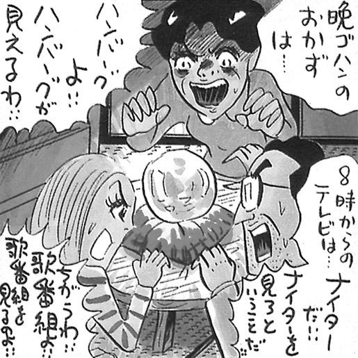
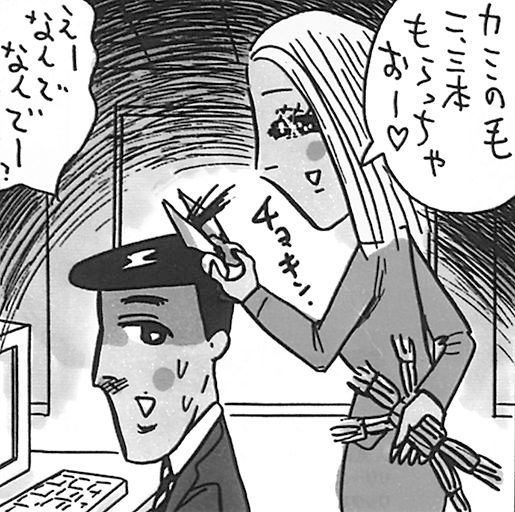

| なぜ宇宙人は地球に来ない？ 笑う超常現象入門 (PHP新書) | |
| 松尾貴史 | |
| PHP研究所 (2009) | |

なぜ宇宙人は地球に来ない？
笑う超常現象入門
松尾貴史著／しりあがり寿画
よく初対面の方に、
「松尾さんはオカルト嫌いなんですよね」
と、挨拶代わりに決めつけられてしまうことがある。もちろん、そんなことは全くないのだけれど、テレビの『ビートたけしのＴＶタックル』の年末特番「嵐の大ゲンカ超常現象スペシャル」等で、テレビ的に「肯定派」「否定派」（当然野坂昭如さんや大槻義彦教授［現在は名誉教授］とともに私もこちら側だった）として振り分けられ、ディベートをショーとして繰り広げる企画に多く参加していたので、そのイメージが強いのだろう。しかし本来私は「否定派」ではなく、「懐疑派」である。否定の中には拒絶に近いニュアンスがあるが、私は愛好家なので否定は当たらない。単に、「不思議であれば、すぐさま霊や宇宙人のせいにしてしまわずに、考え続けよう」という気持ちでしかない。
子供の頃から怪しいものは大好きで、学校でも有数のオカルト少年だった。中学から高校にかけてはスプーン曲げやこっくりさんに挑戦し、西洋呪術の本を読み漁り、嗜好も水木しげる作品、楳図かずお作品、「妖怪百物語」などの東映妖怪シリーズ、「ミステリー・ゾーン（トワイライト・ゾーン）」から、「エクソシスト」に始まるホラー映画も（スプラッター物以外は）大好きだし、現在も、未だ発見されていない文明の痕跡や、怪談咄、地球外生物の話題にも興味が尽きない。ただ、少年時代と今では「信じる」「信じない」ということに関してほぼ逆になっているだけで、超常現象関連のことども自体を忌み嫌っているわけではない。
本書は超自然現象や心霊現象を分析したり検証したりすることが主眼ではないので、どうか気楽に読んでいただきたい。私はもちろん専門の研究家でもなければ、物理学や心理学に長けているわけでもない。ただ、常識的な範囲内でできるだけ客観的に物事を観察するようには心がけるし、望ましいという理由だけである結論に飛びつくということが割合少ないタイプの人間だ、ということだけは自覚している。
ところが、芸能やテレビの業界に身を置いていると、どうしても「オカルト気質」ともいうべき人が多く、そういう意味では懐疑派の私は、時として少数派になってしまう場面も多々ある。本人の実力だけではどうにもならない「運」に左右される部分が大きく占める世界だけに、ご託宣、占い、縁起担ぎ、オカルト、風水などの「助言」で重大な行動を決めてしまう人までいて、超自然の世界を信奉する人も必然的に多くなっているようだ。そんな中で、劣勢に身悶えしながらも、どんなことを感じ、どう考えたかを、自分なりにわかり易く書いた。純粋に、興味本位に、読み物として楽しんでいただければありがたい。
人間は誰しも、「信じたい」という欲求が本能的に内在しているという。何かを信じることで、いかに人が救われ、いかに癒され、いかに元気づけられるか、今さら疑う余地など全くないほど確かなことだろう。宗教の存在意義も、きっとそこにあろうかと思う。
ところが、その「信じれば楽になれる」ということから、私たちは「疑う」という面倒臭く煩わしい作業を、必要な時にまで怠ってしまうことがある。中には、「疑う」という心の動き自体をも罪悪視するまでになっている。疑問というものは、時として素晴らしいひらめきや、アドバイスや、危険回避情報を与えてくれる。子供の頃から、「なぜだろう」「なにかしら」という好奇心や探究心を持たずに育ったら、まともな社会生活が送れるようになるだろうか。
私は、むやみに疑えといいたいわけではない。振り込め詐欺やインチキ霊能者に騙されない程度の懐疑精神ぐらいは持ち合わせていたいだけなのだ。肉親や親友など、愛する人を信じるのは当然だし、充分に客観的な検証が済んでいることを疑い続けるのは非効率であり、逆に秩序を乱すことにもなる。ただ、当然「ちょっと待てよ」と思って立ち止まることすらしない人が大勢いるこの社会を見て、苦々しい思いでいることも確かだ。
疑うことを卑しい精神活動だと思う人の中に、信じるという結論に飛びついて楽をしていることへの後ろめたさから逃れるために、「疑う」を貶め、「信じる」を美化する心理は働いていないだろうか。健全な懐疑精神なくして科学技術の発展はあり得ないし、電球も冷蔵庫もステレオも携帯電話もインターネットもタミフルも、生まれることはなかったろう。
ただ、先ほども少し触れたが、「信じる×信じない」という議論よりも、オカルト、超常現象というジャンルの話題が好き、という方に楽しんでいただければ本書の目的は達成している。私自身もそういう立場であって、個々の現象や業者にはツッコミを入れるけれども、「科学的にあり得ないからあり得ないのだ」と存在の可能性全体を否定するような野暮は、いわない、たまにしか。だから、「そんなものを信じるな」などと読んでくれたビリーバーを説得するつもりも自信も毛頭ないし、信じたい人にとってはそれぞれが真理なのだから、たかだか本一冊で考え方が根本的に覆る確率は、私が大好きなカレーライスを嫌いになるよりも低いだろう。第一、「思想信条の自由」が憲法で保障されているのだから、何を信じようと勝手である。
それよりも、なぜ私がオカルト的なるものに懐疑的な見方をするのか、信じる人にとってはかわいそうな存在にすら映るであろう私が、どういうつもりでオカルト業界の皆さんに反論しようとするのか、興味を持っていただければ幸甚である。健全な懐疑精神の発揮は、実は「不思議」に対する愛情表現なのだ。
本書は、雑誌『モノ・マガジン』（ワールドフォトプレス刊）で月に一度ずつ、六年余りにわたって「超常俗物図鑑」のタイトルで連載したものを中心に加筆・修正したもので、オカルトや超常現象に関わる「道具」や「モノ」を通して、様々な不思議現象について私なりに考えたり調べたり体験したりしたことをまとめたものである。素晴らしいイラストレーションを描いてくださったしりあがり寿氏、ＰＨＰ研究所の西村健氏、『モノ・マガジン』の連載当時の編集長の土居輝彦氏他、本書をまとめるにあたっては多くの方のご協力をいただいた。ここに謝意を表する。そして、「食指が動く怪しい現象」を起こし、話題を提供してくれた多くのオカルティストたちにも。
二〇〇九年四月
松尾貴史
なぜ宇宙人は地球に来ない？――目次
いたとしても地球には来ない
「宇宙人はいるのか？」
この疑問に関して、私達地球人は、アメリカ・アイダホ州の消防設備供給会社の経営者ケネス・アーノルドによる「空飛ぶ円盤目撃証言」以来、何と六十年以上にもわたって論争を続けている。
この時彼が、「ソーサー（皿、円盤）等を水面に投げた時、水の表面に何度も弾かれる飛び方」に物体の動きを喩えたところ、話を聞いた新聞記者が勘違いをして、「円盤の形をした物が飛んでいた」と書いたのが、「空飛ぶ円盤」という勘違い語の発端である。実際にアーノルドが見たのは、軍事的に機密の対象だったステルス型爆撃機か、その年に打ち上げられた観測気球か。もちろん幻覚か、別の人工物の見間違いか、それとも何かの自然現象かもしれない。ともかく、それが「宇宙人の仕業」であるとする根拠も必然も全くない。
「宇宙人」の発想には大きく分けて二通りがある。一つは、天体物理学や生物学、進化論等を総合的に照らし合わせて知的生命体の存在を考えるもの。もう一つがカルト宗教の教義の延長線上の「エイリアンは地球にやってきている」（一連の「ＵＦＯ」目撃騒動もこれに含まれる）という、妄想に近い荒唐無稽な思いである。後者は、五十年どころか二百年も前に、神秘思想家スウェーデンボルクが、太陽系内に住んでいる宇宙人達と交信して（何という夢のある話か！）、信者を集めたという。そして彼らは教会を造り、現在までその宗教的活動は続いている。この両者の間にある境界線が非常に曖昧で、洒落ではないが、「グレイゾーン」が広すぎるのだ。
「宇宙人は地球に来ている」的書物や矢追純一氏らの「ＵＦＯ」番組等では、宇宙人はすでに地球に来ており、その「事実」をＮＡＳＡは隠蔽していると、すこぶる被害妄想的な内容とともに、一見科学的な語句や映像、○○博士、○○教授、元ＮＡＳＡ職員、元ＣＩＡ構成員といった怪しげな肩書きを持つ人物の「解説」や「証言」が散りばめられ、もっともらしく放送の電波に乗り、もっともらしく書店に並ぶ。一般の読者や視聴者は、「真面目な本」のふりをした体裁やドキュメンタリー風に見えるまことしやかな演出に触れて、そこにあるでたらめな情報に批判精神や合理的思考・検証を持ち込むことなく、いとも簡単に信じ込んでしまうことが多い。
特に、公的な場で与えられた情報に対して私達は無防備だ。小学校から大学まで、ブロイラーが餌を食わされるかのように与えつづけられた情報を、疑わず、考えず、ただ覚え込むだけの学習をしてきたことも、その傾向を強める原因になっているのかもしれない。私の周囲にも「宇宙人が空飛ぶ円盤に乗って地球に来ている」と信じている人達の、何と多いことか。
ＵＦＯ宇宙人論者がなぜか目の敵にしているアメリカ航空宇宙局・ＮＡＳＡのインターネット・ホームページには、ＦＡＱ（ありふれた質問とそれへの解答）を設けている。翻訳ソフトを使って日本語で読んだら、「宇宙人は地球にいるか」の「エイリアン」という言葉を、ソフトが勝手に「外国人は地球にいるか」と訳してくれた。そりゃいるだろう。ひょっとするとこれも陰謀かもしれない？
地球外の知的生命体のすむ星の数を計算してくれた親切な物理学者は意外と多い。星の数ほどいるだろう。「ゼロから八万個」という人もいれば、「二〇万個」という人もいる。生化学者でＳＦ作家のアイザック・アジモフ博士は銀河系内で「二一個」と見積もった。
天文学者のフランク・ドレイク博士は、カール・セーガン博士とともに、「銀河系内の知的文明の数を計算する式」というものを考えた。いわゆるドレイク方程式、ドレイクの公式と呼ばれているものだ。すなわち、「毎年誕生する恒星の数×惑星を持つ恒星の割合×生命の発生に適した惑星の割合×その惑星の中で生命が発生し得る割合×知的生命が発生し得る割合×高度文明になる割合×その文明の寿命＝銀河系内知的文明数」だという。
いずれにせよ、すぐ隣の知的文明星までは、何百光年から何万光年の距離、ということになるようだ。光の速さで飛んで何百年も何万年もかかる。滅茶苦茶に進んだ文明を持っている知的生命がいて、光の十分の一までスピードを出せる乗り物を持っていたとしても、誰が好きこのんで、自分達の最高技術を駆使して、何千年も何万年もかけて、彼らにしてみれば「未開の地球人」などに会いにくるものか。ついでに牛の死体を切って血を抜いたり、麦畑を丸く踏み倒したりしながら......。
ちなみに、地球人が持っている一番速い乗り物は、光の速さの一万分の一のスピードである。私達は、とてもじゃないが、「隣人」には会えそうにないようだ。万が一、いや、億、兆、京が一、すぐ近所（？）に地球外生命が宿る可能性のある星があっても、文明が栄えるタイミングが地球人のそれと重なる可能性はほとんどないだろう。例えば、地球の誕生から現在までの四十六億年を「一日」に置き換えて考えると、私達人間がこの地球に誕生してからは、わずか「六秒」しか経っていないのである。他の文明と時間的に重なる可能性自体がきわめて低いことがわかる。
たまたま今日、千駄ヶ谷の喫茶店ルノワールで、髭の紳士と話し込んでいる矢追純一氏を目撃した。こちらから「近々、何か番組をやる予定はあるのですか」と声をかけると、「いやあ、特にないんだけどねぇ。フジがちょっと、やる気になってるかなぁ。プッシュしといて！」と頼まれてしまった。なので、プッシュ、プッシュ。
ロマン溢れる「ＳＥＴＩアットホーム」
飛行機か、気球か、どこの国の物か、何の用途の物か、自然現象か、鳥か、異常屈折現象か、等々。現時点で、既知の何であるかの確認が取れていない物体を、アメリカ空軍が「未確認飛行物体」（Unidentified Flying Object）と呼ぶようになってから、半世紀以上が過ぎた。
その略語「ＵＦＯ」は、もはや完全に違う意味の言葉として捉えられ、使われつづけて久しい。多くの人々はこの語をなぜか、「宇宙人の乗り物」という意味として使いつづけている。しかし、これが「未確認飛行物体」の略であるという事実は変わらないのだから、宇宙人信者達はこの呼び名を使うべきではない。なぜなら、彼らには「宇宙人の乗り物」という「結論」が、出てしまっているからである。Identified Flying Object、つまり「ＩＦＯ」と読んでいただかなくてはいけない。
そして、もう一つの「空飛ぶ円盤」という語も、目撃者のケネス・アーノルドが飛び方を指して「水面に投げた、撥ねるソーサーのよう」と表現したのを、ロサンゼルスタイムスの記者が勘違いして生まれたもので、記事を真に受けて、宇宙人達との接触をでっち上げたジョージ・アダムスキーは「アダムスキー型」の円盤を捏造するにいたったのである。今となっては、宇宙人信者の間でも、アダムスキーがイカサマ写真で金儲けをしていたことを知らない者は少数派だ。
そもそも、空に何かがあったからといって、何ゆえ見もしない宇宙人のせいにするのか、その理由がわからない。例えば、ケチで有名な友人、それも今までジュース一杯おごってくれたことのないような人物が、突然あなたを温泉旅行に招待してくれるという不可思議な現象が起きたとしよう。その時あなたは、「宝くじにでも当たったのだろうか」「ケチで痛い目にあって心を入れ替えたのだろうか」「自分に対して、まだばれてはいない悪事をはたらいているのだろうか」「今までの罪滅ぼしか」等の、現実に起こり得る理由を一切かなぐり捨てて、「宇宙人に誘拐されて、脳にチップを埋め込まれたのだ」という結論に飛びつくだろうか。もしそうなら、あなたもすぐに矢追純一になれる。空に何かわからない物や光を見た、即ち宇宙人の乗り物、と考えるのは、それと同質の論理展開だ。
空飛ぶ円盤ビリーバー達は、オカルトビリーバー同様、真っ当な科学者のことを攻撃する際、「ロマンがない」「科学が全部わかっていると思ったら傲慢だ」という陳腐なスローガンをよく口にする。しかし、「科学にまだわかっていないことのほうが多い」ことを誰よりもわかっているのは、科学者達自身である。その人達の話も聞かずに勝手な妄想を繰り広げ、闇雲に敵対視し、科学に向き合う人々を傲慢呼ばわりするほうが、よほど狭量で「ロマンがない」のではないか。人類にわかっていないことと、信者達にわかっていないこととは、イコールではないのだ。
ロマンのない科学者に『コンタクト』（同名映画の原作、カール・セーガン著、池央耿／高見浩訳、新潮文庫）が書けようか。彼はアメリカの科学者の中でも、懐疑論の急先鋒だった。『カール・セーガン科学と悪霊を語る』（青木薫訳、新潮社）を併せて読まれることをお薦めする。この広い宇宙に、地球のように知的生命体が存在する可能性は、天文学者や生物学者のほとんどが認めているのである。早稲田大学の大槻義彦教授ですら「いると思う」と言っているのだ。もちろん、存在はしても遭遇することはまずあり得ないので、本当のロマンを持つ天文学者達は、宇宙に信号を発しつづけ、それこそ天文学的に低い確率である地球外からの知的生命体のメッセージを心待ちにしている。
今も世界中で、彼らが呼びかけて「ＳＥＴＩアットホーム（Search for Extra Terrestrial Intelligence、地球外知性体探査）」というプロジェクトが継続されている。インターネットにつながっているコンピュータを使って地球外知的生命体の探査を行う実験で、インターネットで無料のソフトウェアをダウンロードし、コンピュータが使用されていない間、スクリーンセーバーとして作動させながら電波データをスキャン、電波望遠鏡のデータを分析することで、誰でも参加することができる。世界中の数百万台ものパソコンの余った計算サイクルを利用して、ノイズに混じって宇宙から届く電波信号の中に知的生命体が存在するわずかな徴候を探し出そうというもので、二〇〇カ国、二〇〇万人以上がダウンロードしたというから、その関心の高さがわかる。
二〇〇〇年の暮れのまさに世紀末、ＮＨＫのテレビ番組で、宇宙人の存在を考える時に必ずといっていいほど引用されている「ドレイクの公式」で知られる天文学者のフランク・ドレイク博士（ＳＥＴＩプロジェクトの協力者）と、彼が扮した宇宙人を科学者役の私が出迎えるというコントを共演させていただいた。茶目っ気とユーモアのセンスに秀でた彼の姿も、「ロマンがない」「ガチガチの科学万能主義」とはかけ離れた、少年のような想像力を持った人として私に映った。
アメリカにＵＦＯが墜落！
朝鮮民主主義人民共和国によって出された、拉致事件の被害者の「死亡診断書」と称するでたらめな捏造文書に関して、国家ぐるみでこれほど稚拙かつ卑劣なことをやるかと呆れた人も多いだろう。「国家が何かを隠蔽している」というレトリックは妄想家の専売特許だが、北朝鮮のおかげで、その手のデマが説得力を持ってしまったのではないだろうか。
「機密文書」。この響きはよほど、悪しき「ロマン」を感じさせるのであろう。例えば、「宇宙人が地球にやってきている」と触れ回っている狼少年達は、「マジェスティック・トゥエルヴ」というグループの名を持ち出すのが大好きである。世に蔓延する、おびただしい「ＵＦＯ」騒動のうちで、最も印象的でドラマテイックな「ロズウェル事件」はその典型である。
アメリカ合衆国の政府が、「ＵＦＯの墜落」によって、「あらゆるＵＦＯ関連の情報を隠蔽し始めた」と彼らは思い込み、ＳＦ映画さながらの様々な陰謀をでっち上げてきた。当時の大統領・トルーマンの命令で、国家安全保障局（ＮＳＡ）が設置され、「ＭＪ―」という文書が作成されたとか、次期大統領・アイゼンハワーに対して「ＭＪ―12作戦」のブリーフィングが行われたとか、極秘文書はその時の為のものだとか、なぜか楽しそうだ。
なぜこの最高機密「ＭＪ―12文書」が世界中に広まってしまったかというと、「ＭＪ―12文書」は、一九八七年のある日に、ＵＦＯマニア（もうこの時点で眉唾だけれど）のシャンドレー氏（つまり、アメリカ版の矢追氏みたいな人か）に差出人不明の郵便物が届き、中に未現像のフィルムが入っていたからである！ この文書が「本物」であるとする根拠に、「トルーマン大統領からフォレスタル国防長官への覚書の中に、ＭＪ―12の文字が明記されている」ということを挙げる者もいるが、大統領が扱う書類は膨大で、こんな記号は捜せばいくらでも出てくるだろうし、前後関係も不明、それ以前に真偽すら怪しいので、何の参考にもならない。しかし、「機密文書」信者達は、必ず「真偽には賛否両論ある」と、さも議論が賛否で拮抗しているかのように喧伝するのだから、意志が強い。
その内容を詳述する必要は全くないので大まかに書くと、民間人が小型飛行機に乗っていて、ワシントン州カスケード山脈を飛行中、九機の円盤を目撃、ニューメキシコ州内に一機が墜落し、残骸を回収する為の秘密作戦が実施され、人間に似た四体の死体が発見されて、
「訪問者の動機と意図がわからないことは安全保障上、重大な問題で、しかも、航空機に対する監視活動が増えていることは、新展開が近い未来にあるのではないかと懸念する。どんな犠牲を払ってでもパニックを避けなければ」
というのだ。もちろんご存知の通り、「近い未来」には何も起こらなかった。あれから六十年以上が経っているが、対エイリアン関係の差し迫った状況も、安全保障上の大問題を起こしかねない状況も、皆目、ない。もちろんパニックも。もしそれが本当なら、過去の追想録として、カーターでもレーガンでもクリントンでも、「実はこうだった」と何らかの説明をしただろう。トルーマンもアイゼンハワーもとっくの昔に地球上から消えているこの時代に、今なおこの隠蔽説を真に受けたり、真に受けたふりをしてインチキな番組を作ったりしているＵＦＯディレクター（？）が存在しているのだ。
このイタズラ文書を誰が作成したのかということより、なぜそんなものに騙され、しがみつきたいのか、そのほうがよほど興味深い。それこそ、北朝鮮の死亡診断書偽造のほうが、動機と意図がはっきりしている。でたらめなＵＦＯ話で宇宙人の襲来を心配するより、彼の国のノドンミサイルが、日本海側に林立する原子力発電所を攻撃してくる心配をしたほうが数億倍有益ではないだろうか。
ましてや、自分達の天下り先と保身と責任回避ばかりを優先して考えている高級官僚達にしてみれば、宇宙人に関する情報を、秘密にしておく必要などまるでない。宇宙人だぞ!?
そんなものの責任を誰が取れるというのか。政治家達にしてみても、「私が宇宙人と最初に友好関係を結びます！」と自慢して、ノーベル平和賞でも狙いたいところだろう。まっ先に利権を確保できるかもしれない。さらにいえば、最初に「宇宙人」を解剖、研究、報告したのなら、その医師はノーベル医学生理学賞、そして宇宙船の残骸や痕跡を研究すれば、化学賞と物理学賞をダブルで受賞できる可能性すらある。
「あらゆる関係者が、墓の中まで持っていく秘密」などあろうはずもないし、もしもそこまで徹底していたら、噂すら出るはずがないではないか。
これらの文書の内容を裏づける「証人」と称する人物もよく現れる。「ＮＡＳＡで働いていた」等という名目で、マスコミに対して、「私は中で実際に宇宙人を捕獲し研究に携わっていた」「隠蔽工作をしている組織の中にいた者だ」と言って名乗り出てくるのだ。彼らは、実はそこの食堂に料理を運んでくる業者のアルバイトをしていただけ、ということもある。もちろん、全くの嘘というわけではない。「消防署のほうから来ました」詐欺と一緒だ。そして、日本のテレビ局は、怪しいことは知りつつも、なぜか彼らをＶＩＰ待遇で番組に招いてしまう。
何度もいうが、私は宇宙人がいないとは思わない。ただ、自分達よりもはるかに劣った文明を持つ地球人を、不定期に観察しては、たまに肉眼や写真で見つかるヘマをやり、こそこそ隠れて家畜の死体を切ったり、車を空に浮かばせたりする為に、光に近い速さで飛んでも何百年かかる所からやってきているとしたら、あまりにもアンポンタンだ。
「アポロは月に行っていない」の根拠とは？
何万年に一度見られるという、火星と月が接近した夜空は、私を意味もなく興奮させてくれた。
月という存在は、そもそもが神秘的である。狂気を表す「ルナティック」という言葉は、満ちたり欠けたりのメタモルフォーゼを繰り返す「ルナ（月）」から連想されたものだ。そのイメージ通りの迷信が、今なお語られている。夜に満月を見て変身する狼男とまではいかなくとも、月は人に奇妙な行動を取らせたり、出産や犯罪を促したり、様々な影響を与えると信じる者は多い。
こじつけとしては、「潮の満ち干も月の影響。ほとんどが水分の人間はその影響を受けないはずがない」というレトリックが便利に使われているようだ。ならば、満月が見えもしない雨降りの日のほうが、よほど水だらけで狂乱状態になるのではないか。人間よりも、例えばこんにゃくは水分の割合が断然多いが、月の影響を強く受けているのだろうか。
今まで、数多くの研究グループがおびただしいサンプルによって統計的調査を行ってきたが、その結果は、総出産件数、正常出産件数、多児出産件数、死産件数、交通事故、殺人発生率、他の犯罪発生率、自殺、精神障害、精神病院への入院患者数のいずれにも、満月は影響を与えていないことを示した。どうも、満月の夜に事件が起きると、そうではないタイミングで起きた事件より「満月だった」と印象や記憶に残りやすいことが、迷信を温存する原因の一つのようだ。
ある医師が話しかけてくる。
「松尾さん、アポロは月に行ってないんですよ」
そんな、懐かしの映画『カプリコン１』を思い出させる妄想に私は戸惑った。人の命を預かって判断を下し治療をする医師として、こういう判断力の人物が勤まっている現実に驚く。しばらくの間、世間はこの話題で持ちきりだったようだ。世間といっても私の周りの狭い領域だが。
そのきっかけになったのは、当時放送されていたテレビのバラエティ番組『これマジ!?』で取り上げた、「ＮＡＳＡによる月面着陸捏造疑惑」の特集である。「矢追純一ＵＦＯ特番」や『奇跡体験！ アンビリバボー』等の、オカルト信奉者や超常現象マニアを煽り、その拠り所となっていた番組の一つで、冷静に観るならショウとしては楽しいものだが、視聴者の中には著しく判断力がない人も少なからずいるようで、真に受けた人達がなぜか、何の恨みもないただのアメリカの行政機関を目の敵にするようになってしまうのだ。そんなエネルギーがあるなら、自国の財務省や国土交通省や厚生労働省に向けてほしいところだ。「世界がユダヤ人の陰謀で動いている」というデマを信じ込んでいる被害妄想に似たものを感じてしまう。
小さな書店で、その手の本をすぐに二冊見つけることができた。片方は、自称超能力者（「透視能力に優れている」そうだ！）で「英国惑星間協会」という得体の知れない団体の会員らしく、「火星の人面岩」ビデオを作っている人物の共著。もう一方は自分にカタカナのペンネームを付けて「著者」とし、本名で「訳者」と名乗って書いているテレビ番組の制作者。その時点で耳を貸すのも馬鹿馬鹿しくなってしまうが、一応差別はしないで読んでみると、これがまた中学生でも気づくような勘違いと、情報を悪意にとって解釈する意図的な誤誘導のオンパレードだった。
彼らが「疑惑」を持っている根拠がどんなものか。例えば、「ＮＡＳＡが発表したアポロ一六号の写真で、宇宙飛行士の足元の岩に『Ｃ』の文字が見える」のだという。見てみると、どうも、スキャンする時に縮れた毛くずが紛れて写り込んだだけのようだ。明らかに写真の岩肌とは質感が違う。ほかに、「同じ山が写っている二枚の写真の一方は月着陸船が写り、もう一方にはない。離陸した後に電送したとしても着陸船の下の部分が残っているはず」というものもあるが、数キロ先にある山は、写真を撮る位置を二、三〇〇メートル移動したからといって見え方は変わらない。
また、「真空のはずの月面の星条旗がはためいている」という最も有名な「根拠」もある。それはもちろん、旗の上に芯が通っているからで、動くのは飛行士が動かしていたからに他ならない。空気抵抗がない分、長く揺れつづけるのは当然だ。
「月面の光源が太陽だけなら、複数の物の影は平行に伸びるはずだが、影が平行ではない。光源が二つ以上あった証拠だ」には笑った。地上で平行に伸びていても二次元の写真では位置と方向によって角度が出るのは当たり前ではないか。小学生でも知っている通り、遠近法で二次元の写真上では平行でなくなるのは当然だし、地形によっても影の伸び方は変わってくる。第一、二つの方向に影が伸びているなら、強い光源が二つあるということで、それぞれの物から二本ずつ二股に影が出ていなくてはならない。「影の側も明るい写真がある」というのは、ハイリゲンシャイン現象といって、広く降り注ぐ光がごつごつした月面に反射している為だ。デッサンの基礎を習った者なら普通に知っているようなことだ。
難癖ともいえる「根拠」もある。「空に星が写っていない」というのだ。これは私達が夜スナップ写真を撮っても星が写っていないのと同じで、露光時間を長くしないと写らないのは写真の初歩的知識だ。「宇宙服の前に取りつけられてファインダーも覗けないカメラで撮った割には美しい出来映えの写真だらけだ」は何をかいわんや、そんな貴重な資料になる写真を撮るのに訓練もせずに行くか、三八万キロも彼方に。もちろん、おびただしい枚数の写真の中から、写りのいいものを選んで公表しているからで、これに文句を付けるのは明らかに筋違い。そして、陰謀論者達はその選に漏れた没の写真を、「隠蔽」だと攻撃するのだ。はあ。
意外と簡単に作れます
フォックス姉妹のにせ霊媒事件やネス湖の「ネッシー」捏造写真事件、コティングリー妖精事件等と同様、こちらもまたいたずら好きの人々による他愛のない冗談によって、世界中に蔓延してしまった、まことにおめでたい代物である。
一九七〇年代の後半に初めてお目見えしたこの「ミステリーサークル」は、「霊魂が存在する証拠」と信者達が思い込んでいる「心霊写真」と似たような意味合いを、「ＵＦＯ界」において持っている。もちろん、「心霊写真」と同じく、ミステリーサークルは、知的生命体が地球にやってきていることの、何の証拠にもならない。ちなみに、海外では「クロップサークル」と呼ばれている。「ミステリーサークル」という呼び名は、早稲田大学の大槻義彦教授によるものだ。
「世間をあっと言わせてやろうぜ」と、ダグ・バウワー、デビッド・チョーリーという、いい歳をしたイギリスのおじさん二人組が、週末のパブで酒を酌み交わしながら相談をして始めたのが、そのルーツといえる。彼らはワイヤーを結んだ木の板や紐を用いて、巧みに麦を踏み倒し、サークルを作り上げていった。
もちろん、自然現象として似たようなことは大昔からたびたび起きていた。俗にいう「かまいたち」というのもそうだろうし、当初、一部の気象学者や物理学者達（ジョージ・テレンス・ミーデン博士や大槻教授ら）がその原因であろうと推理した「竜巻理論」「プラズマ理論」で説明できる現象も中にはあるかもしれない。
広い面積の小麦畑等に上方から何らかのストレスが加えられてできた痕跡を、「宇宙人の乗った空飛ぶ円盤によるもの」であると想像したくなるのは、熱心なＵＦＯ信者ではなくとも、当たり前ともいえる発想である。人が寝静まったあとに作り上げられるミステリーサークルは、その意味ありげな形状と、発見した時の意外性で、どうしても忽然と現れたかのような印象を生み、次から次へと「宇宙人の存在」についてのまことしやかな噂話が伝播することになる。
だいたい、他人の畑に無断で入って、広い範囲で大切な作物をなぎ倒すのだから、犯人は大っぴらに「実は犯人は俺だよー」などと告白も自慢もするわけにはいかない。種あかしのないまま愉快な気分を抑えられずに、また次の作品を生むことになる。一時は、イギリスだけで「サークル」を作るサークルは四〇以上に上ったといわれている。本場イギリスでは、ミステリーサークルを作るコンテストまで開かれたこともある。これが本当のミス・コンか。
面白いのは、この現象（？）が起こり始めた当初は、単なる丸い形にすぎなかったものが、自然現象ではできるはずのない人意的で幾何学的な文様が作品に施されるようになったことである。彼らは「自然のプラズマ現象である」と学者達に唱えられ、よほど悔しかったのだろう。作者の製作意図としては「宇宙人の乗り物の仕業であると思ってほしくて作った」のに、その甲斐がなくなってしまったのだから。私が犯人でも、夜中に何時間もかけて作った労作が、学者達に「自然にできたんじゃないの」と言われてしまっては無駄徒労に感じるだろう。
同心円や直線、三角、ダビデの星、文字や記号等、工夫に工夫を重ねた作者達の努力によって、「それ見たことか。やはり宇宙人の仕業ではないか。このデザインは我々地球人に対して彼らが残していったメッセージなのだぁー」という宇宙人信者達の声を高めたことは、ある意味では「称賛」に値するだろう。どうしても、宇宙人には地球に来ていてほしいという信者達の欲求をうまく利用したようだが、しかしなぜ「確実に六七億も地球に生息している」人間の仕業だという発想がないのか不可解きわまりない。
さて、件のダグとデイブ（デビッド）は、「白状」した当初、「ミステリーサークルは全部自分達が作った」と言っていたのだが、麦畑の持ち主達から賠償請求されて、「全部が俺達ではない......」「二〇〇個くらい......」「二〇かな......」などとトーンダウンしてしまい、そのことがまたビリーバー達を勢いづかせてしまったようだ。おなじみの矢追純一氏等は、一夜にしてこれだけのものを描くとなると何機ものヘリコプターと何十人にも上る人手が必要だから人間の仕業ではないことがわかる、と主張しているが、実際に作ってみると意外と簡単に作ることができる。イギリスのウェセックス・スケプティックスという団体がこっそり作ったミステリーサークルは、複数の「研究家」達から「本物だ」とお墨付きを貰った。そもそも何が本物なのかはわからないが。
何にせよ、宇宙人がメッセージを送ってくれているのだとしたら、なぜほとんどがイギリスの麦畑でそれは行われて、なぜほとんどが週末に作られ、なおかつ、なぜ全く意味不明の幾何学模様なのか。光の速さで飛んでも何百年何千年もかかる所からはるばるやってくる技術は持っているくせに、なぜこそこそと隠れまわり、地球人に何かを伝える手段として、電波や音声や映像ではなく、なぜ麦を倒す。
いくら疑問を投げかけても、信仰の域に達している状況なので、客観的な事実等は、もはや信者達にとっては、さほど大きな意味を持たないのかもしれない。
環境破壊による悲劇の痕跡
ナスカの地上絵やストーンヘンジ、ピラミッド等とともに、「宇宙人の仕業だ」という夢のある発想を生んでいる最も象徴的なスターは、何といってもイースター島のモアイ像だろう。恐らくは、読者の中にそれがどのような物かを知らない、という人はいないのではないか。イースター島とは、南米のチリから西へ数千キロほどの所にある、海底火山の爆発によって生まれた太平洋の孤島である。ご存知のように、十六世紀、四月五日の復活祭（イースター）の日に発見されたことにより、この名で呼ばれている。この事柄も、神秘的な空想に一役買っているかもしれない。
ＪＲ渋谷駅前に設置されている「モヤイ」という巨石で造られた石像がある。名前も、石でできた大きな顔というところも「モアイ」と似ているが、こちらは新島が東京府（移入当時）に加わって百周年にあたる昭和五五年、当地から記念の品として贈呈されたものであり、日本のあちらこちらに寄贈されているうちの一つである。イースター島ともモアイともほとんど関係はない。姉妹都市ですらない。最近は死語になってしまったようだが、「もやい」は「催合」「舫い」「結い」等と書く。「まとまって協力する」という意味の古語で、新島では方言として残っている。
それをもじり、実はモアイを連想しつつ企画したようで、乱暴にいってしまえば、駄洒落でやってしまった観光事業である。当地の新島には、イースター島のように島民やアーティストが造った「モヤイ」が点在している。ちなみに、こちらに使われている石は抗火石（コーガせき）という「水に浮く」石で、その通気性と保水力から園芸や水の浄化に使われるものだそうだ。なぜか日本の新島と、イタリアはシチリアの北にあるリパリ島の二カ所でしか採れない珍しい石材だという。
さて、話をイースター島に戻そう。子供の頃の私にとって、この島に転がり、あるいは立っている、何百という巨像「モアイ」の存在は、完全に「宇宙人が大昔から地球にやってきている」証拠だった。そして、「天変地異によって沈んでしまったといわれる太平洋の巨大な大陸『ムー』が存在した証拠」でもあった。私だけではない。「モアイ」の存在を宇宙人来訪とムー大陸の根拠にする大人も多かった。立っているモアイの目は北極星に向いており、宇宙人の目印だった、などともいわれていた。もちろん、今となってはそんなことを本気で信じる者はほとんどいない。
モアイが宇宙人の作による物だという発想は、概ねこういうことだろう。第一に、重機もないのに数十トンもの巨像を運んだり立てたりすることはできないはずだ。第二に、島には金属はなかったから、石を加工できないはずだ。第三に、こんなわけのわからない物を造るのは宇宙人だからだ......。ところが、巨石を運ぶ時の方法は解明され、丸太をコロとして使っていたことがわかっている。立てる時にはテコの原理で少しずつ起こし、石や木を挟み込んでいったらしい。石の加工は金属がなくてもできる。モアイの材料は凝灰岩という脆い石で、堅い石を使えば簡単に削れる。近年、日本人観光客が落書きを彫ってしまい、世界中からひんしゅくを買っていたのを覚えている人もいるだろう。
地球人よりはるかに高度な宇宙人が地球へやってきて、岩を削って巨像を造り、それを何百と立てて目印にするというのは、あまりにも非効率で原始的すぎ、かつ無意味である。島よりモアイが目立つとでもいうのだろうか。それとも、ここを探すために他の島へも訪れて、「ここじゃない」「ここでもない」と大顔面石を探し歩くのだろうか。この島がオランダ船の漂着によって発見された時、みすぼらしい住民達が、何のために、どうやってこんな大仕事をやってのけたのかがロッへフェーン船長にとっても不可解きわまることだったらしい。
東京大学大学院の石弘之教授によると、千六百年ほど前に流れ着いたポリネシア人が、島に住み着いた時に持ち込んだであろう、農作業の時間が短いタロイモ等の芋類を栽培し、有り余る時間を費やして先祖崇拝のための偶像としてモアイを造ったらしい。
そのうち人口が増え、移植から千年が過ぎる頃には、最初数十人だった人口が七〇〇〇人程にまで膨れ上がったという。一族の隆盛の象徴としてモアイを造り続けた結果、膨大な巨石を運搬する丸太を使う為伐採が激しくなり、エネルギーとしての木材も枯渇し、そうなると材料がないために船すら造れなくなって、漁にも出られず、食料は逼迫していく。舟がないから移住することもできない。貧すれば鈍する、部族間での対立が激しくなり、深刻な飢餓の為に、何と敵対する一族を食べてしまう（！）という惨状が繰り広げられたのだという。そして、相手の一族を辱めるため、聖なる墓であるモアイを引き倒し、戦争を仕掛け、さらに敵を捕まえ、食べ続けたのである。
島にある洞窟等からは、その跡らしき人骨が多く見つかった。中には、頭蓋骨を割ったり、骨を叩き切って中から骨髄を取り出したりした人肉食の証拠がおびただしく存在している。
モアイとは、無駄な公共事業の行き過ぎが招いた、環境破壊による悲劇の痕跡だったのだ。
当時の技術で制作可能
一九三六年、考古学者のクロウバーとメヒーアが、ペルーのアンデス山麓ナスカ郊外で古代墓地の発掘調査をしていて、休憩時間にキャンプの裏の丘を散策中、砂漠へ向かってまっすぐに伸びる溝のようなものを発見した。特に注意を払う必要のない単なる水路だと思った彼らは、発掘日誌に短いメモを記しただけだった。ところがその二、三年後、この砂漠の上を飛行機が飛ぶようになって、その大きな図柄のことをパイロット達が報告するようになってきた。
メヒーアがリマで開かれた考古学会でナスカの水路のようなものについて発表した時、興味を持った歴史学者コソックが現地を調査した。通訳として雇っていたドイツ人数学者のマリア・ライヘと図柄等の資料をまとめたところ、ライヘはその図を構成する幾何学的な線の正確さに驚き、以来、一九九八年に亡くなるまで、生涯を通じてナスカの地上絵を研究、保存し続けることになった。決して豊かとはいえないナスカで不自由な生活を強いられながら、母国に持っていた家まで売り払って研究に没頭した。
数十メートルから数十キロメートルという、そのあまりのスケールゆえに、相当な高度の上空から見下ろさなければ図形を認識できない巨大な絵は、学者達の想像力をかき立てた。数えきれないほどの直線や三角形、矢印、渦巻き等の幾何学的な模様、サル、コンドル、クモ、花、そして人間と思われる大きな図柄は、神秘以外の何ものでもなかった。
これほど大規模なものを、古代人達はなぜ造ったのか、多くの人達が様々な仮説を立てた。
 宗教的な儀式に使われたという説。
宗教的な儀式に使われたという説。
権力者が威勢を示す為に作ったという説。
不作と不漁、豊作と豊漁の地域のバランスを取るために作業をさせたとする説。
潅漑用の水路に関係するものであったとする説。
古代人が原始的な熱気球を使って上空から楽しんだとする説（当時存在したであろう物と技術で可能だったらしい）。
もちろん、この複数が正解である可能性も大きい。ライヘが提唱し、死ぬまで抱き続けた説が、天文学との関係だ。農民達が、水不足のこの地の水路にいつ水が流れるかを、より正確に知るための暦のようなものだったというのだ。残念ながら、コンピュータ分析によって、それらの相互関係に有意な要素は見出せなかったそうだ。
ある種の人々が飛びつきたがる、お決まりの傾向として「宇宙人の仕業」説も飛び出した。「地上から見えないものを誰に見せるのだ。宇宙人の為だとしか思えない」という人もいるが、原始的な宗教の多くが太陽崇拝であることは気にしないのだろうか。どこまでも続く直線は宇宙船の滑走路だという。どんな推進技術だというのだろう。それに、地べたに線を引かないと舵取りが上手くいかない程度の技術力しか持たない知的生命体なのか。「数十キロメートルにも及ぶ狂いのない直線を引く技術を、二千年も前の人間が持っているわけがないから宇宙人」なのだそうだ。切り口が鋭利な動物の死体を見ても、空に光が浮かんだのを見ても、丸く踏み倒された麦畑を見ても、火星の表面のでこぼこが顔のような影を作っているのを見ても、居眠り運転で記憶が飛んでも、不可解に感じれば何でも宇宙人のせいにしてしまう発想を、私の解釈では「ロマン」とはいわない。「おっちょこちょい」である。
エーリッヒ・フォン・デニケンが「航空機から指示を受けて造成された可能性がある」と、宇宙船滑走路説を本で紹介したことがきっかけだったようだが、もちろん、高度なテクニックがなくとも直線を引くことは可能だ。
起点と、その数百メートル離れた所に棒を立て、さらに数百メートル先にも立てる。起点からその二本が重なって見えるように直線を結ぶ。単にそれを繰り返せば、延長線を容易に延ばしていける。動物などの具象図形は、おそらく下絵に方眼をかけて分割し、長さの単位をもとにされた広い土地に分割区域を適用し作図していったと考えられる。付近からは、その根拠となるべき二畳大ほどの下絵が多く発見されている。
私が一番説得力を感じているのは、「雨乞いなどの儀式をシャーマン達が行う時、楽器を鳴らしながら、線分の上を行進したのではないか」という説だ。これなら、ほとんどの図形が交差なしの「一筆書き」で描かれていることも納得しやすい。
地上絵は非常にデリケートなもので、暗褐色の石や土を表面から帯状に取り除き、下にある黄白色の土を露出させているだけのものだ。千数百年から二千年もの間残っていたのは、雨が少ない気候の賜物なのだが、風などで土がかかり見えにくくなると、ライヘは線の上を歩いて石を片づけて回ったそうだ。
ところが、デニケンが著書で紹介したことで、観光客が絵を踏み荒らして回るという被害が続出し、ペルー政府の保護地域指定も機能せず、ライヘは資金繰りが厳しい中、監視人を自腹で雇わざるを得なくなったそうだ。彼女は故人となってしまったが、今ではユネスコの世界遺産に指定され、年間八万人もの観光客が押し寄せる人気の場所になっている。そして最近、またもや地上絵が危機的状況にあるというニュースも伝えられた。付近に廃棄物の集積場が作られ、ゴミを運搬するトラックが、毎日地上絵の上を踏み荒らすように通って行くそうだ。日本の熊野古道もそうだが、世界遺産の多くは似たようなジレンマを抱えている。
二〇〇五年三月、ナスカ近くのパルパという所で、別の地上絵群が新たに発見されたという。グーグル・アースが地球のすべてを見せてくれているようにすら思えるこのご時世にいたっても、この星には、まだまだ謎が多い。
誰でも簡単に曲げられる
「スプーン曲げ」という熟語は、いつ頃から市民権を得たのだろうか。恐らく、一九七〇年代の前半に、日本でそのブームが起こったあたりからだろう。そもそもスプーンは曲げるものではないのに、「曲げ」という動名詞がくっついている。これは「瓦割り」「腹切り」等の言葉と同じく、あくまでもデモンストレーションの要素が強いということを表しているのではないだろうか。
ご存知のように、スプーン曲げという詐術を最初に流布したのは、イスラエル生まれの奇術師ユリ（本来の読みはウリだとも）・ゲラーである。イスラエルでそれより以前に出版された奇術の本の中に、すでにスプーン曲げの方法が紹介されていたという話もあるので、ひょっとするとそれを参考にしていたのかもしれない。テルアビブにあったディスコでマジックショーの余興をやっていたゲラーは、アンドレア・プハリッチというオカルト業界の商売人にそそのかされて、この恐ろしく単純かつ巧妙なトリックで世界中を回って荒稼ぎをしたのだ。
今日では、彼の行ったトリックは、アメリカのジェームズ・ランディ氏等によってことごとく解明・公表されてしまっているが、よしんば彼の力が本物の念力だったとしても、実生活でこれほど役に立たない能力はない。「超能力」と言うが、能力というのは「役に立つ力」のことである。「超能力」であれば、なおさら、ものすごく役に立たなければならない。ところが、彼の「能力」はどうだ。スプーンやフォークを曲げる、切る（スープが飲めない。カレーが食えない）。鍵を曲げる（ドアが開かない）。テレビ番組で披露した大がかり（大仕込み）なものでは、ロープウェイを停める、エレベーターを止める等、人々の生活の邪魔にこそなるが、役に立つようなものは何もない。せいぜい、よさそうなことといえば、歯車の油が固まった古い腕時計を視聴者にテレビの前へ持ってこさせて、「握り締めて念を込めて」などと言いながら、時間が経って手の温もりで油が溶けて動き出せば、得意げな顔の一つもしてみせる、という「能力」ぐらいのものか。
彼が、当時ネタに困っていた矢追純一というディレクターによって、日本テレビの『木曜スペシャル』に引っ張り出されてからというもの、雨後の筍のごとく、スプーン曲げを得意とする人物が続々と現れた。ジェリー藤尾氏のような例外（本物という意味ではなく、分別盛りの大人という意味）もあるが、『週刊朝日』によって、インチキの決定的な証拠を発表されてしまったＳ少年。当初は面白半分の出来心でやっていたのだろうが、そのうちルポライターの父親のプレッシャーもあってあとへ引けなくなったようだ。今でもオカルト業界の「論客」として名を馳せているＡ氏。フジテレビの番組の隠しカメラでトリックを施している場面を暴かれてしまったＫ氏。私がよくやるスプーン曲げのトリックは、彼とラジオ番組の打ち上げでもんじゃ焼きを食べに行った時に盗み見て覚えたものだ。そういう意味では感謝している。余談だが、十年ほど前、三十代後半になっていたであろう彼が、心霊オカルトもので名高い漫画家のＴ氏と連れ立たれて飲んでいるところを偶然、コニャニャチワ遭遇し、「今だにあんなの面倒見てんだよ、呆れてしまった」と、故・赤塚不二夫氏が生前おっしゃっていた。何とかしてみんなの注目を集めたくて、つい嘘をついてしまった少年が多かったようである。
以前、「超能力サラリーマン」で売り出した高塚光氏が、私と共演していた番組の収録現場で、Ｍｒマリック方式の、指をスプーンの頭にかけて引き曲げる術を、「パワー」を込めて実演してくれた。そりゃパワーだ、単に「力」だから。一見難しそうに見えるが、その通りやれば簡単に誰でも曲げられる。横で観ていた私が、残ったスプーンを、曲げるだけではなく、首のところでねじったり切ったりしてみせると、そそくさと台本の下読みを始められた。私も少々大人げがなかったかと反省することしきりだった。
なぜか、自称「超能力者」達の中には、スプーン曲げを行う人が多い。なぜならば、とても身近な道具で、本来曲げる為の物ではなく、一見加工が難しそうだが実は簡単に変形できる物という三拍子が揃った、「超能力」の為に開発されたかのような、奇特なアイテムを用いるからなのである。
なぜ社会の役に立とうとしない？
名刺に「ちょうのうりょくしゃ」というふざけた肩書きを印刷している、Ｋという知人がいる。といっても、何度か会ったことがあるというだけで、もう随分と交流がない。彼は、心霊もので有名なつのだじろう氏の漫画作品に実名で登場して「スプーン曲げ少年」「念写少年」として話題となり、その後大人になったあとも「念力」が使えることを売りものに、テレビ、雑誌、イベント等で「活躍」し、もちろんといえば失礼だけれども、売れないロックアーティストとしてレコードまで発売する、「タレント性の高い超能力者」だった。なぜレコードの売上が伸びるように念じなかったのだろうか!?
今となってはわかりきったことだが、彼が得意技としていた「念写」のトリックの才能は、アーティストとしてのそれとは違って、大いに発揮されたようだ。しかし、それでも観る人が観ればタネはわかってしまうもので、フジテレビのゴールデンタイムの特別番組でスプーン曲げやら念写やらのイカサマが番組内で次から次へと暴かれて、当時は「彼にはひょっとすると不思議な力が何かあるのかも」と、少ないながらも可能性の余地を残していた私は、自分のことが恥ずかしいやら、彼のことが憐れやらで、すこぶる複雑な心境で番組を観たものだ。トリックが暴かれて憮然としている彼が番組内で居直りコメントを吐露し始めた時には、その場にいるわけではないのに気まずくて正視できない状態だった。饒舌かつ派手に活動していた彼は、私の知る限り、その後ぱったりとテレビの舞台には出なくなってしまったようである。
さて、その「念写」とはどのようなものかというと、想念の力によって、写真のフィルムに光等の影響なしに図像などを感光させる現象である。古くはロシア等で十九世紀から行われていたもので、一九一〇年には日本でも「念写」が「発見」されたという。
東京帝国大学（今の東京大学）の山川健次郎教授らが立ち会った透視の実験で不正が暴かれ、報知新聞（読売新聞の前身）に「大詐欺師」と報じられた三船千鶴子という「千里眼」使いがいた。マスコミに糾弾されたのが原因で彼女は服毒自殺をしたという説があるが、実は新聞報道よりも前に自殺している。どうやら、金の為に詐術をやるよう追い込まれた罪悪感が原因だったらしい。彼女が、実験用の問題としての未現像の乾板を、見張りの目を盗んでこっそり開封し盗み見たところ、そのせいで光が入って感光してしまったことを、「念写能力」に肯定的だった福来友吉という助教授（それも文学部の）は、「未知の力が作用したので感光した」と、詐術者にとってはあまりにも都合よく解釈して、何と世界に向けて発表してしまったのである。このおかげで、欧米でも「ネン・テレグラフ」という用語が使われるようになったそうだが、そのことを日本の信者達はいささか誇らしく思っている様子だ。
はたして、超能力ブームが去ったあともこの福来助教授はイカサマ超能力者達を持ち上げつづけ、高橋貞子（ホラー映画でお馴染みの名前はここから取ったと思われる）という新しい研究対象で頑に実験を続けたことと、三田光一という男を「研究」している時に、全く別件の沈没船にからんだ透視詐欺事件で、この男が検挙されて刑務所に入ってしまったことで、とうとう大学の職を追われることとなってしまった。その三田の「念写作品」で一番有名なものは、何といっても、当時は世界中で誰一人として見たことがなかった「月の裏側」を透視した念写写真だろう。信者達の書物には、その何十年もあとにＮＡＳＡが発表している本物の月の裏側の写真と比べて、両者が「ほぼ同じ」「酷似している」等と書かれているが、ネット等で簡単に見られると思うのでどうぞご覧あれ、どうひいき目に見ても、現在では明らかになっている月の裏側とは似ても似つかない代物である。
トリックとしては、今も昔も根本的には変わりはない。乾板やフィルムカートリッジを、長時間の実験で実験者達の注意力が散漫になる頃合いを見計らってすり替えることが基本となる。すり替えなしで感光させる為には、未開封のものを電子レンジにかけたり、閉じたカメラの樹脂製のキャップに隠し持った押しピン等でピンホールを開けて、実験が終了してから予め用意してあった新品のキャップと取り替える、小さな筒にスライドフィルムをあてがった物を使う等、時と場所によっていくらでもバリエーションが生まれている。
「だからといって、すべての念写がイカサマだという証拠はないではないか」という常套句がビリーバーから聞こえてきそうだが、可能性を否定する為に否定しているわけではない。何度も何度もイカサマが暴かれたものを信じろというほうが無理ではないか。ならばなぜ、拉致被害者等、行方不明になっている人の様子や場所を、その家族の為に「念写」してやらないのか。政治家や企業や官僚の不正、癒着、背任行為の現場を、世田谷一家惨殺等の迷宮入り事件の犯人を、徳川や武田の埋蔵金の場所を「念写」しないのか。「超能力者」を名乗るのなら、社会の役に立つことをしなさい。ゲームのように隠した文字や、歪んだビルの写真や、首がブレて透けている漫画家の写真等、何の役にも立たないではないか。役に立ってこそ、「能力」ではないのか。
実験は完全にコントの世界
多くの超能力の信奉者達は、その存在を信じる根拠として、「数多くの科学的な実験も行われ、有意の成果が上げられていること」を挙げるのではないだろうか。私も、中学や高校の頃は、中岡俊哉氏（日本超能力研究会主宰。不覚にも中学時代に入会して、なけなしのお小遣いを会費として現金書留で送っていた）や橋本健氏（この人が主宰する超科学会という創価学会と聞き間違えそうな名前の団体から、マジック・ペンジュラムやＥＳＰカード等のオカルトグッズを購入した）、つのだじろう氏（この人の作による『うしろの百太郎』『恐怖新聞』を全巻揃えていた）らの、おびただしい迷著に書かれていることを真に受けて、「アメリカやソビエトは何十億もの国家予算（円なのかドルなのかルーブルなのかは不明なのだが、ここらは子供の考えること）を費やして超能力の研究をしているというのに、日本の国や学者達はなんて石頭なんだ」と思っていた。
数あるオカルト本には、一見科学的な「実験」の模様やら、数式やら、「証拠品」の写真やらが粉飾されていて、科学に疎い一般人や理科が不得手な中学生（つまり私）が、つい信じてしまっても無理のない世界なのである。だがそれらははたして、どれほども意味のあるものではなかった。
一九一〇年の、御船千鶴子にせ千里眼事件における東京帝国大学助教授・福来友吉の実験も、杜撰な管理の上で行われたデモンストレーションにすぎない。初めて超能力なるものを「実験」の場に引っ張り出したのは、アメリカのデューク大学教授、Ｊ・Ｂ・ラインだといわれている。一九三〇年代、彼は同僚の心理学教授、カール・ゼナーが考案したＥＳＰ（超感覚的知覚）カード（ゼナーカードとも呼ばれる）を用いて、透視やテレパシーの実験を繰り返した。
このカードには、正方形、円、星形、十字、三本の波線の、五種類のマークが印刷されている。これが各五枚、合計二五枚を一組として、ランダムにシャッフルして裏返しにしたまま、次から次へと表のマークが何であるかを当て推量してゆく。あるいは、カードのマークを実験者や第三者が確認し、「テレパシー」を被験者へ送り、当てさせる。二人の間には、手元だけを隠す小さな衝立があるだけである。二五枚のうち五枚は当たって当然なので、基本の的中率は二〇％で、それよりも多い場合は「ＥＳＰが存在する証拠」だというのだ。
「ライン教授の実験では、明らかに超能力が存在することを証明し得る結果が出た」と、ある種の人達の間では認識されつづけているが、事実ではないらしい。彼の実験に関する管理体制は極めていい加減で、すこぶる「インチキがやりやすい」環境だったようだ。対面してカードを見ている実験者の眼鏡にマークが映って被験者に見えてしまったり、裏が透けていたり（もちろんＥＳＰの「透視」によるものではない）、カードの微妙な傷や汚れ等の微細な特徴によって見分けられたりしたのである。一組の中の数枚に、そういう手立てを講じるだけで、ほとんど確実に基準ラインを超える正解率を弾き出すことができるのだ。
よしんばトリックを使う意思がなくとも、実験をする側もされる側も、「自分達が行っている実験が意味のあること」だと信じたい気持ちは共通しているので、希望的観測と前向きな心理的バイアスがかかるのは当然である。存在することを信じたい人達が集まっているのだから、厳しい「インチキ対策」を練り上げようとはしないのは当然と言えば当然だ。おめでたいことに、それでも成績が上がらない場合は、「自分達が疑いすぎて、雑念が邪魔をしたのかも」と善意の解釈をし、成績が低すぎた（つまり、基準値よりも正解が少なすぎた）時には、「逆念が働いたのだ。やはり超能力」となぜか持ち上げ、さらには、答えが一つ前や一つ後のカードと一致していたら、「ＥＳＰに時間差が出た。これも不思議な現象だ」と、当たりとしてカウントする（！）状況だった。完全にコントの世界ではないか。
ウェールズ大学のマーク・ハンセル教授は、ラインの招待でデューク大学を訪れた際、「超心理学の真珠湾攻撃」とも評された行為に出た。ラインらが超能力者としてお墨付きを与えていたピアスという懸賞金稼ぎの男が、「離れた部屋からテレパシーを受信する実験」で好成績を出しつづけていた時、実は彼が「ドアの隙間から正解を盗み見ることが容易であった」ことを、ハンセル教授自身が、二五枚中二二枚を的中させることで証明してみせたのだ。
ライン達による実験の欠陥は他にもいろいろとあって、例えばある被験者は高い正解率を維持しつづけたことにより、ＥＳＰ能力があると結論されたが、それも大いに前向きな勘違いであった。大勢の被験者を対象に実験が行われ、有意の結果を出した者に、次の実験を受けさせる。そこで有意の結果を出した者がさらに実験を受ける。それを繰り返すことによって、たまたま正解率の低かった被験者はどんどんはじかれ、たまたま正解率が高かった者が残された。彼の成績を通算すれば、「超能力者」として輝かしい者になるのは当然だ。パーティの現金総取りジャンケンゲームの優勝者と同じである。もちろん、ＥＳＰ実験の被験者も、もっと実験を続けてゆけば、平均成績が本来の二〇％に限りなく近づいてゆくことは、いうまでもない。
その後も、数多くの追試験が世界中で行われたが、ラインの実験の成果を再現し、超能力の存在を裏づける実験結果は、全くもって、皆無なのである、残念なことに。
「名作」と語り継がれるインチキ商品
舞台上で、憧れの「透視術」を観せる手品師を、「イカサマだ」と糾弾する行為は愚かしい。彼らは秘密の方法論で観客を煙に巻くが、それは種があることを前提に娯楽や芸術として、翻弄されることを望んでいる客との関係性によって、エンターテインメントが成立しているからである。演劇に、台本や演出がないと思い込んで劇場に足を運ぶ客はまずいないだろう。そこがユリ・ゲラーを始めとする「超能力者」と自称するトリックの実演家との決定的な違いである。
超能力とうそぶいてデモンストレーションをやってみせる彼らの所業は、ことごとく暴かれるべきであり、アメリカのジェイムズ・ランディ氏や日本のナポレオンズの「超能力者」との対決姿勢は、職業的デメリットも多いだろうに、その勇気と義憤に頭の下がる思いである。昨今はマジシャンの同業者による、テレビ番組での不見識な種明かしや、その行為によって常習的に同業者の営業妨害を続けているマスクド・マジシャン（元々の芸名はヴァレンティノ。覆面で顔を隠さなければできない行為の為で、プロレスラーのマスクとは事情が違うようだ）の日本での荒稼ぎ等、暴かれるべき「超能力者」のイカサマは暴かず、立場が弱くテレビ局に抵抗の意思表示すらできない手品師達の食べていく手段を興味本位で奪ってしまう風潮は、政治家の犯罪は追わずに芸人の私生活の暴露に明け暮れるスキャンダル誌の精神とも似て、哀しすぎるではないか。それらの暴露マジシャン達が、自分達の得意ネタの種明かしを一切しないことが、すべてを表わしている。
おっと、「透視メガネ」だった。雑誌広告等による「エッチ商品」詐欺は、騙された側が購入時に抱いた「みっともない欲望」を周囲に知られたくないという世間体と、被害金額が比較的低いということも手伝って、以前はよく横行していた。「私の恥ずかしい写真を」という広告につられて、指示通りに局留めで送金し、赤ん坊がオムツを取り替えてもらっている写真が送られてきたり、「恥ずかしい所の写真です。毛や穴まで丸見えです」という売り文句で騙され、二千円を送ると、鼻の穴のアップ写真が届いたりと、雑誌広告の表現規制を逆手に取った手口である。
昔、神社の境内で香具師から、「兄ちゃん、こんな写真、なかなか手に入らへんで。全部見せたら社務所から怒られるさかい、ちょっとだけやで」と、脚がもつれ合った切り抜き写真を封筒から三分の一ほど見せられて買った馬鹿な友人がいた。もちろん、相撲の取り組みの写真だったことはいうまでもない。あるか。インターネットで簡単にハードコアのポルノ画像が手に入る現在からは想像もできないほど素朴な時代だったのだ。
透視メガネは、それらインチキ商法の中でも、「名作」と語り継がれている。助平男達に垂涎物の「名品」の広告、さすがに今世紀では見かけなくなった。「大発明！ このメガネをかければ、洋服や壁が透けて見えるようです」と書かれていて、「ドラえもん」に出てくるような凄い物が、たったの三〇〇〇円なのである。
この大発明、服や壁は透して見えるのに、なぜ人間は透けないのか。見える部分の距離が一定なのだろうか。すると近づきすぎれば、内臓や骨が見えてしまうのか。自宅で手軽に癌や脳腫瘍を発見してしまうのか。ハンニバル・レクター博士は大喜びかもしれない。それとも、肉体等の有機物は透かさず、鉱物等の無機物は透かすということか。動物の体が透けないのだとすれば、毛皮やレザーを着ていれば見られないということか。食肉をたくさん買って、痴漢から見られずに済む方法が流行するかもしれない。肉屋に出かける時はあきらめるか。
もしそんな物が発明されたら、ノーベル賞どころではない騒動になるだろう。新聞のトップやテレビのニュースではなく、そんなせせこましい広告でその大発明の存在を知ることがすこぶる不自然なことに気づかない人が少なからずいたからこそ、広告主もいたのである。
ただただ「信じたい」という欲求が、疑念を通り越してしまうのだろう。そして、送金の後に送られてくるのは、おもちゃのサングラスに鳥の羽根を貼り付けた物で、「服や壁が（羽根が透けて、羽根を透かして）見える」という屁理屈だった。ある者は、「見たくても見えなかったものがはっきりと！ 悪用はしないで下さい」という売り文句につられて購入したら、フレームの両脇に小さな長方形の鏡が付いている物が届いたそうだ。「見たくても見えなかった」のは「後ろ」ということだったらしい。どのように悪用する方法があるのだろうか。
物理的に見えないものが見通せるということは、未来を知ることと同じく、人類永遠の夢だろう。「透視」という超自然的な能力に対する憧れや願望が強い分、イカサマによってそれをダシに金儲けをしようという人達が出てくる。ただ売りつけるだけではなく、「実演」までして大儲けをしている者もいた。
「マジックの種は見えずに超能力のカラクリは見透かせるメガネ」の広告があれば、私は買ってしまうかもしれない。
全国で同時に二万人ぐらいを騙した詐術
最古の時計は、太陽光線だろうか。様々な動物の冬眠や発情等にも、「サーカアニュアル」と呼ばれる一年周期の生物時計が重要な役割を果たしているという。人間にとって、サーカディアンという二十四時間時計は日々の生活には不可欠だろう。その機能の中枢は視交叉上核という所で、さらに心臓などの神経支配のある組織や、神経支配のない末梢組織にも、時として生物時計としての機能があるといわれている。
動物によってサイクルは違い、ある実験データによれば、シロネズミが二十四・五時間、ハツカネズミは二十三・五時間周期だそうだ。人間の場合、真っ暗な部屋での生活を繰り返すと、二十五時間周期のリズムに落ち着いていくので、毎朝日光に当たるなどして調整するほうがいいともいわれる。
人間の一生は短いが、時計の針は永遠に生かしてくれるような錯覚を与えてくれる。私が初めて腕時計を買ってもらったのは中学一年生の時だった。左手を少し上げるだけで時間を知ることができる魔法の道具の来訪は、大人になって初めて携帯電話を持った時よりも大きな感動があった。もちろんクオーツどころか自動巻きですらない手巻きの物だった。自分の手首で働きつづける機械が「いる」感覚は、私の想像力を大いにかき立てたものだ。機械音痴の私にとって複雑な構造を持つ「時計」というものは、腕にはめたり柱にかけたりしている身近な道具としての親しみとは別に、その正確かつ静かな運動の継続によって、一抹の神秘的なイメージを抱かずにはおられない。
私が初めて腕時計を手に入れた頃、『木曜スペシャル』というテレビ番組で、ユリ・ゲラーが「超能力」と称してデモンストレーションをやっていた。その出しものの中に、スプーン曲げや鍵曲げ（彼はいまだにこの出しものをやるが、なぜイスラエル人としてテロを「予知」して同胞を救わないのかが不思議である）等と並んで目玉となっていたのが「時計を動かす」というものだった。
「お宅にある、動かなくなった時計を持って、テレビの前に集まってください」
通訳や司会者の呼びかけで、全国の視聴者はブラウン管の前に集まった。私は買ってもらったばかりの、「ちゃんと動く時計」しかないことが悔しかった。
「さあ、皆さん、時計を手に持って、念じましょう！ 動け！ 動け！」
はたして、日本中から「時計が動き出しました！」という悲鳴のような報告の電話が次々とかかってきた。それはおびただしい数に上ったようで、司会のアナウンサーが、
「もう電話はかけないでください！ 電電公社の回線がパンクしてしまいました！」
と絶叫し、ユリ・ゲラーは遠隔操作によっても「念力」を発揮することができるということを「証明」してみせたのだ。
もちろん、この出来事には種がある。何の仕掛けもないこのトリックの要点はただ一つ、「分母が大きい」という点だろう。どこの家にも壊れた腕時計の一つぐらいはあるだろう。しかし、「格闘した際に壊れた」とか、「修理に持っていったが匙を投げられた」等というものは珍しいのではないか。さらに当時はゼンマイ式が主流だったから、「ただ何となく止まってしまった」という物が大半だろう。
時計の内部に使用される油は、今のように化学的に精製された機械油ばかりではなく、鯨油などがよく使われていたといわれる。小さなホコリやチリ、腐食で目詰まりしてそのまま油と一緒に固まってしまった状態の物が多かった。それが、物置や引き出しの奥のひんやりした所から、家族団らん、居間のテレビの前に持ち出される。「懐かしいなあ」などとこねくり回され、手に握り締められてその体温でも温まり、中の油が溶け始める。「動け！」などと言われ、振られ、「気合い」を込められ、残っていたゼンマイの余力で動き出す腕時計は、想像以上に多いはずだ。
ドンブリ勘定で試算すると、人口一億二〇〇〇万人、ネットの関係で観られない人もいるので一億として、驚異的な視聴率だったというから、控えめに見て二〇パーセントだったとしても、およそ二〇〇〇万人が観ていたと思われる。しかし、真剣に観ている人ばかりではないし、司会者の呼びかけに忠実に行動する人も少数派だろう。全国の視聴者のうち、少なく見積もって一〇人に一人が時計を用意したとして二〇〇万人としよう。ものすごく少なく見積もって一〇〇個のうち、ひとつ前後の時計が動けば、二万件だ。驚いて腰を抜かしたり、何だそんなことかと見破ったり、電話代がもったいないからとかけてこない人もいるので、さらにその内の一〇人に一人しかかけなかったとして、それでも二〇〇〇人もの視聴者が、 町の一つの放送局へ、一斉に電話をかけてくるのだ。さて、当時の電電公社では、技術的に、同じ回線に数百本から千本程度の電話があっただけでパンクするようなシステムだったというから、ユリ・ゲラーではなくエスパー伊東がやっていても結果は同じだっただろう。国中の人々がこの遊びに付き合えば、だが。
町の一つの放送局へ、一斉に電話をかけてくるのだ。さて、当時の電電公社では、技術的に、同じ回線に数百本から千本程度の電話があっただけでパンクするようなシステムだったというから、ユリ・ゲラーではなくエスパー伊東がやっていても結果は同じだっただろう。国中の人々がこの遊びに付き合えば、だが。
それ以外の出し物も含めて、この時のゲラー騒動によって、「超能力は存在するのだ」と思った人は、私の同世代にも多い。そして、ゲラーの起こす現象がトリックによるものとはっきりしてしまった現在でも、「ユリ・ゲラーは違ったのかもしれないけど、テレビには出ないが、超能力を持った人はどこかにいるんだろうなあ」という思いだけが、人々の体内で一人歩きを続けているのだ、自動巻きで。
偶然、騙された人に遭遇！
一九九〇年代の半ば、亡くなった放送作家の腰山一生氏、ＴＢＳの小川知子アナウンサーらと六本木のバーで飲んでいたところに、見たところ五十過ぎの、見知らぬ男性客が話しかけてきた。口髭のある痩せた人だった。
「ＴＢＳの人でしょう。十三日、大阪に行くんじゃない？ 国際見本市会場へ......」
酩酊状態らしく話は要領を得ないのだが、私はこの手の人物の相手をするのが妙に好きなので、にわかインタビュアーと化して情報を引き出しつづけた。
「大阪だと系列の毎日放送が取材すると思いますよ。何が起こるんですか？」と横から私が口を挟むと、
「世の中ひっくり返るよ。永久機関が発明されたんだよ」
と、ものすごいことを言い出す。
「それは不可能なんじゃないんですか？」
「みんなそう思ってるよ。だから損する。俺はもう何千万円も注ぎ込んでるからね。だから秘密を守ってたんだが、あと四、五日で発表だから教えてあげるよ」
「ええっ、その大きさは？」
「これくらい（手で弁当箱ほどの大きさを示す）」
「......あなたが発明したんですか？」
「いいや。高橋っていう親子さ」
「その高橋さんとあなたはどういう関係なんですか？」
「飲み屋で知り合ったんだよ」
「今日みたいに？」
「向こうから『気に入った』ってね。俺が永久機関の権利を預かってる。もう台湾で試作品を作らせてるんだ」
「で、あなたは何をなさってる方なんですか？」
「バイク屋だよ。これからはガソリン要らなくなるぜ！」
「なぜ、日本どころか、アメリカも中東も、世界中がひっくり返るような、人類始まって以来の大発明を、飲み屋でバイク屋さんに、その高橋親子は打ち明けたんですか」
「信用されたんだよ」
「......。で......、大金を渡しちゃったんですか......？」
私は何度も「騙されてるんじゃないですか」と言ったが、全く疑うそぶりがない。内心「可哀相に」と思いながらも、「十三日、楽しみにしています」と言い残して、私は帰ってしまったのだが、実はずっと気になっていた。
それから四年後のことである。二〇〇〇年十月三十日付けの朝日新聞の、いしいひさいち氏の四コマ漫画のすぐ下の記事を見て愕然としてしまったのだ。
「『強力磁石発明』と詐欺容疑 元社長逮捕
新発明の強力な磁石を使って半永久的に動く発電機をつくると持ちかけ、額面千二百五十万円の小切手をだまし取ったとして、警視庁赤坂署は（中略）磁石開発会社元社長高橋●●容疑者を詐欺容疑で逮捕した。調べによると、高橋容疑者は一九九五年九月から九六年三月にかけて、練馬区の会社社長（五六）に『（中略）これを使えば一回充電しただけで半永久的に動く発電機ができる』などとうそを言い、試作品製造の業務委託料名目で（以下略）」
全く別の「高橋」かもしれないし、バイク屋のおじさんは「練馬区の会社社長」ではないかもしれない。しかし、年齢から時期や状況、名前までが異様なまでに符合している。そして、そのバイク屋さんが騙されていたことは事実だろうと思われる。バイク屋の社長と遇ってから久しいのに、国際見本市会場での発表どころか、東京スポーツでですら、「永久機関が発明された」等というニュースには、トンとお目にかかってはいない。
そう考えていて、思わず膝を打ってしまったのが、それから数年後だっただろうか、元プロレスラー、アントニオ猪木氏の「燃料を使わずに三・五年間、磁石の力を利用して発電しつづけるという夢の自己発電装置『イノキ・ナチュラル・パワー４』完成記者会見」のニュースだった。
猪木氏が「ライフワークとして関わっている新世代発電機」だそうで、会見会場では五〇人以上の報道陣を集め、「燃料を使用せずに磁力を利用して消費電力の八倍以上の電力を生むというエネルギーの法則と常識を覆す画期的な商品なのだ」と力説した後、得意満面で起動スイッチを入れたのだが、接続されていた蛍光灯は全く点灯しなかった。
「しょうがないなあ......」
と呟く氏の表情は、おもちゃが巧く動かなくて負け惜しむ子供のようだった。
「微調整してから数日中に雪辱会見を開きます」
と、蒼白な面持ちで語っていたのに、もう何年も経った今ですら、そんな話は聞こえてこない。一説によると、改良して完成させ、「すでに商談も始めていた」という噂もある。老婆心ながら、猪木さんが詐欺事件等に巻き込まれていなければいいのだが......。考えてみれば、そんな世界をひっくり返すような大発表にしては、報道陣が五〇人程度とはあまりにも小規模な会見だった。ご本人は「既存電力業界とその権益者からの横槍防止」の為に、発表の時期や秘密保持に細心の注意を払っていたそうだが、「大阪国際見本市会場永久機関発表事件」と無関係であることを祈るのみである。
こんな物が本当に「発明」されたら、原油高も、石油の枯渇も、節電も、エネルギー危機も、原発の事故も、全然心配が要らなくなる。文字通り、夢のまた夢、空想の妄想なのだ。
もちろん、それらしい物の発明を出願しても特許は下りない。特許法第二条第一項で、発明の定義が「自然法則を利用した技術的思想の創作のうち高度なもの」と決められている。エネルギー保存則（外界との相互作用が起きない状態でのエネルギーの総和は不変である）という、中学で習うような基本的大原則にすら反する「永久機関」は、特許はおろか、解釈上の発明としても認めてもらえないような代物なのである。
陰イオンとは全くの別物
日本人の健康志向によって一時話題となった「マイナスイオン」は、実際にはさして効果がないことや、まともな科学者達から批判を浴びたことなど、全くの焼け石に水だったようで、その「一見科学的」なネーミングに飛びつく権威好きの客が多いからか、大手の家電メーカーまでもがすがりつづけている不思議なものである。何十年もかけて積み上げてきた大企業の信用はどうなっているのかと心配になるが、世界同時株安の今、それどころではないのかもしれない。
「マイナスイオン」という言葉自体、和製英語であって、教科書で習う陰イオンとは全くの別物と見たほうがいい場合が多く、客観的な定義も確立されていない、すこぶるいい加減なものだ。家電製品のイオン発生器から、体に悪影響を与える物質が出ている可能性まで指摘する科学者もいる中、エアコン、冷蔵庫、掃除機から、ドライヤー、シャワーヘッドにいたるまで、「マイナスイオン」とさえ謳えば売り上げが伸びるらしい。舞那須衣音ちゃん、という芸名のアイドルを売り出せば売れるのではないかと思うがどうか。
イオンが出ると表示された備長炭や、「トルマリン」を使ったと謳う製品が売れて、「イオン加工」を施したスーツを売り出す等、大企業を含め、（控え目に見て）数百以上の「マイナスイオン」商品が大っぴらに売られつづけている。
東京大学生産技術研究所の安井至教授は、
「キャッチコピーの才能のある人が言い出したんですかねえ」
と皮肉っている。これらの商品から発生する化学種にはいろいろなものがあり、硝酸イオン、硫酸イオンなど、有害なものもあるのではないかと危ぶむ声もある。家電のイオン発生の多くは放電によるものだが、そのときにオゾンが出ている可能性も高いという。
「オゾンは活性酸素そのもので、労働環境での基準も定められている有害物質です」（安井氏）
十年前の『買ってはいけない』騒動を思い出すような話だ。とりあえずは、その機能（？）以外が同じような性能であれば、「マイナスイオン」を売り物にしている商品よりは別の物を買ったほうが、余計な物が付いていない分、経済的でもあるということか。「いや、私は科学的な匂いのする言葉で騙されるのが好きなのだ！」という方にはお薦めだが。
また、「滝やシャワーの近くにマイナスイオンが発生するから」という人達もいる。それを本気にして、循環式の温泉や公園の噴水の近くで深呼吸などをすると、レジオネラ菌（以前、お湯を何週間も換えずに適温の入浴が楽しめるという触れ込みの器具で肺炎の死者が出たことで有名になった）を肺の奥深くまで吸い込んで、在郷軍人病に感染してしまう恐れもあるという。
水の中に入れたり、水そのものだったり、というマイナスイオン関連商品にいたっては、高い金を出して買った人は後悔すべきかもしれない。山形大学理学部准教授の天羽優子氏によれば、「マイナスイオン水」は、単に炭やトルマリンを通しただけのものが多く、炭は不純物を吸着してミネラルがごく微量溶け出すだけで、トルマリン水も、ごくごく微量の元素が溶け出しているだけ。つまり、原理的には食塩を溶かすのと同じようなことだという。
また、トルマリンや炭を空気中に置いておけばマイナスイオンが発生すると吹聴する業者や、彼らと利害の一致した御用学者もおり、いかがわしい通信販売が横行しているが、効果はご想像の通り。空気中の分子をイオン化させるほどのエネルギーがあるはずがないので、「イオンパワー」などもちろん発生しない。もし発生するなら、炭やトルマリンの中に放射性物質が含まれていて、放射線を放出していることになる。健康を気遣うつもりが、被曝することになってしまうではないか。
血液型性格判断同様、日本でしかほとんど話題にならない「マイナスイオン」なるものを売り出しにかかっている「学者」のＹ氏は「東京大学医学部工学博士」という肩書きだ（場所によっては教授と書かれている）が、実際は「東大医学部のシステム生理学教室の教務系職員」ということだそうだ。近々助手になるという若い人達の臨時的ポジションで、教授どころか、大学では研究に携わるポジションですらなかったらしい。一見ものすごい権威を感じさせるのは「東大」の魔力か。Ｈ氏という「学者」にいたっては、自分が製品化して売る側なので、『発掘！ あるある大事典』などのテレビ番組やその他のメディアの中でＰＲに躍起である。
前出の安井教授は、メーカーの過剰な「マイナスイオン」のミスリードに対し、「どろどろの血液をさらさらにするとか、ＯＡ機器の電磁波対策になるとか、マイナスイオン効果を並べ立てるのは詐欺的行為だ」と批判している。
ノーベル賞を取ったフィリップ・レーナルト博士の「レナード効果」を根拠、あるいは権威づけにして商品をプレゼンテーションしている業者が多いが、この言葉は気象用語であり、陰極線（電子線）の光電効果の研究で、雷の原理を研究しているうちに、「水滴が分割される時大きい方の水滴はプラス、小さい方はマイナスの電気を帯びる」ことを発見したという彼の研究の中には、「マイナスイオン」という呼称も「健康によい」などというような畑違いの事柄も登場しない。しかし、多くの広告には「マイナスイオンが体にいいという研究でノーベル賞を取ったレーナルト博士の理論によって」的な文脈で書かれているのだ。まるで、「消防署のほうから来ました」という消火器の訪問販売詐欺と、物言いが同質では。
病と「気のパワー」は無関係
「病は気から、と言うでしょう。本当に『気』で病気は治るんです」というようなもっともらしい詭弁を聞かされたことは誰にでもあるのではないだろうか。
確かに、俗にいう「横着病」によって、気が向かないという原因だけで頭痛や腹痛、発熱等が起きることもあるし、重要な任務の緊張感から解き放たれたタイミングで風邪を引いてしまうということもよくある。また、よく笑う人は癌に対して抵抗力を持つという話もある。男性が勃起不全に陥るのもほとんどの場合が心因性だ。なるほど、そういう意味なら、「病は気から」という言葉には相当説得力がある。
しかし、気功師と呼ばれる人達が、「気のパワー」などと称して、何かの気合のようなものを、手をかざしたりさすったりすることによって患部に送り込み、その不思議な力によって治癒するという、いわゆる「外気功」というものがあるが、これはどうだろう。この分野に疎い人からすれば、気功とは、そういうものを指すと思ってしまっていることも多いのではないか。
滑稽な芸当で、人間を、相手に触ることなく、気を当てるだけで体ごと吹っ飛ばすというインチキなパフォーマンスまで横行し始めた。バレエで名を立てたある気功の指導者は、目の前の弟子を、指一本触れることなく、道場の壁まで「気」で突き飛ばすデモンストレーションで、多くの信者を獲得している。テレビのバラエティ番組では、中国の気功師と日本の気功師が対決のようなことを行い、下駄を履いた日本代表がいとも簡単に吹っ飛ばされ、下駄が滑ってセットの角で腰を強打するという失態も演じてみせていた。
一部の武道には、気合で相手の動きを封じてしまう一見不思議な技があるが、もちろんこれは全くの別物で、大声の気合いによって生理反射運動を起こさせて相手の呼吸を滞らせ、体が一瞬いうことをきかないようにするもので、体から放出される「気」の衝突によるものではない。いや、弟子や同業者を吹っ飛ばすものももちろん「気」などではないが。
なぜか先生方は、打ち合わせをした人間か、弟子等の関係者しか飛ばしてくださらない。「感受性がないと飛ばない」「素人には危険だ」「負のエネルギーが邪魔をすることもあるので」と屁理屈を並べて、無関係な者には施さないようになっているようだ。「飛ぶ気がある」ということならわかるけれども。最近では、「気」を「生命エネルギー」などと呼び換えて、一見科学的なハッタリがきくようにしているようだ。
「気で飛ばす」と言い張るなら、私がかねてから再三再四提案しているように、荷物を運ぶ手押しの台車に弟子を立たせて、「気」をぶつけて飛ばしてほしい。地面に踏ん張って反動をつける状態とは違って、弟子はあまり飛ぶことはできないどころか、自分から能動的に後方へ飛び退こうとする弟子の脚力の反動によって、台車は施術する術者の方に向かって勢いよく転がってくるだろう。それを慌ててよける先生様の姿を見てみたいものである。
私が以前「実験」という名のデモンストレーションに立ち会った韓国の気功師は、分厚いマットレスを敷いてそれに踵をつけた状態で私達を立たせ、「気で尻餅をつかせる」と言った。俳優の坂口憲二君は、人がいいのか簡単に引っかかっていたが、長時間気をつけの姿勢で後ろに足を引けない状態で立っていれば、おのずとマットレスに倒れ込みやすくなるのは当然である。ましてや気功師からは「ぐらついたら逆らわないで！」ときついお達しがあったのだ。立っている状態での足首の関節は、つま先を下に下げる（つまり後ろに倒れやすくなる方向に動かす）ことは容易だけれど、上に上げる（前のめりになる形）のが難しいので、私が、「逆につま先をマットにつけて立ちますから、前のめりに倒してください」と提案したら、「ならば向こう側に回って向こうを向いて踵をマットレスにつけて立て。気で引っ張って尻餅をつかせてみせる」と抵抗されてしまった。大体、それでは最初と同じで、単に立ち位置の関係が変わるだけではないか。
そもそも気功というものは、内在するエネルギーや呼吸等を統制して健康増進を図るもので、それを放出して他者に物理的な影響を与えるようなことはない。手かざしのようなことをして、暗示やプラシーボ効果でたまたまよい結果が生まれることもあるだろう。しかし、数万倍は確実に優っている「ちゃんとした」治療法があるのに、わざわざ微妙で不確かで偶然が頼りの方法に飛びつく必要は全くないではないか。
許し難いのは、「気功で癌が治る」などとうそぶき金儲けの手段にしているインチキな気功師、というよりも詐欺師達である。「治ったこともあるんですよ」と、良性の初期ポリープがたまたま改善したり、画像診断ミスだったりしたものを過去の「症例」として見せられ、藁にもすがる思いで相談に来た患者から「治療費」を搾り取る。本当にそれほど効果があるものなら、国が外気功を奨励して広めるべきではないか。
彼らにしてみれば「騙されるほうが悪いのだ」という「三分の理」があるのかもしれないが、難病にかかれば大変なストレスによって判断力が著しく低下するのは当たり前だ。早期発見によって効果的な治療ができ、助かる命もあるはずなのに、いたずらに時間と金銭を浪費して手遅れにさせてしまう場合も多々あることを考えると、「間接的な殺人」といってもいいほど、罪深いことではないか。
彼らの性格の共通点は？
農耕が国の根幹を成す我が国だけでなく、雨乞いを職業とする加持祈祷、呪術師は、大昔から世界中に存在する。そして彼らには、必ず成功する方法がある。それは、「降るまで祈る」という、きわめて単純なものである。もちろん、これは笑い話だが、天気が死活問題にかかわる人達にとっては笑いごとではないだろう。
「雨男・雨女」という奇妙なレッテルを貼られた、あるいはそう自分で名乗る人達は、数ある迷信の中でも「該当者」の数でいえば断然多い部類だろう。日常あまりにも頻繁に登場するこの希薄なシャーマン達とでも呼ぶべき人達については、日頃から面白い存在だと思っていた。
先日も、超常現象を扱ったあるテレビの特別番組で、ゲスト出演していた男性俳優が司会者から超常現象に関する見解を問われ、「僕、雨男なんですけど、是非解明してほしいですね」というようなことを大まじめに語っていた。端から見ていると「幸せな悩みだな」という以上の感想はないが、本人は相当気にしているのかもしれない。ロケーション撮影等の仕切り直しの難しい作業や、運動会のようにみんなが楽しみにしているイベントが屋外で行われる時、その人物が参加した時に限って天気が崩れてしまうという、何ともネガティヴなレッテル貼りである。当人達にとっては、その「宿命的な力」を嘆きたくなる気持ちは切実だろう。
ある女性は、自分のホームページでいかに今まで「雨女」ぶりを発揮してきたかを、高校の頃の天体観測が中止になった話から、競馬場、競艇場の雨降りまで「実績」を六つ（！）ほど並べ、「キリがないので、ここいらにしておきます」「本当にあった事です!! 作ってません!!」と主張している。たったそれだけの不思議でも何でもないことをわざわざ作ったなどと、思いようもない。そして、「水不足で困っている地域に雨女・雨男が束になって行けば、きっと雨が降って水不足も解消されるはずである（笑）」と明るく結んでいるが、是非、本気でやってみることをお勧めしたい。
とにかく、六つ、または書ききれない経験の中から、彼女は「スーパー雨女」という肩書きを自分に与えたようだ。恐らく彼女は、その倍、またはそれ以上の「晴れの日の経験」を思い出せないのか、それとも積極的に忘れようとしているのかもしれない。
なぜ、雨男・雨女ができ上がってしまうのだろうか。当たり前すぎる話だが、「この人がいるから雨が降る」などということがあるはずもない。同時に、そこに晴れ男・晴れ女がいたらどうなるのかという素朴な疑問も必ず湧くだろう。そして、天気が予想に反していた時のありがちな結論は「パワーの強いほうが勝つのだ」「みんなの心がけがよかった」「雨男が二人いて、マイナスかけるマイナスでプラスになった」等というもので、迷信の根拠が否定されることにはつながらない。もちろん、ほとんどが冗談の域を出ないものだが、中には本気で信じ込んでいて、会社のイベントに「該当者」を出席させないなどという馬鹿な話まである。ここまでいくと人権に関わる問題だといえば大げさだろうか。
誰しも、同じ地域に住んでいれば雨に降られる確率は変わらないだろうけれども、回数は違う。自らを「アウトドア派」と呼ぶような、外出する機会の多い人ほど、雨に遭う回数は多くなり、アウトドアが好きなだけに雨を人一倍残念に感じ、それは強い印象となって記憶に残る。悲惨な体験として他人に語る「雨降られネタ」も多く持つようになって、結局雨男や雨女の自覚が生まれてしまう。自分のせいであるとは思いたくない人は、そこに共通して参加していた人物にその称号を押しつけてしまうこともあるだろう。
しかし、そこには統計的に有意なサンプルが存在することはない。個人の思い出に残る体験の数などたかが知れているが、どうしても経験主義に陥りやすい人は多い。晴れになることや雨に遭うことのどちらかが極端に多いことなどなくとも、その人の性格によってどちらが印象に残るかは変わってくるようには思える。
自分を「晴れ男」「晴れ女」であると思っているグループと「雨男」「雨女」であると思っているグループでは、性格が分かれるような気がする。前者は「晴れていて楽しかった思い出」が強く記憶に残り、後者は「雨が降って残念な思い」を記憶し続けるタイプなのではないか。つまりは、性格がポジティヴかネガティヴか、ということに起因する問題かもしれない。
ギャンブルの世界でよくいわれる「ビギナーズ・ラック」という迷信も、そういう構造を持っている。賭けごとは運（もちろん運勢という意味ではなく、偶然性）が鍵となるので、実力に関係なく勝敗が決まることが多い。「初めてやったら大負けしてしまった」という人がのめり込んでいくというケースは少ないだろう。しかし、初心者が勝った場合は印象も強烈に残るので、「ビギナーズ・ラックだ」と騒がれ、自覚し、喜び、味をしめてその賭けごとを続けることが多いだろう。そして習慣的にそのギャンブルを続ければ、その経験について他人に語る機会も多くなり、噂は既成事実化して、「初めての人は勝ちやすい」という話ができ上がってしまう。このような統計の錯覚は数えればキリがないだろう。
悪口をいわせてもらえば、雨男・雨女、晴れ男・晴れ女のどれかであると「自覚」している人の性格も、ある種の傾向があるとこじつけることもできよう。「自分が半径数キロメートルにわたって大気の物理現象に超自然的な影響を与え、その地域にいる大勢の人々を救ったり困らせたりすることができる、モーセさながらの存在だ、という誇大妄想を抱いている自己中心的な性格」という意地悪な評もできなくはない。
なぜドラキュラが苦手とするのか
藤子不二雄の『怪物くん』によって、「吸血鬼ドラキュラ」は「フランケンシュタインの怪物」、「狼男」と並んで、西洋妖怪御三家の一人（一匹？一体？一件？）として認知されている。私としてはアニメーション『幽霊城のドボチョン一家』の、名古屋弁のドラキュラも好きだったが。今すぐ目の前に現れてもらっても、爪の先ほども困らない愉快な存在でしかないが、東ヨーロッパの一部の人達には、いまだに吸血鬼伝説というものが恐怖の対象として根強く信じられているという。三十年ほど前、イギリスのスタッフォードシャー県で、あるポーランド系移民の男性が吸血鬼に襲われる妄想に陥った。彼は家中に大蒜と塩袋を儀式的に置いて眠り、恐らく念の為にそうしたのだろう、口の中に入れていた大蒜の玉が、喉につまって死んでしまったのだという。寝ているすきに口から「ちゅうううっと血を吸われてしまう」とでも思ったのだろうか。そして自分が「処女だ」とも。
大蒜が吸血鬼除けに効くという話はあまりにも有名だ。小学生のある時に読んだ漫画雑誌の巻頭カラーページで、なぜか「ドラキュラの苦手な物特集」のような企画があって、十字架や鏡、太陽光線等と並んで、大蒜も紹介されていた。当時私は、ニンニクという香辛料があることを知らず、豚肉や牛肉のような肉類の、それも「高級でなかなか手に入らないような何か」を想像していた。なぜなら、他の三つはあまりにも神秘的で神聖な物だからだ。残る一つが、そこいらの八百屋で手に入る野菜や香辛料であることを、全く想像だにしなかった。
吸血鬼という、「準・悪魔」ともいえる者を追い払うにしては、あまりにも締まらない物ではないか。「きっとブラム・ストーカーが『吸血鬼ドラキュラ』を執筆するに当たって、たまたま目の前に転がっていた大蒜を魔除けとして登場させてしまったが為に、今日のように普及（？）してしまったのだろう」などと思っていたら、大間違いだった。イスラムの神話の中に、悪魔がエデンの園から出た時、左の足跡から大蒜、右の足跡から玉葱が生えてきたという話がある。どうも、大昔から悪魔と大蒜は関係があったようだ。古代ギリシャでは魔術の女神ヘカテへの供物にも使われていたという。
日本の『古事記』にも、日本武尊が、足柄山の神の化身を、大蒜を投げつけて殺す話が載っている。そして古代インドでは、ブッダがガンジス河中流北岸の、祇園精舎があったコーサラという王国で説法をしている時に、臭いを気にして集中しない尼僧がいて、食用が禁止されるようになったとある。もともと日本語の「ニンニク」とは、「忍辱」という仏教用語からきた音だという。なるほど、元来、宗教的な意味合いの強い食材だったということか。
今のように医学が発達する前は、疫病が流行ると「悪魔の仕業」だと考えられた。吸血鬼も、ペストを運ぶネズミに化けることになっている。昔から、伝染病を媒介すると知られていた蝿は、大蒜が表面に出す水分を嫌って寄りつかなくなるそうだ。大蒜の臭いの元になるアリシンという物質には殺菌作用もあり、病原菌やばい菌、ウィルス等の概念が存在しなかった時代、これを部屋に吊るしたり食したりすることが、結果的に「悪魔の仕業」から身を守る術になっていったのだろう。
これは、「塩で清める」という発想にも通じているだろうか。塩がうがいや食物の保存に用いられることでわかるように、塩にも殺菌作用がある。応用の利かない自称霊能者が馬鹿の一つ覚えのように「塩を置きなさい」などと言うこと自体は、全く役に立たないことではないわけである。考えてみれば、現代で一番神聖な物は、「抗菌グッズ」ではないか。そして、除霊の際には、「便座除菌クリーナー」は欠かせないのだ。
最も効果的な変身グッズ
子供の頃、お面が恐くて恐くて仕方がなかった。神戸の三ノ宮駅前に、正家という蕎麦屋があって、客席に着く為には必ず通らなければならない廊下の壁面に、天狗、ひょっとこ、おかめ、翁、小面、こべしみ、般若（古代インドのパーリ語で「パンニャ」、即ち「叡智」の意。その昔、女の鬼の能面が得意な般若坊という面職人がいて、いつのまにか「般若の面」と呼ばれるようになった）等がずらりと並んでかけられていたのだ。親に連れられてここを通るたびに泣き叫んで、両親を困らせたものだった。
いつも遊んでいた東遊園地という公園にも、なぜか意味なくトーテムポールが建てられていて、私を無言で威圧していた。後年、私が人様の顔面を模倣して滑稽に茶化してみせるような性癖を持つにいたったのは、その異常な幼児期の恐怖から生まれたものではないかとすら思える。
いや、実はいまだに恐い。仕事で地方の旅館に泊まったり、知人の家に泊めてもらったりした時に、横の壁や床の間に木彫りのお面等がかかっていたりすると、別に横溝正史ファンでもないのに、つい「見張られている」ような気がしてしまい、はずして後ろ側の壁を確認してしまうのだ。思い当たる方も多いと思う。目の穴の奥から、別の目が動いているような。
同じような効果を動物相手に期待しているのだろうか、ある地域の原住民達は、後頭部に仮面を着けて、ジャングルで猛獣に後方から襲われるのを防いでいるという。仮面にはそんな「眼力」が備わっているようだ。もちろん、それは、超自然的な力ではなく、心理的な作用にすぎない。それも、主に猛獣に対してではなく、実は自分達への安心材料としてのものかもしれない。「コレガ効クノヨ」と思うことで、勇気ある行動に出られるのだろう。
そもそも仮面というものが出現したのは、当然、それが必要だったからである。ラスコーの洞窟画が描かれた時代から存在したというが、きっと当初から呪術的な意味合いが強かったのだろう。人間は、ある意味で、動物よりも非力である。格闘するという意味ではなく、例えば死や災害、病苦を、具体的かつ勝手に予感して不安になってしまう、唯一の動物ではないだろうか。だからこそ、「現実の自分を超えた存在」になりたいという欲求は、人一倍、ではなく動物一倍強いのである。
未開の社会では、病気や貧困は「悪霊がとり憑いたせいだ」と考えられているが、それを追い払うには、さらに強い力で対抗しなければならない。そこで、恐ろしい形相の仮面を着けて、けたたましく楽器等を打ち鳴らし、祈祷するのだ。逮捕された織田無道が「除霊」と称する儀式の際に面を着けなくとも演出に成功しているのは、もともと恐ろしい顔をしているという適性によるものかもしれない。
仮面の「仮」とは自己以外の存在ということで、「面」はそのメディアである。呪術師や祈祷師達にとって、自分を超越した存在、すなわち異次元や不可視世界にいる神、精霊、物の怪等の「超自然的存在」と交流し、それらに変身する為の触媒として、仮面ほど効果的なグッズはない。だからこそ、世界中で、成人式、祭祀、雨乞い、豊作、治療、占い、弔い、呪い、デスマスク（長い間、私はツタンカーメンをツタン仮面だと思っていた）等、様々な儀式に広く用いられているのである。ＳＭの女王が仮面を好んで着けるのも、「自分を超越した存在への変身願望」による呪物崇拝（まさにフェティシズム）的な意味合いが大きいのかもしれない。
「スピリチュアルな儀式と変態のプレイを一緒にしてもらっちゃあ困る」とお怒りの方、ごもっとも。おしおきして下さい、女王様。
ブッシュも髑髏のマークがお好き
新聞の記事やテレビのワイドショーが、見出しやテロップに「白骨美人死体」と題しているのを不思議に思ったのは私だけではないだろう。美人と書くことによって、彼女の死をより残念がらせようという演出の一環なのだろうか。専門家による復元模型が公開されることはあるが、美人には程遠いものばかりだ。生きている人で、顔の上から頭蓋骨（ずがいこつと読むのは間違いだと、近所の医者が言っていたがどうだろうか）の形が想像できる人はよく見かけるが、白骨の彼女らは本当に復元されているのか。さらなる疑問は、事件解明の為に警察は白骨死体を「解剖」するのだろうか。
昔、ピョートル大帝に仕えた外科医が、骸骨を吊るした窓辺でリュートを吹いていたら、近衛兵が風に揺れるそれを見て魔法使いと勘違いし、密告されて死刑を宣告されてしまったという。大帝が始めた科学アカデミーは何だったのだろうか。
「俺はこの町に骨を埋める」という表現があるが、やはり骸骨は「死」の象徴である。「死神」をイラストに描く時も、大きな鎌を持った骸骨になるし、コントや漫画に登場する毒の瓶には、必ずといっていいくらいに髑髏のマークが描かれている。海賊船や暴走族、パンク少年達もこのマークが大好きである。そして髑髏の下には、真っすぐな骨が二本、×状に交差しているのだ。彼らはみんな「死」に突き進むふりがしたいのである。
このマークの「はしり」は、紀元前三世紀に中東で誕生したという話もあるが、はっきりしているところではアメリカの秘密結社「スカル・アンド・ボーンズ」だろう。今でもエール大学の四年生から毎年二十人ずつ選ばれて、棺桶からドラキュラのように甦生する儀式で入会するという。アメリカの前大統領ジョージ・ウォーカー・ブッシュ、その父親のジョージ・ハーバート・ウォーカー・ブッシュ元大統領、そのまた父親のプレスコット・ブッシュも会員だといわれている。
髑髏崇拝（頭蓋崇拝）という風習がある。死者の頭蓋骨を、屋根の上に飾ったり、杖や竿の先に付けたり、壁に埋め込んだり、毎夜毎夜火を焚いて崇めたり、首棚（！）と呼ばれる所に置いたりして、その霊力を受けようとするのだ。アッサムのナガ族やブルネイのダヤク族、マダガスカルのマダガッセン族等が行うらしい。ほかにも、東南アジアやアフリカ、南北アメリカ大陸と、全地球的に分布している。
骨を崇める風習は日本にも多く、千葉、愛知、和歌山、大分等、白骨化させた骨を改葬する習俗は最近まで行われていた。
白骨化するには、地上なら半年、土中なら数年かかるそうである。火葬が普及しても、骨壺に骨を入れて墓に納めるのは、散骨が静かなブームを呼んでいるとはいえ、大多数の弔いでいまだに行われている。死んでしまったら数種のカルシウムとマグネシウム塩、蛋白質に少しの水、といってしまうのは身も皮もないか。関東では灰以外の骨をほとんど、関西では少しだけ壺に入れるという違いがあるらしい。やはり上方は合理主義なのだろうか。余談だが、私が住んでいた三軒茶屋近辺に、骨壺をショーウィンドウに並べている葬儀屋と豚骨スープのラーメン屋と骨付きカルビの焼肉屋と接骨院が四軒並んでいるところがあった。私は「ボーンズ・ゾーン」と呼んでいたが、オカルティストに言わせれば「霊的なスポット」ということになるのだろうか。
頭蓋骨に霊力があるのなら、豚骨やカルビの骨にもあるはずだ。事実、動物の骨が崇拝の対象になっている地域も少なくない。人間の骨の場合は二つの意味があり、首刈り戦争の敵の髑髏を使うのは「武勇の象徴で豊作祈願」、自分の部族や親族の髑髏を使えば「幸せと利益」の象徴になるそうだ。ひとの骸骨で幸せもなかろうに、不思議な発想である。
髑髏は私達みんなが「自分の中に持っている」。さあ、鏡の前で手に取って、形を確認しよう。御利益があるかも......。
ピラミッドでなくてもミイラはできる
二十世紀末、旧石器発見の神の手、超能力者といわれてきた東北旧石器文化研究所元副理事長、藤村新一氏による原人の遺品捏造事件は想像を絶するほどの波紋を広げた。考古学どころか、生物学者と宗教家による進化論論争でも引き合いに出され、あるいは中国や朝鮮半島との歴史的な関わりを歪める為の、日本の国家主義者達による陰謀だったという奇説まで取り沙汰された。
なるほど、数十万年も前から文明を持っていたとなれば、「何が中国四〇〇〇年だ」「エジプト？ 軽い軽い」という歪んだナショナリズムがうっすらと浮かび上がるだろう。しかし、地道に調査、発掘、研究を積み重ねている真っ当な研究者達にしてみれば何というはた迷惑な話だろう。
この分野で捏造事件はたびたび起きているようだ。真実の探求を、過去の遺物のみにしか頼れない考古学という学問の宿命でもあるのだろうか。
二十世紀初めにイギリスで起きた「ピルトダウン事件」の傷は大きかった。ヒトの頭蓋骨と類人猿の下顎を組み合わせて「最古の人類の化石を発見した」と発表してしまった騒動で、発覚まで四十年もかかった、壮大な科学スキャンダルである。発見された事例がある程度前提になってその後の研究がなされるわけだから、この歳月は重い。
十八世紀のドイツでも捏造騒ぎはあった。ヴュルツブルク大学のヨハン・ベリンガー教授は、太陽やその他の記号、ヘブライ語等が刻まれた化石を発見した。ところがそれは実のところ、彼の学生が丹念に粘土を焼いて造り、土中に埋めておいた偽物だった。教授は、自分の名前が刻まれた「化石」を「発見」して、やっとイタズラだったことを気づくにいたった。しかし、「化石は神が創った！」という内容の本を出版したあとのことだったので、彼は余生を、自分の本を買い戻して歩くことに費やしたそうである。考古学残酷物語だ。世紀末に向けてノストラダムス本で荒稼ぎした人々も、是非ベリンガー教授を見習って、ご自分の著作を全部買い戻すことで余生を送ってほしいものだ。
考古学といえば、ほとんどの人がまず思い浮かべる「遺品」は、ピラミッドではないだろうか。最近では、「大ピラミッドがクフ王の墓だ」という根本的な前提にすら疑問が抱かれているという。私達は学校でそう教わってきたのだが、教科書に乗っていたようなことがそこかしこで覆されているようだ。私達は、時間をおいて同じことをもう一度学ぶことがまずないので、学校での常識が変更、改ざんされても、それを意識することはほとんどない。
ピラミッドに関しては、超常現象信奉者の間に二つの大きな誤解があるようだ。その第一は、「歴史の流れ、文明の発達のプロセスと照らし合わせると、高度な技術を要するピラミッド建設の出現は唐突で、宇宙人や地底人等が関与しているのではないか」というものである。これに関しては全くの錯覚であり、「何千年も昔の人達がこんなに大きな物を造れるはずがない」という先入観によるものであることは明白である。この点では、ペルーのナスカ平原の地上絵にも共通している。実は、制作することは、技術的に意外と簡単な作業で、難しいのは大勢による作業の整理と、人心の統制なのだ。もちろん、私も見たわけではないが、宇宙人のせいにするほうがよほど「唐突」で「はずがない」。
ピラミッドが成立するまでにその先駆型であるマスタバスという煉瓦製の小規模な霊廟が存在することや、初期のピラミッドには壁の勾配が急すぎて崩れてしまった等、多くの失敗があったことから、ハインズ博士は、「宇宙人が関与したのなら、そんなミスは犯さないのではないか」と喝破している（『ハインズ博士「超科学」をきる』井山弘幸訳、化学同人）。
第二の勘違いは、「ピラミッドには超自然的なエネルギーやパワーがあって、物を保存したり活性化させたり、生物を元気にしたりする」というものである。このデマは一九七〇年代に爆発的に広まった。ピラミッドの模型を冷蔵庫代わりに使って腹をこわした者や、わざわざ日曜大工で大きなピラミッド型の小屋を造ってその中で寝る粗忽者まで現れた。これに眼をつけた商人は多く、様々な「ピラミッドグッズ」が今もなお販売されつづけている。
一九九六年十月、「心霊手術」詐欺で愛知県警に逮捕された「女性霊能者」の家の玄関脇には、高さ二メートルのピラミッドがこけおどしの為に置かれていた。引き合いに出して恐縮だが、博多駅前にはこれに似た悪趣味なオブジェのような物がある。「博多が元気になるよう」にという願いが込められているのだろうか。
以前、あるピラミッドパワーを愛好する人物がこんな主張をしていた。「ピラミッドの中に入れておいた餅だけカビが生えない」。生命エネルギーを活性化するというなら、カビは生き物なのだから、活性化されて、元気にならなくてはいけないだろう。人間の生活を基準にしたご都合主義はこの手の話の特徴でもあるのだが、都合がいいにもほどがある。
「エジプトのミイラが腐らずに保存されているのはなぜだ」と主張される方もいるが、エジプトの気候、ナトロンと呼ばれる殺菌効果と乾燥効果のある塩のローション、耐水性の樹脂ミルラ（これが木乃伊の語源ともいわれる）、型崩れさせない為の包帯等のお陰だということははっきりしているらしい。温度・湿度と、通気と、光の量と質が同じような条件なら、別に、ピラミッドでなくともミイラはできるのだ。日本でも、即身仏は湿気の多い地方にはあまり見られない。もちろん、ピラミッド型の建造物に収まっていたわけでもない。
星条旗から安倍晴明まで
スプーン曲げでも有名な自称超能力者のイスラエル人は、「私には見せないように、お渡ししたスケッチブックにある簡単な図形を描いて下さい。熟考しないで、インスピレーションでお願いします。でも、単純すぎる円や四角や三角は避けましょう。さあ、どうぞっ！ カモンっ！」などと言いながら、客が描いた図形を別の紙に再現してみせる透視トリックを実演することがあるが、こんな風にせっつかれて、星以外の図形を描く人は少数派ではないだろうか。キリスト教国なら十字架という選択肢もあるが、○△□を「単純すぎる」と言った段階で排除してしまう。巧い「メンタル・マジック」である。
さて、「五芒星」とも呼ばれるこの星型「ペンタグラム」は、とても安定したシンメトリーの魅力的な図柄である。
幼稚園の頃だろうか。年上の従兄弟が、すこぶる上手に正五極星を一筆書きでやってのけるのを見て、「何と格好いい！」と尊敬したものだ。その後自分でもすらすらと描けるようになった時には、犬のマーキングよろしく、建物だろうが地べただろうが、そこら中手当たり次第にこの紋章を制作しつづけた。
鋭さと繊細さ、強さ、輝きを感じさせる洗練された美しさを持っているこの形と、「星」そのものの持つ神秘的かつロマンチックなイメージで、正確に製図をするには少々面倒なこのデザインも、逆にそのせいでありがたみが増したのか、古くから洋の東西を問わず重用されてきた。
たとえば、旗。国旗にこの図形が使われている国家を挙げるとそれだけで字数が尽きてしまう。アメリカ、中国、ウズベキスタン、タジキスタン、北朝鮮、トルコ、パキスタン、フィリピン、ベトナム、アルジェリア、エチオピア、ギニア、ソマリア、中央アフリカ、キューバ、ブラジル、オーストラリア......。地域に偏りなく五芒星は国や地域のシンボルになっており、逆に、五芒星さえあしらえば、「国旗らしき物」が簡単に作れるくらいなのである。力のシンボルとしての意味合いが強く、災難除けとして、軍服や戦闘機など、軍事に関係する物に用いられることも多い。
この印の歴史は古く、紀元前三〇〇〇年頃のペルシャで出土した物にも装飾として描かれていて、真珠の採取とともに、長い年月をかけて日本にも伝わったのだろうといわれている。紀元前五〇〇年頃には、ピタゴラス学派は幾何学的に製図ができることを誇りに思い、シンボルにしていた。
オカルトの世界では、魔術を行う者が、霊魂を呼び寄せる為に最も効果を持つと思っていた図形であり、五つの極は、火、空、水、地の精霊の四要素よりも人間の精神が優位であることをシンボライズしているのだという。オカルティスト達がそんなこじつけを思いつくよりもずっと以前からこの図形は生まれていたのだが、とにかく「悪霊」や「邪霊」と戦う時には役立つと思われている。
そして、そこには奇妙なルールが存在する。オカルト世界そのものが奇妙なのだから当たり前だが。それは、「五芒星が上を向いている（上にある突起が一つの）時」は神の形にも通じる人の形を表し、聖なる精神が優位の状態で、逆さま（上の突起が二つ）なら、二本の角を持ったサバトの山羊を表す悪魔の紋章となり、邪悪な物質優位を象徴する」のだという。
さて、「上」とは「何」をそれとするのかは不明である。術者からの見た目が上なのか。呼び起こされる「霊」から見て上か。北極星に向かって上なのか。その国の上空に向かっての上だろうか。それでは裏側の国から見れば下になってしまう。まだ地球が丸いと知れる前に思いついたルールか。そもそも、一八〇度逆さまにならなくとも、たった三六度ずれるだけで、逆さまと同じ状態になるではないか。呪文を唱える間は、体をよじったり小首を傾げたりしてはいけないのだ。
日本では国旗こそ最近制定された白地に赤丸のものが使われているが、例えば福島、奈良、三重などでは正月や慶事、仕事の護符として五芒星を札に記す風習がある。秋田、山形、新潟では、タラや朴の木を割って、割り口に五芒星を描いて入り口などに結界として配置する小正月の風習があったらしい。「星は洋風」というわけではないようだ。
平安京に安倍晴明という、占筮で権力者に取り入った陰陽師がいた。彼も、五芒星を「セーマン」「晴明桔梗印」等と呼んで、まじないに用いていたという。今でも、京都の晴明神社やその周辺には、五芒星をあしらった御守りや五芒星小皿、式神キーホルダー等のグッズが面白いくらいに売られている。一時は「晴明ブーム」で、彼の末裔ともいえる陰陽師の家系「土御門家」に何の断りもなく「陰陽師」を名乗ってテレビ等で荒稼ぎをする輩まで現れた。まあ、エスパー伊東と同じようなものだと思えば腹も立たないが、妙な説得力で善男善女が騙される点では大違いなのだ。
魔女狩りこそが悪魔的所業
魔女という言葉を聞いて、まず何を連想するだろうか。『奥様は魔女』『かわいい魔女ジニー』『魔法使いサリー』『魔女っ子メグちゃん』、女子バレーの「東洋の魔女」、鷲鼻にイボ、毒林檎、尖った帽子、黒装束、水晶球、空飛ぶ箒、中世の魔女狩り......。棒を振って呪文を唱え、超自然的力によって他人にダメージを与えたり、癒したり、物や人を呼び寄せたり。
中世以前は、社会から敬われる対象ですらあったという。しかし、キリスト教では悪魔の手先、人を惑わす淫婦であると断じられた。有名な被害者ではジャンヌ・ダルクやケプラーの母親あたりだろう。レオナルド・ダ＝ビンチやウィリアム・シェークスピアも見世物として縛り首や火あぶりになる女性達を見たかもしれない。
十四～十七世紀のヨーロッパで、諸国家と教会が「異端撲滅」と称する魔女狩りによって、「魔法を使い悪事を働く魔女である。主を捨てて悪魔と契約を交わすことは大罪だ」として、多数の無実の女性達を弾圧し、極刑に処した。いや、無実の者しかいなかっただろう。実際には悪魔など存在しないのだから。
悪魔は契約の証として、魔女の体に印を刻み、そこは痛覚がなくなるという迷信があった。一旦捕らえられると、体中のほくろやシミ、微細な傷跡などに針が突き立てられる。魔女パッチテストのようなものだろうか。たまたま痛点がない所だったり、血があまり出なかったり、叫び声も上げなかったり（衰弱して声も出ないことも多かったようだ）すれば、それは魔女の証拠となり、縛り首や火あぶりにかけられるのだ。
拷問の際に使われた、どう答えても魔女であるという結論しか導かれない質問のフローチャートも存在したという。そして、初期の多くの犠牲者は、非白人の奴隷や身体障害者など、当時の社会的弱者に集中していた。のちに当たり前のように行われるようになってからは、教会が財産没収目当てで告発して処刑することもあったという。また、強度の禁欲状態を強いられていた司祭達は、自分の好みの女性を告発し、拷問して強姦し、性欲の捌け口にしてしまった。彼らはその後間違いなく行われる処刑によって証拠を隠滅していった。しかし、これではどちらが悪魔かわからないではないか。
病気や怪我、家計の苦しさ、子供の受験の失敗、旦那の不出世等を、家の方角や部屋の色使いのせいにしてドクター某（工学博士と名乗っていたが詐称が判明、その後は肩書きを変えているようだが、「ドクター」の呼称はなぜか使いつづけている）の「風水」本を読みふけるように、当時の社会全体が、天災、飢饉、伝染病の流行等を、「神が救ってくれないのは邪魔する奴らがいるからだ。そうだ、それは魔女である」と、何の検証もなく、何十万人も惨殺してきたのである。何とそれは、先細りではあるが十九世紀まで続いた。場所は離れるが、アフリカのコンゴでは、二〇〇一年の夏、数百人の死者を出す大規模な「悪魔払い」が行われ、多くの逮捕者が出たという。インチキ風水にうつつを抜かしていて、「コンゴの人達は時代遅れだ」と見下せるだろうか。
公人の、様々な疑惑によって煽られるバッシングも、魔女狩りめいた雰囲気を持っているように思う。ある国会議員は疑惑の百貨店とまでいわれながらも、違法行為とはいえない個人的なことや「品性」に関することまで、すべてが悪意に基づいて攻撃されていた。もちろん、公人として品性は大切な要素ではあるが、それを扱うことで高視聴率、高部数を目論む状況は、民衆の側にそのニーズや衝動が存在するがゆえだ。
アメリカのマッカーシズムによる共産主義者迫害（赤狩り）もよく魔女狩りに喩えられるが、それも中世に行われていた魔女狩りに荷担した人々の心理状態に通ずるものがある。ある人物や対象を情報によって血祭りに挙げ、民衆が胸のつかえを下ろすという構造がシステムとして存在するのだ。その「マス・ヒステリア」に荷担しなければ自分に弾圧の矛先が向くという、想像を絶する恐怖もあったろう。しかし、一部の悪者を仕立て上げ、それを四方八方から叩きのめすカタルシスは、残念ながら現代でも共通している。
多くの魔女狩りは、告発によって行われた。一度告発されたら、悪魔の手先である証拠などあるはずがないから、すべての指の骨を折られたり、万力で骨を砕かれたり、肉を切り刻まれたり、もうこうして書いているだけで自白したくなるような拷問で、無罪になることはほとんどなかった。恋敵を告発、普段から気に入らなかったから告発、死なば諸共で自分が告発されてやけくそであいつもこいつも、と告発。
しかし、疑惑の公人には「死なば諸共」と、洗いざらい暗部を明かしてもらいたいものである。もちろん、証拠が大事だ。
謎のアルバイト「死体洗い」
土葬が多いアメリカ等では、「エンバーミング」と呼ばれる遺体の防腐処置が行われることが多い。ところが、原則的に火葬にされることも多い日本で、この必要のない処置を施して利益を上げる一部の心ない葬儀業者がいるそうだ。告別式の時にきれいな状態でお別れしたいという遺族の気持ちで行われる場合もあるけれども、どう見ても状態がよく、そして次の日には荼毘にふされ（火葬にされる）てしまう遺体にまで、不必要なほど念入りにエンバーミングを施し、数十万円も葬式代に上乗せするのだ。生き残った者に無駄な出費を強いて故人が喜ぶはずもなく、どういう料簡で人を弔う仕事をしているのか理解できない。
古典落語の「らくだ」という話に、粗暴だった店子の葬式に協力しない大家を脅す方法として、遺体を担いで「死びとのカンカンノウを踊らせる」というものがある。まさかそんなことはしないだろうと大家が高をくくっていたら実行されてしまい、結局脅す側の言いなりになる噺だ。小学生の頃、六代目笑福亭松鶴が演じたこの噺を聞いて、「死んだばかりで伝染病でもないのに、大家は何をそこまで怖がっているのだろう」と不思議に感じたことを思い出す。今から考えれば、「穢れへの忌避」だったのだろう。今まで何度も灰皿から口に運んで吸っていたタバコの火を消した時、もう一度灰皿から取り上げて口に食わえようとすると、急にばい菌が繁殖するわけでもないのに、ささやかな不快感が立ち上がる人は少なからずいるのではないか。そういう気持ちの拡大したもののような気がするのだ。
尊敬していたり親しかったりする人の遺体は穢れておらず、そうではない人物の死体は穢らわしい、ということもあるだろう。ニュースでは、誰のものかわからなかったり、完全に特定できていなかったりする場合に「死体」と言い、誰のものか明確にわかっている時に「遺体」という呼び方をする傾向があるようだ。「死体」は物体であり、動物のものもこう呼ばれる。しかし、「遺体」は亡骸、つまり、それを残した人への思いの込もった言葉なのである。辞書には、両親が遺した、という意味で「自分の体」という意味も載っている。
時代劇や落語ではよく耳にするが、昔は水死体を俗に「どざえもん」と呼んでいた。江戸時代に成瀬川土在衛門という力士がいて、水死体の水を吸って膨らんだ様子が彼の姿に似ていたことからそう呼ばれるようになったというが、考えてみれば双方に失礼な喩えだ。
「人間が溺死すると水に浮かぶ」と思っている人は多いようだが、正確にいえば、溺れると大量の水を飲んで沈んでしまい、そして、腐敗して溜まったメタンガスによって再び水面に浮き上がってくるのだそうだ。
浮き上がってくるといえば、私が高校生だった頃、かの「死体洗いのアルバイト」をやるかどうかで本気になって悩んだことがある。友人のＡから、
「死体を洗うたり、ホルマリンのプールに浸けてある研究用の死体を竹竿で沈めたりデッキブラシで洗うたりするバイトがあるねん。一晩で三万円くれるらしいで！ 一緒にやれへんか？」
と誘われたのがきっかけだった。私は「そんなバイト、あるわけない」という気持ちが半分はあったので、いろいろな友達に聞き歩いてみたところ、別のクラスのＳという男が、
「俺はやったことがある」
と言うではないか。
「もう、三日間は飯が食われへんかった。二度とやりたないわ。今でも思い出したら肉食われへん」
という彼の証言によって、それまで半信半疑だった私も完全にそのアルバイトの存在を信じてしまった。もちろん、アルバイトをやる気持ちも消極的になってきたのだが。結局、Ａは父親に猛反対されて断念し、私も彼がやらないというのを聞いてほっとした。話はそのまま立ち消えになってしまったのだが、Ａは、一体どこの誰からその話を持ちかけられたのだろうか。いまだに謎のままである。
近年になって、それはいわゆる都市伝説であって、そのような作業をさせる為のアルバイトは存在しないということがあちらこちらで語られるようになった。病院がそのような形で死体を保管することなどあり得ないし、死体を洗わなければならない理由もない。司法解剖の為ならホルマリン漬けにする理由がわからないし、変死体なら大切な証拠も失われてしまう。医学生の解剖実習用でも、もちろん「洗う」ようなまねはしないし、ましてやその「業務」に、高額の賃金が発生すること自体、不自然きわまりない。必要のない作業に大金を払う病院とは、どんな病院なのか。そして、なぜこんなデマが生まれたのだろうか。
話は横道にそれるが、同じような都市伝説の典型的なもので、
「私の知り合いの知り合いの話なんだけど、その子が友達のワンルームマンションの部屋に泊まりに行って、友達はベッド、自分は床に寝ていたら、ベッドの下で息を殺している知らない男を見つけてしまった。騒ぐとよくないと思い、平静を装って、ベッドの上で寝ている友達を『喉が渇いたからコンビニに行こう』という口実で連れ出して、携帯電話で警察を呼んで男を捕まえてもらったの。そしたらその男は半年以上もその部屋に住み着いていたんだって！ やばくなーい？」
というものがある。ちょっと聞くと背筋が寒くなるような不気味な話だ。二〇〇六年には大きな邸宅で、使っていない部屋の戸袋に三ヶ月住み着いていた女が逮捕されたニュースが流れたが、ワンルームのアパートでそんなことがあるとは考えられない。ワイドショー全盛の昨今、こんな珍妙なストーカー話が取り上げられないはずがないのに、そういう事件が紹介された形跡もない。
こういった噂と「死体洗いのアルバイト」の話は同質のもののようだ。たいていの場合、「友達の友達が......」「先輩の知り合いが......」という出だしで語られ、直接の体験としてはあまり語られない。前述の私を完全に信じ込ませたＳによる「死体洗い体験談」は、恐らく（というよりも確実に）ただの嘘だったのだろう。
またもや余談だが、Ｓはその数年後、周囲に英語教材の契約詐欺をはたらいて行方知れずになった。
「幽霊の声」が聞こえてくる名曲
私が劇作家の宮沢章夫氏と一緒に作ったコントで、「心霊レコード」というものがある。「心霊現象を扱ういかがわしい番組」という設定で、司会者とアシスタントが「霊の声が入っている」と噂の立ったレコードを再生すると、確かに曲に合わせて幽霊らしき不気味な声が一緒に歌っている。「もう一度聴いてみましょう」「確かに歌っていますね。ではもう一度......」といった他愛もない内容だが、そういう場合に噂になる楽曲はたいてい恋愛がテーマのものが多いので、このネタではバラクーダの「日本全国酒飲み音頭」にしてみたところ、「幽霊」という緊張材料と「コミックソング」という緩和材料の落差で予想外の面白さになった。
レコードやＣＤに正体不明の声が入り込んでいるという噂は非常に多い。光ＧＥＮＪＩの「荒野のメガロポリス」に笑い声が入っているとか、チェッカーズの「クレイジー・パラダイス」の中で「水......」と叫ぶ声が入っている、あるいはオフコースの「ＹＥＳ ＹＥＳＹＥＳ」では女の「助けて」という声、大江千里「六甲おろしふいた」の中の「ＨＯＮＥＳＴ」で、曲の頭あたりに「わおーん」という低い音（これの何が不思議かわからない）、少年隊「いちばん小さいプラネタリウム」では「カッちゃん」という声、かぐや姫「あの人の手紙」の解散ライブ盤では「私にも聴かせて」あるいは「私も連れてって」という声、レベッカの「ＭＯＯＮ」では「先輩」という女性の声が入っている、ＴＨＥ ＢＯＯＭ「からたちのみち」では誰かが熱がっている、とか。ファンはレコードを購入し、何度も繰り返し聴くことが多いので、微妙に気になるところがあるとそこがどんどん強調され、しかしレコーディングされた時の状況など知る術もないので想像を勝手に膨らませる。もちろん、自分の中のアイドル（偶像）を神秘的にとらえたい動機は少なからずあるはずで、不思議現象として「発見」に感動し、ファン同士の会話では盛り上がるための恰好の話題となる。
ＹＥＳＹＥＳ」では女の「助けて」という声、大江千里「六甲おろしふいた」の中の「ＨＯＮＥＳＴ」で、曲の頭あたりに「わおーん」という低い音（これの何が不思議かわからない）、少年隊「いちばん小さいプラネタリウム」では「カッちゃん」という声、かぐや姫「あの人の手紙」の解散ライブ盤では「私にも聴かせて」あるいは「私も連れてって」という声、レベッカの「ＭＯＯＮ」では「先輩」という女性の声が入っている、ＴＨＥ ＢＯＯＭ「からたちのみち」では誰かが熱がっている、とか。ファンはレコードを購入し、何度も繰り返し聴くことが多いので、微妙に気になるところがあるとそこがどんどん強調され、しかしレコーディングされた時の状況など知る術もないので想像を勝手に膨らませる。もちろん、自分の中のアイドル（偶像）を神秘的にとらえたい動機は少なからずあるはずで、不思議現象として「発見」に感動し、ファン同士の会話では盛り上がるための恰好の話題となる。
音が入り込んでしまう原因は、アーティスト自身の声（レベッカ・ＮＯＫＫＯの場合等）だったり、楽器の共鳴だったり、ライブ録音ならスタジオのように密閉されていないのでハウリングやファンの歓声、その他の雑音がどうしても入ってしまう（かぐや姫等）。現場のＰＡ担当者がすべて正確にフェイダーを上げ下げしているとは限らないので、ステージ袖に引っ込めてあるマイクが不必要に「生きて」いたら、スタッフの声がマイクに乗ってしまうことなど日常茶飯事だ。「私にも聴かせて」という言葉は、「そのコンサート会場へ行く途中で交通事故死したファンの霊によるものだ」とまことしやかに語る人もいる。稲川淳二氏の怪談と同じく、そういう事故の記録があるかどうか調べてみればわかることだが、もっと有意義な時間の使い方がありそうなのでやめておく。
「私にも聴かせて」を逆回転させると「私の隣にいて」という言葉に聞こえる、という噂の発想もかなり呪術的である。「ＷＡＴＡＳＩＮＩＭＯ ＫＩＫＡＳＥＴＥ」ならば、逆回転させると「ＥＴＥＳＡＫＩＫＯ ＭＩＮＩＳＡＴＡＷ」、つまり「エテサキコミニサタウ」に似た音声になるはずで、その発見に「空耳アワー」以上の要素はない。「飲食店の従業員が『幸せ！』と叫ぶと『いらっしゃいまっせ！』に聞こえる」と、あるテレビ番組で音声分析の鈴木松美氏が解説していたが、聴覚とは視覚よりも数段、確定要素が少ないのだろう。ましてや、通常、逆回転で聴ける機材を持っている人はほとんどいないので、噂だけが一人歩きしやすい。
レコードに入り込んだ「幽霊の声」中で最も代表的な楽曲といえば、岩崎宏美さんが歌った「万華鏡」であることに異論のある人は少ないだろう。怖いと思いながら聴けば、なるほど不気味に聞こえなくもない、笑いとも叫びともうめきとも嘆きとも聞こえる微妙な音声が、確実に録音されている。あまりにも根強く「幽霊だ、呪いだ」といわれるので、関係者も辟易し、あるいは呆れていることだろう。
あるラジオ番組ではこの歌の作曲家が真相を解説していたし、テレビ番組でも詳しく事実を紹介していたが、もちろん幽霊の声ではない。レコーディングに参加したコーラス担当の黒人青年の声なのである。
岩崎宏美さんの親しい友人に尋ねたところ、岩崎さんの三十周年記念アルバムの解説に、当時のレコーディング・エンジニアとして担当した梅津達男氏の証言が紹介されていると教えてもらった。それによると、ちょうど音をフェイド・アウトしてきたところに、下のトーンに入ってきたコーラスの声がかかってしまって、あのような感じに聞こえてしまったのだという。「僕がもう少し早くフェイド・アウトしていれば」と述懐している。それまでは16チャンネルの機材で録音していたのだが、「万華鏡」から24チャンネルで録音されることに変更されてエコー成分が残り、こういう「伝説」の種を生んでしまったらしい。
これほどはっきり解明されていても、オカルト信者達は「やはりあの有名な青山の呪われたスタジオで録音したからだ」「コーラスの黒人青年は仲間内から虐待されて殺されたらしい」と、まだまだ、しぶとい。
「玉と剣と鏡」の組み合わせは絶妙
一見単純だが実は深淵なパズルを一つ。
「鏡は、左右は逆に映るのに、なぜ上下は逆に映らないのか」
役所や病院、学校、公民館、図書館等公的な建物で、廊下の突き当たりや階段の踊り場には、よく鏡が設置されている。安全の為なのか、身だしなみを整えよというつもりか、空間を広く見せるテクニックか、まるで「飾るべき物がなかったからとりあえず置いた」という感じで壁に貼りつけられている。小心者の私などは、油断していると、鏡の中にいる自分に脅かされることがしばしばで、ただ映っているだけだと理屈では認識していても、感覚的に「意外な」空間の存在を感じて、その動きに戸惑う。
「学校の怪談」に登場するような噂話が、私の通っていた中学校にもあった。夜、宿直の先生が見回りをしていると、誰もいるはずのない廊下の突き当たりにぼんやりと人影がある。腰を抜かさんばかりに他の先生を呼びに行き、問題の場所に連れて戻ると誰もいない。廊下の突き当たりには、壁に設置された大きな鏡があるだけである。「ここに映ったご自分を見て驚いたのでは」という話になって、宿直室へ戻り、釈然としないまま就寝する。次の日、昼間のうちにもう一度確認しようとその場所へ行ってみると、ただのくすんだ壁であり、実はもともと、鏡自体がそこには存在しなかった。古株の先生に聞くと、「ずいぶん昔、突き当たりの鏡にぶつかって生徒が死ぬ事故があって、その時撤去されたままなのだよ」という伝説だ。
何人もの、そして何代もの語り継ぎによってでき上がっていった空想の産物にほかならない怪談だが、その話を聞いた頃は鏡を見るたびに勇気を振り絞ったものだ。かように、鏡というものは神秘性を孕んだ存在なのだ。
古今東西、鏡は様々な神秘的「扱い」を受けてきた。西洋には、二枚の鏡を向かい合わせて配置して待つと、深夜零時の瞬間に、一方の鏡の中からやってきた悪魔が向かい合ったもう一枚に飛び移るという言い伝えがある。さらに、それを捕まえて願い事を叶えさせる呪術もあるらしい。東洋では、地獄に堕ちれば、閻魔大王が浄玻璃の鏡によって、自分が生まれてから死ぬまでの間に行った「罪」をすべて映し出され、「罰」が下される。『吸血鬼ドラキュラ』では、神によってもたらされる光は、その祝福を拒む悪魔の仲間には与えられていないので、吸血鬼は鏡に映らない。ハリソン・フォード出演の映画『ホワット・ライズ・ビニース』では、バスルームの鏡の曇りに、死者からのメッセージが文字となって浮かび上がる。『四谷怪談』では、お岩が櫛で髪を梳かす場面の壮絶な迫力に怯えない者はないだろう。映画化もされたダン・ブラウンのベストセラー『ダ・ヴィンチ・コード』に登場する鏡文字も、謎を膨らませる演出を効果的にしている。赤塚不二夫作『ひみつのアッコちゃん』は、コンパクトの鏡に「テクマクマヤコン！」と唱えれば誰にでも変身できる。そして、世界中のテーマパークでは、ホラー仕立てのアトラクションにマジックミラーの存在が重宝されている。
日本人にとっての「鏡」の神秘といえば、天皇家に伝わる「八咫鏡」だろう。「草薙の剣」と「八坂瓊曲玉」を合わせ、皇位を保証する宝物「三種の神器」として代々の天皇が継承してきた。そして、この道具達には「神が降りる」のだという。いわゆる「依り代」であり、一部の人達が「日本は神の國である」と主張する根拠の一つにもなっている。源氏と平家の争いからもわかる通り、昔はそれを手中に確保していることで権力を握るお墨付きになっていたという、現代人から見れば何とも神秘的な話である。
その物自体は、客観的な強さの証にもならなければ、『ロード・オブ・ザ・リング』さながらに超自然的パワーを発揮するわけでもない。保持していること自体に意味があったのだ。俗っぽいドラマに喩えるならば、見せるだけで相手がひれ伏す「水戸黄門の印籠」のようなものか。それとも「議員バッヂ」「アメックス・ブラックカード」のような存在だろうか。もちろん、そういう通俗的な事象に喩えられないからこその神秘なのだろうけれど。
また、玉と剣と鏡のトリオは、何とも素敵というか、バランスが取れているというか、組み合わせとしても絶妙だ。コーディネートした人のセンスが光っている。鏡と玉は天照大神が岩戸籠もりをした時に造られ、剣は素戔嗚尊が八俣大蛇を撃退した際、その尻尾だか腹だかの中から取り出して、天照大神に献上したものだという。その「神話」の中に登場する「現物」が、伊勢神宮（八咫鏡）や熱田神宮（草薙の剣）、そして皇居（八坂瓊曲玉）に一つずつ安置されており、今も天皇家が受け継いでいるというのは、壮大なロマンではないか。長い歴史の中で何があったかはわからないから証明は不可能だが、いわば「日本版・ダヴィンチ・コード」的題材ともなり得るのではないか。
ところで、冒頭のパズルの解答にご興味のある方は、『自然界における左と右』（マーティン・ガードナー著、坪井忠二／小島弘訳、紀伊國屋書店）が参考になるかもしれない。もちろん、鏡の裏を覗いても、磨いても、割っても、解けはしない。
私も嵌った便利なカード
中学生の頃、神戸で、当時はまだ日本ではほとんど知られていなかったタロット・カードの展覧会が催された。すでに「タロット・ファン」になっていた現実逃避型の私は、細い目を輝かせながら、なかば憤慨しつつ出かけていったのである。「あまり他人に知られていない自分だけの秘術」が有名になってしまうことに焦っていたのかもしれない。その時の私は真剣に、「カードの中に学業、仕事、人生、家族、恋愛、そして宇宙にいたるまで、森羅万象の秘密が、すべて秘められている」と信じていたのだった。
親に見つからぬよう深夜にこっそり、説明書を片手に「自分の明日」等を占っては、一喜一憂したものである。しかし、そうできなかったことも多かった。なぜなら、カードの持つ「意味」を、それぞれどのように組み合わせればいいのか、全く要領を得なかったからである。今なら、でたらめな話をでっち上げることに関しての自信はあるけれども、初心な中学生には、融通のきいた言葉の継ぎ接ぎができなかったのだ。
例えばの話、大アルカナというグループに「死」というカードがある。中世末期からルネッサンス期にかけて流行した死の図像が描かれることが多い。その名の通り、頭巾をかぶった骸骨の怪人（死神か）が、大きな鎌を振るって人の首を刈っている。印象としては、これほど不吉なものはないだろう。これには「死」「消極的なプラン」「アクシデント」「驚くような変化」と、様々な意味があるそうで、それは便利にできている。
ここで私が恋を占っていて、このカードをめくってしまったとする。これをどう解釈しろというのか。「彼女が死んで恋は終わってしまう」のか。「もっと積極的になれば吉」だというのか。「アクシデントによって失恋」なのか。彼女が「驚くような変化を見せ、いきなり私にべたぼれになる」のか。実際に占う場合は複数のカードを組み合わせるので、ややこしさのスケールは桁違いになる。めくって置かれる位置にも意味があり、それに照らし合わせてつじつまの合う意味を「チョイス」しなければならないのだ。術者の気まぐれや御都合で、いくらでもこじつけられる。術者にとって、かえってカードの多義性そのものが邪魔になりはしないか。
花びらをちぎりながら「好き、嫌い、好き」とやるのと、本質は全く同じである。分岐を複雑にして、もっともらしい演出をしているだけなのだ。結局のところ、「こうありたい」「こうなってほしい」という希望的観測と、結果が出るまでの「自身の決断を避けたい」という思考停止の為のセレモニーでしかないのである。
タロットカードのそもそもは、内壁に描かれた複数の絵のある部屋の中心で棒を立てて手を放し、それがどちらに倒れるかで行動を決めたという習慣を、流浪の生活の中でも行えるよう携帯用にカード化したものだという説もある。野道が二股に別れている時、悩んだ末にルートを倒れる棒に決めてもらう、「決められない人」の責任回避の方式である。
その昔、インドの北西部を戦争や飢饉等で追われたジプシーの先祖達が遊牧生活をしながら、中東を経てヨーロッパに辿り着くまでの間、曲芸や奇術、演奏、踊り、そして占い等、さまざまな芸をしてみせながら旅をしたという。不安定な生活だけに、「明日はどうなる」と、自分達の未来を見たい欲求が強かったこと、そしてよそ者として迫害を避ける為に神秘的な力の誇示が必要だったことも、占いがジプシー達の「得意技」となった理由だろう。
タロット占いによる啓示力（何だそれ）は、占い師によっては一年間もつという。賞味期限つきの占い。であれば、何年も先の将来を占って金を取っている占い師達の立つ瀬がないではないか。
ところで、いかに「上手な」占い師でも、同じ客がその日のうちにまた来てしまったら、先にやった「一年分の占い」は、パアになってしまう。おみくじにもいえることだが、同じようなカードが同じような順番で出てくることは、まずないからである。本当に運命を見るのなら、何度やっても同じ「手」が再現されなければならないはずだ。こんなことをいうと、また「繰り返してやることは疑っているのと同じで冒涜だから正しい結果は暗示されないのだ」と、素敵な美辞が返ってくるだけなのだけれど。
風水師の根拠は「すごい行動力」
一時期、「工学博士」の学位を、謎の業者から二〇万円で購入していた疑惑で取り沙汰されていたドクター某氏が、原宿に八億の豪邸を建てたそうである。どうでもいいような話だが、これもあのでたらめ（同業の風水師でさえそう思っている人もいるだろう）を書き散らかした数十冊の品のない本の印税と、高額の「見料」と講演会の出演料によるものなのだろう。ここ数年、風水がブームになっているようで、うまく波に乗った氏の高笑いが聞こえてきそうだ。彼のグッズ（？）を売る最近の通販雑誌では、経歴から「工学博士」という博士号は削除されていたが、それでも「Ｄｒ」の文字は外されていない。「ドクター」ではなく「ドリーム」「ドラゴン」の略かもしれないので難癖はつけるまい。しかし、近年、その娘がドクターをもじって「ドーター某」を名乗って似たようなことを若い女性向けに蔓延させている厚顔に驚きを禁じ得ない。
四、五年ほど前、私は「運良く」彼に高い料金を支払うことなしに、タダで自分の部屋を「診られた」ことがある。もちろん、こちらから頼むような馬鹿なまねはしない。ＮＨＫＢＳの生放送の情報番組で、あらかじめスタッフから「すごい博士が松尾さんの部屋の善し悪しを診るので、見取り図を描いて」と言われ、うかうかとオカルトワールドへ引っ張り込まれることになったのだが、初対面ながら、あまりのでたらめさなので頭にきてしまった。自分が司会をしている番組で、公共の電波を使ってあんな「情報」を流してしまった自責の念はいまだに強く残っている。
その人物が書いた本を買ってみた。印税をくれてやったわけだが、ぱらりと開いてみて、説得力を感じる読者がいるのが不思議になるほど、「面白い」ものだった。ダイエットとリバウンドを繰り返すことで悩むＯＬに対する回答で、「北にトイレなどの水場がある家に住んでいる人は、極端に太ったり、痩せたりする場合が多いんです」などと平気で書いてある。どんな統計を取ったのかと思う人もいるだろう。ところがその根拠は「いろいろな家を見てきました」ということだそうだ。素晴らしすぎる。だいたい、「いろんな家」の中に、激痩せと激太りを繰り返す人を何人見たのだろう。すごい行動力だ。もちろん、統計のサンプル数等が明らかにされるはずがない。
ほかにも、義母の反対を押し切って結婚し、絶縁状態になっている主婦には、「お姑さんは西方位（広島）に住んでいますから、彼女はよくできた嫁、夫に尽くす嫁が好み」とアドバイスをする。なぜだ。西に住む姑は、なぜ尽くす嫁が好きなのだ。西ならすぐ隣でも同じか。長距離ならもっとそうなのか。姑がブエノスアイレスに住んでいたら、どっちだ。西方位か、東方位か。南半球は逆なのか。
三角関係に悩むＯＬにはいきなり「まず冷静に」から始まって、「いっしょに食事をする回数をライバルより多くする」のがいいそうだ。目から鱗、それはいい考えだ。その後はおなじみの、どこそこに観葉植物を置けだの、ベッドなら木製にだの（ちなみに、彼女の部屋はフローリングで、もともと木が敷き詰めてあるのだが）、例の呪術的な方法をそそのかす。ライバルもその方法を実行していたら、どちらが勝つのだ。
疑問や矛盾を突き始めたらきりがないのでやめておくが、「夫の会社が倒産」「三歳の息子が喘息とアトピー」といった、恐らく藁にでもすがるような気持ちの人達が多く相談を寄せている。こんな人物に頼る心境になるとは、ストレスで判断力がよほど低下しているのだろう。
もともと風水というものは、冷蔵庫がなかった時代に西日が当たって食物が腐らないようにしたり、下水道などなかった時代の便所や土葬の墓地と、川の位置や風向き等の関係を調整して病原菌の蔓延による疫病を防ぐ等、長い間の観測と経験で得た、生活と安全と豊作の為の知恵だったはずだ。少なくとも、青烏子（地理を占う人）や青鳥子（時間や暦を見る人）という上古の時代の風水師達は、「精一杯」統計的にやっていたのだろう。
ところが、「本場」といわれる中国ですら、「ごてごてとした嘘でかためた網籠を編み出してその上に被せ、本来素朴な科学原理を備えていた風水を、錯綜した得体の知れないペテンに変えてしまった」と『風水探源』（何曉著、三浦國雄監訳、宮 順子訳、人文書院）の序文で、東南大学建築学部潘谷西教授が述べているが、実際、上海や香港で大きなビルが建つ時には、自称風水師がわらわらと集まってきて、「私に診させろ」と主張してくるのだ。オカルト商人達は風水をいつのまにか、神秘的な演出で粉飾し、目先の欲を充足させる為の利己的な「黒魔術」にしてしまったのである。それも、千数百年の歳月を費やして。
順子訳、人文書院）の序文で、東南大学建築学部潘谷西教授が述べているが、実際、上海や香港で大きなビルが建つ時には、自称風水師がわらわらと集まってきて、「私に診させろ」と主張してくるのだ。オカルト商人達は風水をいつのまにか、神秘的な演出で粉飾し、目先の欲を充足させる為の利己的な「黒魔術」にしてしまったのである。それも、千数百年の歳月を費やして。
衝撃！ 「兄弟二人の術」
現実から逃避し、現在の職業に就いて間もない頃、私は友人に誘われて、神戸にある「ジェム・占いの街」という所へ連れていかれた。そこには、多くの占い師が集まっていて、雨風をしのいだり暴力団に場所代を払ったり売春の口利きをしたりすることなく、若い女性達から見料を集めていた。友人のお目当ては「賽の目占い」と称する、奇妙な占い方（まあ、占い自体が奇妙なものだが）をするおばさんだった。
「とてもよく当たる」と言うので付き合ってみたら、これがとんでもない食わせもので、順番を待っている間に衝立の陰から聞こえてくる会話に耳をそば立てていたら、何とこのおばさん、客が座ると決まって「あなた、兄弟二人でしょう」と、ツカミの一言を放つのだった。二十五年前のことだから、こう言えば当たる確率が高いのは当たり前だが、「当てられた」客は一様に驚き、神妙な態度になっていく。中には「三人兄弟です」「四人ですが」等と言う客もいたが、それぞれ「だから、あなたに兄弟、二人、いるんでしょう」「あなたの兄弟三人のうち、一人は影が薄いから気をつけて」と、わけのわからない言い逃れをする。まさか、盗み聞きをされているとは思っていなかったのだろう。
はたして、私の順番が回ってきた。こちらの生年月日や名前等を聞いた途端、案の定「兄弟二人の術」を仕かけてきたので、私は正直に「一人っ子ですよ」と言い放ったところ、「お母さんはあなたが生まれる前に一人、堕ろしていらっしゃるわ」とぬかした。失礼もここまでくれば凶器である。こっちが怒りで唖然としていると、趣味の悪い台に乗った灰皿のような所に、変な声を立てながらサイコロを三つ振る作業を何度か繰り返した。何度目かに一、一、六と出た。「ほら、あなたが二十六歳だから、一足す一で二と六、当たるでしょう」と言う。馬鹿か。こんなことの為に五千円も払ったかと思うと、強烈な自己嫌悪に陥った。
野坂昭如さんにこの話をしたら「あぁたは何でその占い師を殴らなかったの」と訊かれたが、相手が女性だったから、というだけの理由である。第一、自分の家族構成や年齢等、金を払って占い師に教えてもらわなくとも知っている。
占いだけではなく、サイコロはＥＳＰカードと並んで、超能力の実験にもよく使われる。心に思った数の目を出せるかどうか「念力」の実験、そして次に何の目が出るかを当てる「予知能力」の実験等である。私には、この両者の差がわからない。意図はわかるが、どうやってそれらが「念力」か「予知」かを判断するのかがわからないのだ。もちろん、もしそんな力が存在したらの話だが、「予知」実験なら「予知」した途端に「当たってほしい念力」が出るだろうし、「念力」実験なら、次に来そうな目を「予知」して、念じる振りをしてしまうこともあるだろう。
「超心理学」の開祖ともいえる、アメリカ・デューク大学のＪ・Ｂ・ライン教授がなぜかこだわりつづけた実験方法である。彼は、思うように結果が出ない場合、例えば「二」と予告してはずれても、その前や次の回に振った時に出た目が二だった時など、意味のある現象だととらえたり、「二」と宣言して「三」が出ても「近い線までいった」と評価したり、相当なご都合主義を発揮していたようである。本当に科学的価値のある実験だったかどうかははなはだ疑問で、他の大学で同様の実験をした時はライン教授達の「成果」が再現されることはなかったが、エール大学のＲ・Ｓ・コフマン教授による実験では、記録係のほとんど無意識による記録エラーが多数発見された。彼らには知らせずに、隠しカメラが設置されていたのだ。しかもその結果、念力を信じている記録係は念力に有利な、信じない記録係はその反対のエラーをしていたのだった。
しかし、本当に微弱であれ、そういう「念」の力が作用することだけは信じたいという向きも多かろう。それを反証する為には、何も手の込んだ実験をすることはない。アメリカで有数の科学ライター、マーティン・ガードナーがいう。「カジノ等で、ダイスゲームに興じる人達の得点表が、確率法則通りの勝ち負けの割合を正確に示している。ギャンブラー達は念じていないのか？」と。
しばらくして「占いの街」に行ってみると、賽の目占いのおばさんは店を引き払っていた。「占いの街」の従業員と思しき人が教えてくれた。「突然彼女の師匠が亡くなって、慌てて店を畳まれました」と。名人なら、自分の恩師が死ぬ時期ぐらいサイコロで知ることはできなかったのか。だいたいでいいから。
紙の力で手軽にお祓い！
五平餅という、へらのような串を挟み込むように持ちやすくまとめた焼餅をご存知だろうか。木曽街道に伝わる山家料理で、山の神に捧げる供物だったものだが、今は付近の高速道路のサービスエリアでも食べられる名物になっている。実は、本当の名前を御幣餅といって、その形態が、御幣に似ていることからそう呼ばれる。
御幣と書いて「みてぐら」とも読み、語源は手に持って捧げる「御手座」、どっさり供える「充座」等諸説あるそうだ。よく注連縄にぶら下がっている紙垂もその一種だろう。半紙に切り込みを入れてジグザグに折られたもので、稲妻のような形をして風にひらひら吹かれている。神聖な場所と世俗な場所を区切る意思表示で、悪霊の侵入を防ぐのに、「ここから入ったら駄目よ」という結界の目印にも使われている。紙を「かみ」と呼ぶのも、神事に使われることが多かったからだという説があるが、真偽は定かでない。ただ、「紫式部も大便をしたあとの尻を素手で拭いていた」という話もあるくらいだから、紙はその昔、相当の貴重品だったのだろう。もともとは神への捧げ物だったものが、次第に依り代、つまり穢れを憑依させて清める為の「メディア」として使われるようになったのだ。
人型（人形、形代ともいう）も、その一種だろう。最近は風水やら陰陽道やらが妙にもて囃されているが、この呪術も陰陽師が行っていたものである。今でも六月頃になると、神社が氏子の家にこれを配って名前や歳を書かせ、神主がお祓いをする人形祈祷という風習がある。人形に「穢れや災いを吸い取らせて」焼いたり水に流したりするのだが、毎年三月に行われる風物「雛祭り」のルーツも、そのあたりにあるらしい。今も残る鳥取の流し雛がいい例だろうし、丑の刻参りで五寸釘を打ち込まれる呪いの藁人形もその一種か。
中国では三月の初めの「巳の日」を「上巳」といって、不浄を祓う日だったが、いつの間にか穢れ祓いの日が遊戯の日になってしまった。「雛人形を仕舞い忘れると嫁に行き遅れる」という迷信が根づいたのは、そういう呪術的な成り立ちの名残なのかもしれない。
しかし、こんな物が「オカルトグッズ」として売られているのも不思議な現象ではないか。つまり、ノーベル化学賞と物理学賞を同じ年に四人も出すこの国で、現在これを買う人間がいるのである、私のように。もちろん「何万円も祈祷師や占い師に支払って儀式を執り行ってもらうよりは二桁も安上がりだ」ということなのだろうが、中身はキット（といっても切り込み線がコピーされただけの紙が数枚）と説明書きだけだ。ましてや、自宅や職場でこんなものを真剣に実行している光景を、客観的には見たくないものだ。それが家族であっても友人であっても、自分であっても。
同封の説明書には、「人型の祓いのすすめ（霊符付）」と題されていて、「祓い」にはなぜか「ヒーリング」と仮名がふってある。「祓い」と「癒し」は違うような気がするのだが、そんなことを指摘する以前の問題のような気もする。
笑ってしまうのは、このまじないグッズを監修したと称する人物曰く、「今回、私は陰陽師として映画の監修をした経験から、この数ある『祓い』の中より誰でも簡単に、そしてたった一人でどこでもできる『人型の祓い』の方法を皆さんにご紹介することにいたしました」のだと。「今回」というのも「前回」はどうだったのかが気になるし、「映画の監修」を一回したら、「一人で、どこでも」の方法を、なぜ不特定多数の人間に教えたくなってしまうのかも不明だ。そして、人型を燃やす部分の説明で「そして火事など絶対に起こさぬように十分に注意する」と書き添えてあるのが微笑ましい。陰陽師直伝の秘宝で穢れや災いを祓ったのに、火事など起きるはずがないのではないか？ そして、「御祓いの方法」のところには、「形をあまり気にしないで」などと書いていて、ちょっと融通がきいていて「話のわかる兄貴」といった感じだ。
式次第は、禰宜が地鎮祭等に行うお祓いとほぼ同じようなもので、二礼二拍の後、「畏こみ、畏こみ......」のフレーズを謳い上げ、二拍二礼。あとは人型をコンクリートに囲まれたドブ川に流すか、灰皿等で燃やして、「祓いして立ちいで見れば西の海、忍びぬままに富ぞ入ります」と、なぜか短歌を読み上げる。「三笠の山に出でし月かも」（仲麻呂）「すぎかきすらのはっぱふみふみ」（巨泉）では効果は半減するのだろうか。
動かさないほうが難しい
一九七四年といえば「スプーン曲げ」「ツチノコ騒動」「ノストラダムスの大予言」と、胡散臭いものが流行った年だが、当時、それらに負けず劣らずの大流行を見せていたのが、「コックリさん」である。いまだに、「キューピッドさん」や「エンゼルさん」「守護霊さま」等と、勝手に呼び名を変えて生き残っているのは不思議だ。
流行の起爆剤となったのは、当時週刊誌に連載されていたつのだじろう氏の漫画『うしろの百太郎』である。漫画ではあっても、エンターテインメントの虚構としてより、さも「本当に起こり得ること」のような体裁で表現し、当時の私も含めて、子供達の目を曇らせたつのだ氏の「役割」は大きい。この時の大流行で、心身に問題が起きた子供達は多かった。
ここでさらに問題なのは、学校側が「こっくりさん禁止」の愚挙に出たことである。実験しながら「こんなものは霊でも何でもない」と、教師が恐怖を払拭して示し、その原理を学ばせればいいものを、いたずらにタブー化してしまうものだから、子供達は「やはり恐ろしいことなのだ」と思い込んでしまう。教師の事なかれ主義と思考停止が、子供のオカルト傾向にかえって拍車をかけてしまったのではないか。いかにも「日本的」な対応といえるのだけれども。
もともとは、箸等を中ほどで三本束ねて三脚状に開き、その上に盆を伏せて三人ほどで両手を揃えて軽く置き、「コックリさーん、コックリさーん」と呼びかければ、稲荷の使いである狐の霊が「降りて」きて、様々な問いに対して「こくり」と頷くように傾いて答えるという、占いの一種だった。当て字で「告理」「狐狗狸」等と呼ばれたこともある。「テーブル・ターニング」と呼ばれる「交霊術」が西洋から伝わったもので、明治から大正にかけて大流行した。京都では、狐狗狸用の道具まで売り出されていたという。現象が似ているので、水脈等を探す「ダウジング（棒占い、振り子占い）」と混同されることも多いようだ。
しかし、私達に馴染み深いスタイルは、文字盤を使って言葉を綴りながら占うものである。五十音と数字、「はい、いいえ」、鳥居の絵、場合によっては狐が登る石段を表した三本の横線等を適当な大きさの紙に書いて文字盤とし、「狐の霊」をおびき寄せる為の米と酒と油揚げを用意する。なぜか東側の窓を少し開け、一人が「こっくりさん、こっくりさん、どうぞおいでください」とつぶやいて、両手で「霊」をすくうようにして、別の者の肩に「乗り移らせ」、別の一人が質問係になる、というものだ。
割り箸を束ねたものに指をかけて字を指したり、杯に指を三方から入れたり、十円玉を使ったりと、様々な形式があるようだけれども、結局、何でもいいのだ。つまりは暗示にかかって観念運動が起きやすい環境を作るだけである。これによって、「動く、動く」という期待感から、筋肉が微妙に動き始めるのだ。そうなれば、あとは加速度的に自己暗示の世界が広がる。潜在意識にある願望や恐怖心が、そのまま言葉につながる場合もあるだろうし、三人の影響のしかたが均等ならば、わけのわからない文字列を紡ぎ出して終わりである。
試してみればわかるが、暗示など働かせなくとも、割り箸や十円玉のような軽い物に手を添えて、「動かさずにじっとしていること」のほうがよほど難しい。動いて当たり前のことを、気分としては「動いたッ」と、衝撃的にとらえるものだから効果は絶大である。催眠術をかける時に、両手の指を組んで両方の人差し指をお互いに触れないように立てて、「だんだん両の人差し指が接近して引っついていくよ」と暗示の言葉を投げかければ、被験者の指はみるみる近づいていく。よく知られている導入の方法だ。手を組んでいれば近づくのは当然なのだが、相手は「催眠のせい」だと思っているから、簡単に催眠状態に誘導できるのである。
理屈としては同じことだけれども、問題は「催眠」ではなく「狐の霊」のせいだと思って暗示にかかることだ。「狐狗狸さんが帰ってくれなくなった！」と、記憶の中にある「狐憑き」のイメージ通りの言動をするようになり、「低級な動物霊に憑依された」という勘違いが、ひどい場合には「心の病気」にまで発展させるのだ。欧米でも「テーブルターニング」のほかに、文字盤を使う「プランシェット」「ウイジャ盤」という様々な「コックリさん」が行われたことがあったが、欧米人は「狐」だとは思っていないから、変な暗示にかかっても、「こん、こーんっ」とは鳴かないのである。そもそも、「低級な動物霊」とは何だ。ミジンコやミドリ虫、プランクトンの「霊」はどうなる。サンゴの「霊」は。サンゴで死後か。たまにはティラノサウルスやステゴサウルスの「霊」も扱え。
以前、文化放送の『セイ！ヤング』という人気ラジオ番組で、番組アシスタントの「出身高校名」「思った三文字」「死ぬ年齢」を、リスナーがそれぞれ呼び出したこっくりさんに当ててもらうという企画を実施したことがあったそうだ。五〇〇もの解答が局に寄せられたそうだが、もちろん、「死ぬ年齢」はでたらめにまちまちで、他の二問に関しては、正解者が全くいなかった。偶然でも少しは当ててほしいものだ。
すでに十六世紀に否定されていた
ＲＨＡＤＯＭＡＮＣＥＲ，n.【棒占い師】馬鹿な奴のポケットの中に、貴重な金属が入ってはいまいかと、占い棒を使って探す人間。（アンブローズ・ビアス『悪魔の辞典』より）
二股に分かれたハシバミの枝切れやＬ字型の針金、マジック・ペンジュラムと呼ばれる専用の振り子等を使って、地下の水脈、石油、鉱脈、宝物のありか、行方不明者の居場所等を探し出す占いを「ダウジング」という。錬金術等と同じく「できたらいいな♪」のドラえもん的世界の話だが、大真面目にダウジングの協会をつくっている人達までいるのだ。鉱脈等のありそうな場所に行って、振り子を揺らしたり棒を構えて歩いたりし、それらが「何らかの反応」をした場所を掘ればいいのだという。
いや、現地には赴かず、テーブルに置いた地図上でやる者もいるというから、便利なものである。もし精度に期待できるならばの話だけれども。サラ・リトヴィノフは「ダウザーの力は距離によって弱められることがないということを示している」といっている。これは、「超能力」業界にはよくある主張で、超感覚や念力は「時空を超越している」ということからそうなるらしいが、ならば近くに大槻義彦教授のような懐疑論者がいると力が発揮できないなどと主張する術者が多いことに矛盾するではないか。距離に比例しないのならば、懐疑的に考える人物が世界中のどこにいても、その影響は変わらないはずである。懐疑的な気持ちの力だけが距離に反比例するとでもいうのだろうか？
私も出演をしていたテレビ番組で、有名ダウザーのＴ氏は、プロデューサーを通じて、自分の実演コーナーでは大槻教授をシャットアウトするように要請してきた。その旨を私達懐疑派の楽屋にプロデューサーが伝えにきた時には、筋金入りの懐疑派・野坂昭如氏が強く抗議し、収録の開始時間が一時間近く遅れてしまった。
しかし、何というせこい能力なのだろう、ダウジングというものは。これがダウジング界の親分格だというのだから、程が知れるというものだ。彼のいう「日本はダウジング後進国」が聞いて呆れる。自分が足を引っ張ってはいないか？
まだ私がオカルト少年だった中学生の頃、心霊研究家・中岡俊哉氏の『狐狗狸さんの秘密』（二見書房）という本を読んで、その中で紹介されていたダウジング法を自分も実験してみようと思い、自宅近辺の用水路に平行して走っている道路上を、Ｌ字の針金（その筋の世界では「Ｌ字ロッド」と呼ばれているらしい）を持って歩きながら、用水路へ直角に流れ込む数カ所のパイプの位置を当てたことがある。唯一自分に備わった「超能力」として、友人に自慢しまくったものだが、あとから冷静に考えてみれば、何度も見ているパイプの場所は、それまでの生活の中で記憶の中にある程度残っているだろうし、それよりも「水が流れ出す音が聞こえる」ので、かえってはずすほうが難しいことに気がついた。オーストラリアの先住民・アボリジニ人は、湿気や匂いで砂漠のどこに水があるかを察知するというが、それに比べれば不思議でも何でもない話だ。
『サイエンティフィック・アメリカン』の編集者だった数学パズル界の巨匠、マーティン・ガードナーによれば、「何にもまさって重要な因子は、ほとんどどんな場所でも、地面を充分深く掘り下げさえすれば、まずまちがいなく水に行き当たるだろうという、単純な事実である」という。「水脈」などというととても探すのが難しそうに聞こえるが、実は「線」ではなく「面」になって広がっているもので、ふつう人が考えるより広範に存在するのだそうだ。
最近は都心部からも温泉がどんどん湧いているが、そこに一役買っているのはボーリングの技術である。それが発達した現在、「掘ればどこでも出る」といえる。竹下内閣の頃に地方自治体すべてに一億円ずつばらまいた「ふるさと創生」で、直後に国中のあちらこちらで温泉が吹き出したが、資金さえあって掘り下げれば、日本中どこでも温泉が湧くということが証明されたわけだ。十六世紀にはすでに『魔女の発見』（レジナルド・スコット著）というダウジングを批判した本が書かれていたというのは驚きである。ダウジングの実験は数え切れないほど行われているが、公正かつ慎重にやればやるほど、やはり偶然以下の結果しか出せない。歴史は古いわりに、有効性は乏しいようだ。
年末の特別番組で二度目にユリ・ゲラー氏に会った時のことだ。よく懲りもせず、同じようなネタでやってくるものだと思う。相変わらずスプーン曲げと、壊れた（と思って放っておいた）時計の修理である。スプーンの首を切る詐術を私が彼と同様にやってみせた途端、興奮した彼はなぜか、当時のゴア副大統領と撮った写真を取り出して「俺はこんなに偉い人にも認められている」と自慢話を始めた上、彼のトリックと同じような現象をデモンストレーションしてゲラー氏の超能力の主張に疑問を投げかけ、それによって訴えられた（もちろんゲラー氏が敗訴したが）アメリカの「超能力者バスター」ジェームズ・ランディ氏を「嘘つき」と罵ったのだ。何という悲しい人物だろう。ゲラー氏側からの要請があったのか、あるいはその状況があまりにも惨めだったのかはわからないが、その場面は放送ではきれいにカットされていた。
さて、そのユリ・ゲラー氏は最近ダウジングで「稼いでいる」と噂されている。本人も、「石油の発見で億万長者になった」と自慢しているそうだ。羨ましい話だが、ＣＳＩＣＯＰという、疑似科学やオカルトに対して批判的に研究するアメリカの科学団体が調べたところ、本人の話と現実は一つ二つ桁が違うしょぼい話のようだ。それでも、金鉱や石油で大儲けを狙っている山っ気のある人達が飛びつきたくなる構造であることは、想像に難くない。私が思うに、着手金と成功報酬のシステムで大儲けをされていると考える。ここは一つ、糸井重里さんも、彼に徳川の埋蔵金の探索を依頼してみてはどうだろうか。そして国連も、罪のない子供達が犠牲になっている残留地雷の探査を。もちろん、「成功がなければ報酬もゼロ」という契約でだけれども。
「ただの遊び」では済まない迷信
昨年来、書店で馬鹿売れしている黒い表紙のシリーズ本がある。四冊で合わせて五三〇万部ともいわれている大ヒット商品だ。ＡＢＯ式で四つに分けられた血液型別に、性格の解説のようなものが書かれている、いわゆる血液型性格判断の新手の体裁を施したもので、ほとんどが的外れか、あるいはたいていの人に当てはまるような事柄を羅列してあるいい加減な本だけれども、部分的に当たっているような気がすることで、脳に快楽物質でも分泌されるのか、自分をわかったような気になって安心したいのか、まことに浅ましい現象である。
以前、私が司会をしていた番組の中に「血液型を活かす百の方法」というコーナーがあった。そんなもの、輸血の時以外には何の役にも立たないのがわかりきっているが、迷信好きな主婦層をターゲットにした安易かつ無責任な企画だった。毎回私が内容の矛盾点を放送上に突きつづけたこともあり、妙にぎくしゃくとした時間だった。コメンテーターで番組に出演していた医学博士の富家孝氏も呆れて、そのコーナーだけは毎回中座していた。まっとうな医学的立場から、そんなオカルトまがいと一緒にされては困る、ということだろう。私としては、願わくは同席していただき、こんなものには全く根拠がないということを説いてほしかったが、やはりこういう浅ましい企画はインチキだろうが何だろうが視聴率が上がるので批判は許されなかったのだろう。
私が執拗に抵抗を続けたからか、企画自体を駆逐することができ安堵の胸を撫で下ろしたのも束の間、何とそれからすぐ、そのコーナーの「監修者」は、節操なく裏番組で血液型性格判断コーナーを始めたのである。血液型よりもこの行動で性格を判断すべきだろう。
さて、日本は「血液型性格判断」大国である。個人のプロフィールへの記載や飲み屋の挨拶代わりに交わされる血液型込みの自己紹介（最近はまたもや「動物占い」が跋扈しているようだが）にとどまらず、重責にある政治家までが、「彼はＯ型だから云々」等と、公の場所で口走るほどである。これを読んでいるあなたはどうだろうか。ある地方の映画祭で、参加する映画人に対してアンケート用紙が配られたが、日本人のほぼ全員が素直に記入したのに対し、外国からの招待客達はほとんどが無記入で、一部に「ＷＨＹ？」、「Ｒｅｄ」等の書き込みがあっただけだという。外国で血液型を日常的に気にするのは、一部の「変わり者」だけである。
しかし日本では、世界に名だたる大企業ですら半ば公然と血液型による就職・昇進差別をし、ある幼稚園などは血液型によって園児の指導法を「使い分けて」いるという。就職や育児に何の関わりがない人でも、「Ａ型ですか。だから......」「Ｂ型？ 私とは合わないわ」という決めつけをされたことは一度や二度、あるだろう。なぜ、本人の努力では変えようのないはめ込みで評価されるのか。しかも、考えのもとになっているのは、全くインチキな風説なのである。
「血液型は統計学だよ」と反論する人もいるだろうが、実は信奉者達が行ったと主張する「アンケート調査」なるものは、全く統計学的には意味がなく、恣意的に答えを導き出した（というよりも、最初に答えを想定して誘導した）ものなのである。まともな心理学者達が何度も行っているちゃんとした調査では、血液と性格の間に相関関係は全くないという結論があちらでもこちらでも、何度も何度も出ている。心理学者の大村政男氏は『血液型と性格』（福村出版）の中で、血液型性格学を広く流布させた故・能見正比古氏の「偉業」を、「権威や迷信に弱い大衆の性格を巧みに利用した作為的な誤りである」と断じ、血液型性格判断による傾向として次の三つの要素を挙げている。
まず、どの血液型を持つ人にもほぼ均等に当てはまる性格的特徴を挙げれば、たいてい当たっているような気がしてしまうフリーサイズ効果。
次に「大阪の人は......」「慶應大学の学生は......」というようなラベリング効果。
そして性格的特徴を記したものを見た時に「当たってる！」と、当たったことだけが印象に残って信奉してしまうインプリンティング効果である。「批判力がなく、被暗示性が強く、権威に弱い人ほど急速にインプリンティングされてしまう」のだという。
これらの効果によって、数多くの反証が並べられても、宗教的民族信仰として生き長らえてしまった。そしてさらに、この害悪的情報は長年にわたって日本国民のほとんどに浸透し、自分の血液型に照らし合わせて、それを演じたり、暗示にかかったり、その血液型であることを言い訳にしたりする傾向まで出てきてしまっている。こうなるともう、客観的な調査はもっと難しくなる。
「いいではないか、ただの遊びととらえれば」と言う人もいるだろう。確かに、他人とのコミュニケーション下手も増え、ましてや時候の挨拶もしにくくなったご時世、人間関係の潤滑油的な役割を果たしているような錯覚に陥りがちである。しかしそこには、就職・昇進差別、子供達への不当なレッテル貼り、人間関係でのチャンスの限定と、実は弊害のほうが桁違いに大きい。
「血液型人間学」は人種差別やナショナリズムの正当化に貢献しているという点も無視できない。『「血液型性格判断」の虚実』（草野直樹著、かもがわ出版）によると、第一次世界大戦後にヒルシェフェルトという白人主義者の医師が「Ａ型は優秀。白人はＡ型が多い。白人は優秀」という三段論法で訴えた理屈も、西欧人の優位性を示す為に大いに利用されたという。中産階級の権威主義的パーソナリティーを「偉大なるアーリア人の血をユダヤの血で汚すな」というスローガンで煽り、「『血で人の質が異なる』という信念が強調され、アウシュビッツにつながる虐殺が行われた」（『性格心理学への招待』詫摩武俊他著、サイエンス社）。
「遊びなんだからいいではないか」では、済ませられないと思うのだが。
なぜ無水珪酸に未来が映る？
Ｂ級映画やコメディタッチのドラマに出てくる洋風の占い師は、必ずといっていいほど砲丸くらいの大きさの水晶球を凝視しながら、
「むむ、恐ろしいことが......」
などと言いつつ、なぜか両手をその上にかざして呟く。
屈折や乱反射で様々なイマジネーションが湧きやすいのだろうか。秘教科学研究会なる団体の編による『超常科学謎学事典』（小学館）という本の「水晶球予言」の項には、「水晶はアストラル（よくオウム真理教が信者集めに使っていた言葉で、今となっては「ナツメロ」になってしまった「ショコ、ショコ、ショーコー」も「アストラル音楽」と呼ばれていた）やエーテルの収集及び発信の機能を持つとされ、とくにその球体＝水晶球はそうした能力が優れていると考えられる」と、完全に「あちら側」に行って爆発してしまった記述で、全く参考にならない。
アンガス・ホール著『大予言と謎』（船戸英夫訳、学研。小学館も学研も、教育的なイメージの社名だが、それに反して不可解な本を出すものだ）によれば、初心者でも簡単にできる水晶球凝視の原則があるらしい。水晶球の中に「見えた」のが青や緑の雲なら喜び、赤や黄色、オレンジ色の雲ならトラブル、白い雲は吉、黒い雲は凶を表す。これらはいたってわかりやすいけれども、それなら見えたのが紫や黄緑ならばどうなるのだろうか。グレイはどうだ。間を取って「普通」ということになるのか。これを読んだジプシーは教えてほしい。はがきでも、メールでもいい。
何かを凝視して未来を予知するということでは、子供の頃、じゃんけんをする前にやったまじないを思い出す。それぞれ左右の手を内側にひねって掌を外側に向け、交差させて組み、両腕でできた輪に下から合掌した部分をくぐらせ、手首の側から掌中の暗部を覗きこみ、指の隙間からさす光の印象で、相手の出す「手」を予想するのだが、構造的には水晶球占いと同じものである。
光学的な現象を不可思議な「アストラル」や「エーテル」や「霊」や「天」や「アカシックレコード」の「メッセージ」と解釈するのは、原始的な発想でロマンチックですらあるが、偶然できた形が未来や遠隔地の情報を示唆してくれるというのなら、インクを垂らした紙を二つ折りにして開いた所にできたしみの形で占うといい。ついでに自分の心理状態も確認できて一石二鳥のロールシャッハ占い。おそらく、当たる確率は変わらないだろう。初期投資も相当安く上がるのではないか、と思っていたら、その昔、ヒンズー教徒はインクのしみで未来を占っていたそうだ。皆さん、いろいろ工夫があってよろしい。
しかし、紫色の布で覆われた小座布団や、象牙、ツゲで作られた台の上で怪しい光を放っている水晶球の絵面は、占い師にとっては演出効果絶大なのだろう。玉の貴重さ、神秘性はすでに十二世紀の半ばには、ヨーロッパや中近東で浸透していたようだ。「神以外」が未来を予言することを苦々しく思った教会は水晶球占いを禁止したが、未来を知りたいという欲求は今も昔も変わらないのだろう、決して廃れることはなかった。ジプシー達は水晶球の中に「何かが見えるふり」をして、苦しい旅の空、異国の地で迫害されることを防がなければならなかったのだ。
ジプシーだけではない。かつて、日本のとある自称「住職」は、水晶球のそれを光学機器であるポラロイドカメラを使って撮影し、当然写り込む不定形のモヤモヤとした光の痕跡を、様々な不幸で苦しんでいる祈祷の依頼者に見せては、「動物霊が憑いている」「先祖の霊が災いを」などとめちゃくちゃな解説で誤誘導して、高い「布施」を取って「除霊の儀式」を行っていた。そもそも寺の「住職」がなぜ「ジプシー水晶球占い」なのかということにも違和感を覚えるが、不思議そうに見えるならばどんな演出でもかまわない、ということだろう。
「紙」が「神」に通じるように「球」が「魂」に通じるという語呂合わせ的感覚もあるだろう。テレビの映像で、依頼人が儀式の最中に失神している場面を見たことがあるが、なかなかの迫力である。「顧客獲得」用の映像としてのインパクトは大きいが、下手なセラピーほどの効果も期待できない。医師がレントゲンを患者に見せるがごとくにポラロイド写真を客に見せたあとの、長時間の読経とも怒号ともつかぬ大声による暗示の力で、間違って事態が改善する場合もあるだろう。
しかし、ほとんどの場合は、正面から取り組むべき根本的な問題の解決を遅らせるだけである。彼は、その行為に疑問を投げかけた物理学者に対して「水晶とは、水が固まった物である」と主張して、「それは氷！」と突っ込み返され、失笑を買っていた。こんな程度の知性に払われる霊というのは、よほどの「低級霊」なのか。もともと英名のクリスタルは、「透明な氷」の意味のギリシャ語 krystallos
krystallos からきているが、それは、水晶を「水が凝固したもの」としていた大昔の俗信の名残で、もちろん水晶に水分はない。石英の結晶で、化学的にいえば、その成分は「無水珪酸」。貴重品なので、コップの水や、酒で代用したこともあるらしい。つまり「何でもいい」のである。
からきているが、それは、水晶を「水が凝固したもの」としていた大昔の俗信の名残で、もちろん水晶に水分はない。石英の結晶で、化学的にいえば、その成分は「無水珪酸」。貴重品なので、コップの水や、酒で代用したこともあるらしい。つまり「何でもいい」のである。
余談だが、件の住職はその後、公正証書原本不実記載・同行使の容疑で逮捕され、懲役二年六カ月、執行猶予四年の有罪判決を受けた。さすがにテレビでは見なくなったが、今でもホームページ等で、医師に見放された方にパワーを注入する、などと誘っている。

結構、歴史は浅い
故・小渕恵三元首相が在任中に内閣の改造をした際、改造内閣の発足を「大安吉日に行いたかった」旨の発言をしたことがある。折しも、チェルノブイリのような大事故につながりかねない東海村の臨海事故が起き、その対応でしょうがなく四日後の「先負」三の日にしたらしい。しかし、一億二〇〇〇万人の生活と生命を背負った政権の担当者が、こんな迷信を気にして行動のタイミングを決めていたとは、実に寒々しい思いがする。この発想でいくなら、原子力施設の稼働開始日を大安吉日にすれば、少々杜撰な管理をしていてもいいということになる。彼の死後、どさくさで就任した森喜朗氏は、「日本は天皇を中心とした神の国であるということを国民に承知していただく」と、なかなか頼もしいことを言って顰蹙を買ったが、非合理性こそ、この国の最高権力者には不可欠の「資質」なのかもしれない。
そもそも、この六曜、すなわち先勝、友引、先負、仏滅、大安、赤口のローテーションで吉凶が決まるという迷信が、科学技術によってもっているこの国の現代に、なぜ生き残っているのかというのは大きな謎である。「昔から語り継がれてきたことだから、きっと何かあるんじゃないの」と言う人もいるだろう。
ところが、この六曜、そんなに歴史があるものではないのだ。もちろん、ルーツを遡れば、三国志に出てくる諸 孔明が考案したという怪しげなこじつけ説もあるにはあるが、鎌倉末期から室町時代にかけて伝わったらしい今とは全く違った形のものが、おそらくは遊郭や賭場等の遊び人達がひそかに用いる種類の縁起かつぎとして生き延びたのではないかということである。その根拠としては、勝つ、負ける、引く、物が滅する等、勝負ごとに強く関係している点だ。古い解説には、先手・後手、吉凶の時刻まで記してあったというから、ほぼ確かなのではないだろうか。とにかく、呼び名は違うが今の順番になったのが十八世紀初め頃、その後十九世紀初頭になってようやく、今と同じ呼び名に落ち着いたという。
孔明が考案したという怪しげなこじつけ説もあるにはあるが、鎌倉末期から室町時代にかけて伝わったらしい今とは全く違った形のものが、おそらくは遊郭や賭場等の遊び人達がひそかに用いる種類の縁起かつぎとして生き延びたのではないかということである。その根拠としては、勝つ、負ける、引く、物が滅する等、勝負ごとに強く関係している点だ。古い解説には、先手・後手、吉凶の時刻まで記してあったというから、ほぼ確かなのではないだろうか。とにかく、呼び名は違うが今の順番になったのが十八世紀初め頃、その後十九世紀初頭になってようやく、今と同じ呼び名に落ち着いたという。
ところが、西洋式の太陽暦が明治六年に実施されてからは月の替わり目に順番が崩れることになった。一カ月が三十日に固定されていた時代、それを指の数である「五」で割ってできたローテーションなので、和洋折衷の不思議な縁起かつぎができ上がってしまった。つまり、我々が現在使っている六曜の法則は、愛知の双子のお婆さん達、きんさん・ぎんさんが生まれる、ほんの少し前ぐらいに確立されたものなのだ。空亡、虚妄、物滅といっていたものが仏滅と読み違われてしまうなど、俗信らしいいい加減さがよく表れている。もちろん、仏滅は釈迦の命日とは何の関係もないし、神道とも関係がない。
「だって、私の従兄弟は、仏滅に結婚したらすぐに離婚してしまったんですよ」などという人もいるだろう。しかし、その他の離婚してしまった元夫婦達は、おそらくほとんどが大安に結婚式を挙げた人達である。逆に、仏滅に結婚した人達で結婚生活がうまく続いている家庭も多いだろう。かえって、二人の相性を「運まかせ」にしない、前向きな発想で生活をしているほうが、様々な問題を乗り越えられる資質があるといえるのではないか。
「私はそれほど気にしない」という人も大勢いるだろう。しかし、それも口だけのことが多い。そうでなければ、結婚式場が「仏滅特別割引サービス」等を企画する状況になるはずがない。破格の安値であるにもかかわらず、それでも利用者は極端に少ないらしい。仏滅の言葉が持つネガティブなイメージは、「料金が安い」というぐらいのことでは払拭できない粘り強さを持っているようだ。縁起がいいことよりも悪いことを気にする（心理学的には「ネガティブバイアス」と呼ばれる）傾向は、人間誰しもが持ち合わせている。「茶柱が立った」ことよりも、「霊柩車が通りかかった」ことのほうが力を持って心に働きかけてしまうのである。結婚式場には「仏滅割引（つまり大安割高）」ができても、葬儀屋には「友引割引」はできないのだ。
統計的に見ても、大安より仏滅の日のほうが、例えば交通事故がよく起きるとか、会社が倒産するとか、殺人事件が起こりやすい等という事実はない。もしそこに有意な数字が出ていたら、ロシアでもクロアチアでもヨーロッパでもウルグアイでも「ロクヨウ」を採用するだろう。もちろん、日本でも「採用」はされていないけれど。
人権団体等が、こういった非合理な精神が、差別意識や偏見を助長しているとして運動も行っているが、カレンダーの製造販売をしている業者達にとっては、やはりよく売れてしまう六曜付きカレンダーは捨て難いそうだ。しかし、これから世界中で同時開催のイベント等がもっと頻繁に催されるようになるだろうし、インターネットでつないだ遠隔会議も行われるだろうが、日本が主催者の場合は、二十一世紀になっても、「日本時間での大安吉日」にこだわりつづけるのだろうか。そんな精神構造こそが「虚妄」で「物滅」なことではないか。
易は男女差別の占い？
寒風吹き荒ぶ夜の歓楽街等で、街角にひっそりと、ひざかけ毛布に下半身を包んだ易者が、寒さに震えながら来ない客を待っているのを見かけると、なぜ家を出る時に、「今日は客が来るかどうか」「どのあたりに設営すれば客が来るか」を占わないのだろうかと、いつも疑問に思うのである。自分の目先も読めない人物に、どうして病苦や借金苦で悩める人々がすがってこよう。
折りたたみ式の椅子に折りたたみ式のテーブル、その上に折りたたみ式の行灯を乗せて、そこには教科書の絵で見た松尾芭蕉のような格好をした陰気なおじさんが、時折酔っ払いにちょっかいを出されながら、目の前を通り過ぎる人達の足元あたりを「ぼううううっ......」と見るようで見ないようでいる、ほとんど記号化されてしまった易者像である。ドラマや映画やコントに登場する易者も現実も、自由業であるにもかかわらずすこぶる画一的な出で立ちをしている。
台にかけられている布の正面に「易」の文字があれば、台の上に箸立てのような筒状の入れ物が置かれていて、そこにはゆでる前の硬いスパゲッティのような細い棒がたくさん突っ込まれている。私は子供の頃、台所の戸棚から見つけ出したスパゲッティで易者の真似事をして、ばらばらに折ってしまい、竹の物差しで太ももがミミズ腫れになるほど叩かれたことがある。ご存知の通り、あれは竹でできた「筮竹」と呼ばれる、占いに使う為の道具である。
占い師は客の眼前であの一束を手に取り怪しげな所作で煙に巻く。あんな物で何がわかるのだと疑問を持たれる方も多いだろうが、もちろん、何もわからない。しかし、彼らはあの束を、しかつめらしく分けたり数えたりしている。あの不可解な行動はいったい何なのだろうか。
およそ時代劇か古典落語でしか通用しない諺になってしまったが、「当たるも八卦、当たらぬも八卦」の「八卦」とは、易でいう占いの根幹を成す要素のことで、風水や四柱推命等と同じく、陰と陽の組み合わせによって作り出される。森羅万象を読み解く為には二つの要素だけでは説得力がないので、複雑化させる為に、それを三つ組み合わせる。つまり、二の三乗で八通りの「卦」ができ、それでもドラマは作れないから、もう一組とかけ合わせて、八×八の六十四通りの運命を作り出して、占い師の勝手な主観で解釈をして、「貴方の癌は治る」だの「土地を売り払え」だの「お腹の子は堕ろしなさい」だの「明日は晴れる」だのと教えてくれるのである。しかし、運動会なので晴れてほしい小学生と日照り続きで雨がほしい農家の人の両方に明日の天気を聞かれて、出た卦が「良し」と出た時には、どうなるのだろうか。どうにもなりはしないが。
古典的な笑い話に、「雨が降るようなお天気ではない」と易者に言われたのに雨降りに遭い、文句を言いにいくと「雨が降るような......。お天気ではない」と言ったのだと切り返される小話があるが、本質はこんなところだろう。六十四通りなどとはいわず、もっとかけ合わせ、四千九十六通り、一六七七万七二一六通りなど、さらに頑張っていただきたいものである。
筮竹は五〇本あって、そのうちの一本を除外して占いを始める。一は天地の「始数」とかで、始動者、君主の象徴だそうだ。単に「予備」というわけではない。つまりは四十九本で始めるわけだが、それを「作法」にのっとって左右の手に分ければ、当たり前だが奇数と偶数に分かれる。奇数と偶数が、それぞれ陰と陽を表わしていて、そこから様々な意味を付けていく。大昔の中国では、天体の運行が自然現象のみならず、人間それぞれの運命に影響を与えるという信仰があった。その名残が、易占の形で伝えられているのだろう。もちろん、天変地異によって生命の危機にさらされるような場合は「運命」を預けることにもなるだろうが、社会生活での立場や家庭の事情までが天体に影響を受けているのだろうか。占ってもらっている暇や金があったら、問題に正面から取り組め。
そもそもが陰と陽の単純な組み合わせから生まれている発想ではあるが、「陽」は男性、あるいは男性的で、強さ、明るさ、積極性等を表わしていて価値が高く、「陰」は女性、あるいは女性的で、弱さ、暗さ、消極性を表わし、価値が低いものと考えられているが、これは今世紀に相応しい「哲学」といえようか。怒れよ、二十一世紀の女性達。しかし、占いは女の人のほうが夢中になるんだなあ。
余談だが、十年程前、占いを信じている女性と議論になり、険悪な雰囲気を作ってしまったことがあった。いや、女性が占いを信じてはいけないというわけではない。その人が、中学校の理科の教師だったことが問題だったのである。
同姓同名の人は同じ運命なのか
名前を書く時に、紙の上にペンや筆が下りて、インクや墨が何回つくか。それを数えることで運命がわかる、あるいは、名前に使う文字を何画にするかで、その赤ん坊の人生に影響を与えるという迷信が、二十一世紀の日本でいまだにもて囃されているということは、この国が不況といえども平和で豊かであることの証拠、誠にもって素晴らしい、と皮肉の一つもいいたくなる。
いまだに、といったが、実は近年になって、ますますのさばる状況になっているようだ。不景気になって、ますます現実逃避したくなる人が増えているということかもしれない。名前を付けるという行為は、親が子に対して果たす、初期の大きな責任だろう。自分自身にすら責任が持てない親が増えているといわれる昨今、「名付け」という大役の重圧を軽減して、その子の人生の責任を、画数という、いたって無意味なことになすりつけて責任回避を図る傾向は、さらに強まっていくのではないか。
だいたい、識字率が低かった明治や江戸の頃に、姓名判断が普及していたはずはないので、今我々が目にするそれは、それほど古い歴史があるわけではないだろう。第一、漢字の形自体が大きな変貌を遂げてしまっている。本家と思われる中国本土では略字化が進み、台湾では繁字体を重んじ、韓国では表音記号のハングル文字が使われて、ヴェトナムではもうほとんど漢字は見られない。つまり、漢字の画数自体に意味をこじつけること自体、無意味になっているのだ。いや、もともと無意味なのだけれども。
「いえいえ、画数は昔の漢字のスタイルで数えるので、略字になっても同じです」と反論する人がいたが、では昔とはどの段階か。古代中国の象形文字か、甲骨文字か、金文の書体か、篆刻等に使われる篆書体か、隷書体か、行書体か、楷書体か。草書体は画数を数えにくいぞ。新しく誕生したさいたま市の「さ」の字も、機関によって最後の部分が離れていたり、続いていたりで統一されていない。文部省ですら「特にどちらが正しいということはない」といっている。ああ、さいたま市の運命やいかに！である。
実際のところ、姓名判断をする「プロ」の人達も、数え方はバラバラで、旧字体で数えろ、新字だ、戸籍通りだ、くさかんむりは三画だ、四画だ、六画だと滅茶苦茶だ。阿佐田哲也と色川武大、ビートたけしと北野武、山田勇と横山ノックはどうする。いかに世の中に認知されていても芸名ではなく戸籍名を使うのか。戸籍のない国もある。在日外国人の通称と本名はどちらを優先するのか。
「画数だけではない。漢字の意味や、陰陽、五行、天地のバランス、音等も参考にするのだ」という人もいるだろう。画数だけでも統一性がないのに、他の要素まで絡めるのか。音でいえば、「江原啓之」「麻原彰晃」は濁らないからいいが、「韮澤潤一郎」「矢追純一」「細木数子」等、濁音が入る名前は「汚れ」を意味するという失礼な流派まである。外国人ではどうか。ブラッド・ピットやキャサリン・ゼタ・ジョーンズやアンソニー・ホプキンスの運勢を見てやる時にはどうすればいいのか。「いや、西洋にはカバラというユダヤの運命学がある」と言う人もいるが、それでも占う人によって答えが全然違ってくることになる。
そして、占いに何の興味もない人でも一度は考えるであろう、基本的な批判をさせてもらえば、「同姓同名の人物は同じ人生」か、百歩譲って「似た性格で似た人生」を歩むのか、ということである。すると、占いの信奉者達は「そこに生年月日の要素が加わるんですよ」という。ならば、姓名判断自体に意味がないことになる。同じ名前と生年月日の二人は実際にいるだろうし、彼もしくは彼女はお互いに、全く違う人生を歩んでいるだろう。だいたい、「占いは統計学である」などとうそぶく輩が多いが、生年月日と名前が同じ人間ですら似ていないとなると、それほど少ないサンプルで、よくも統計調査ができたものだ。
騎馬民族の多かった昔の中国で、大陸を動き回る人々を「おまえの名前はこれこれこういう運命だ」と占い、それが当たったかどうか、地の果てまで追跡調査をして統計を取る方法があったというなら、どのようなものか教えてほしいものである。手紙か。電話か。Ｅメールか。
姓名判断の本には、自説がさも正しいかのように見せかける為に、血液型性格判断の本同様、その画数に当てはまり、かつ当たっていると感じられる有名人の名前だけを恣意的に選んで列挙されているので、その名簿を見て「本当に当たるのだ」と誤解する人が多い。成人女性の五割近くが姓名判断を信じている（もちろん、どの流派を信じているかは不明だが）というこの国は、「先進国」（もうこの前提すら怪しくなってきているが）の中でこれからますます「ユニーク」な存在になっていくだろう。
最近はコーポレイト・アイデンティティ（ＣＩ）を行う企業も多いが、その会社名を姓名判断で付けるところがあるという。こんなものに、全社員とその家族全員の生活と運命を委ねざるを得ない無能な経営者がいるのだ。ならば社内の各部署も、「人事部」「宣伝部」「営業部」では画数が悪いので、「ニュー人事部」「宣伝省」「営業の衆」に換えよう。所在地も、画数のいい住所に引っ越せ。そして社長本人も名前の画数が悪いので更迭だ。是非、徹底していただきたい。
デジタル化が進んで、液晶画面に並ぶ、ただの小さな光の集積が文字に見えているだけの時代になっても、画数が問題にされつづける。これからは、画数よりも画素数で占うようになるのかもしれない。これは文化である。もちろん、阿呆文化だけれども。
今の私があるのも、護符のおかげです
まじないの「お仕着せ」は困ったものである。贈り物で、もらった側が迷惑する物の筆頭が、お札、お守り、守護符、護身符、守礼、霊符、秘符、神符、総称するところの、護符である。
家の中に清浄なエリアを見つけて貼りつけろという物が多いが、自分の家にそんな場所はなかなか見つからない。人にやってしまうわけにもいかないし、捨てるのも気分が悪い。くれる側の「よかれ」という気持ちがこもっているだけに、如何ともし難い。私の手元にある護符も、「家内安全守護 ○○法窟 ○○寺」と刷られた金紙をボール紙に貼って、割り箸の袋のような質の紙でカバーをかけて、金紙のテープで帯をかけて雑に留めたものである。明らかにやっつけ仕事、もう少しありがたい作りにしてはもらえないものだろうか。
明治五年に、西伊豆に住む多喜というお婆さんが、海岸で油紙に包まれた五、六〇枚の十円札（明治通宝）を拾った。もちろん普通は、お上に届け出るかネコババするかの選択肢しかないと思うところだけれど、識字率が低かった時代、彼女も字を読むことができず、それを何かありがたい護符だと思い込んで、「粗末になってはもったいない」と、一枚を神棚に上げて拝み、あとは全部海に捨ててしまった。お札とお札を間違えたのである。五、六〇〇円あれば一生喰うには困らないといわれた時代、別の意味で「もったいない」話だが、当時はまだ紙幣が一般にあまり出回っていなかったのでこんな間違いが起こった。
そのありがたいお札は、明治政府がドイツに依頼して作らせたもので、上に鳳凰、下に龍の図象があり、おまけに当時は縦長だったというから、最新情報に疎いお婆さんが護符と勘違いするのも無理はない（種村季弘『迷信博覧会』ちくま文庫）。何が「ありがたい」かというのは、気分の問題である。
当たり前だが、お守りや護符というものは、その物自体に超自然的な霊力や偉い坊さんの念力が備わっているわけではない。それを毎日大勢の人間が目にする場所や、大事な役割を果たす者が見る所に配置して、護符の存在を確認しながら「気をつけよう」「頑張ろう」「あ、そうだ、火の元！」と意思確認を行って、事故が起きるのを未然に防いだり、業務に勤しんだりする為のサインなのである。工事現場に、「安全第一」「指差し確認」と書いてあったり、受験生が壁に「東大一直線」「必勝」と書いた紙を貼ったり、警察が「気をつけよう。暗い夜道と甘い声」「飛び出すな。車は急に止まれない」「覚せい剤打たずにホームラン打とう」と標語を掲げたりすることと、効果は全く同じである。
お札として「商品化」されているキャッチフレーズにもいろいろある。一部を挙げると、
「家内安全」「商売繁盛」「交通安全」「大願成就」「厄難消除」「社運隆昌」「事業繁栄」「心願成就」「開運成就」「厄病消除」「病気平癒」「当病平癒」「海上安全」「大漁満足」「旅行安全」「工事安全」「子授祈願」「安産祈願」「選挙当選」「勧学祈願」「還暦祈願」「息災延命」「初御宮詣」「我田引水」「弱肉強食」......。これらのフレーズが、「適材適所」に書かれ、というよりもほとんどの場合印刷され、家や工事現場、病院、放送局のスタジオ、車の中、組事務所等、様々な場所に散りばめられる。今から出入りに向かう組と、それを迎え撃つ組の両方が同じ神社の護符を拝んでいたらどうなるか。どうにもならない。
車のフロントガラスにぶら下げていたお守りの透明な吸盤で収斂作用が起きて、車内が燃え始めて火事になるという事故もあった。そういう場合は成田山の「交通安全」のお守りよりも、秋葉神社の「火除け」のお守りにしたほうがいいのだろうか。
昭和三十二年に出航の、南極観測隊を乗せた「宗谷」の船内には、お守りや護符があちらこちらに置かれていた。船長室や隊長室には、狭い中にも成田山、金毘羅、水天宮等のお守りやお札が二つも三つも貼られていたそうだ。地磁気や電離層の観測を神様仏様と共同作業でやっていたというほのぼのとした世界。南極までついてはいけない家族が、「気をつけてね」という自分の言葉を思い出させる為の愛情表現は、隊員達に元気を与えただろう。
私もまじないで護符を作ったことがある。まだオカルト的なものに憧れていた十代半ば、中学生の頃だ。好きな異性を自分になびかせる「トグラス」という呪術を、外国人占い師のおばさんが書いた本で知り、実行したのである。アイルランド西部で使われたまじないで、言葉の意味はわからない。方法はすこぶる簡単だ。「Ｔｏｇｒａｓ」と紙に書いて、日の出の時間に、地平線から出かかる太陽に向かってそれをかざし、好きな相手のことを想って念じるだけである。皆さんもお試しあれ。
私は、柄にもなく暗いうちから起き出すことを両親に気づかれないようにしながら、アパートの屋上へ出て護符を取り出し、ひたすら祈った。万全に首尾よく誰にも見つかることなく行うことができた。その数日後、わたしは好きだった同級生の女の子に、見事に振られたのだった。そんな迷信に頼るような男は、それ自体が駄目さを醸し出していたのかもしれない。今の私があるのも、トグラスの呪いのお陰である。ありがとう。
九九％以上の確率で失敗する
この二十一世紀、あの「丑の刻参り」がいまだに行われているという。
行われているといっても、本当は、人を呪っていることを他人に知られてはいけないので、
「私はこれで恨みを晴らしました」
などと成功談を話す者はいないし、買い物帰り、ついでに藁人形を買っている女性を頻繁に見かけるわけでもない。しかし、インターネットの通販では、「丑の刻参りキット」なる物が売られており、「呪術グッズ専門店」は、あちらこちらの都市で人気のようだ。「呪術」という隠滅な語に「グッズ」を連結させるのは少しおかしいような気もするが、とにかく人を呪う為の道具が、昔よりも格段に手に入りやすくなっている。そんな便利さは欲しくないなあ。
この「丑の刻参り」「藁人形の法」は、映画や芝居などの影響で、その存在を知らない人のほうが少ないのではないか。そもそも効果があるはずがない、単なる「怨念のガス抜き」法なので、やり方に正しい、間違っている、正式、邪道もないのだろうが、大まかにいうと、次のようなものだ。
まず、呪い殺したい相手のことを念じつつ、麦藁などで適当な大きさの人型を作る。その藁人形の中に、呪う相手の髪の毛を入れるとよい。何が「よい」のかはわからないが。人形の心臓に当たる部分に相手の名前を書いた紙（絵馬を用いる場合もある。その際、裏に怨敵の名を記し、表には「Ｊリーガーになれますように」「還暦までに千人斬り」など、何か適当な願い事を書く）を貼りつけ、人目につかない深夜の神社等で、相手を呪いながら、鳥居、神木、大木等に向かって、五寸釘を紙の上から打ちつけるのだ。
この時、身には一反の白い木綿を巻きつける。「ゲゲゲの鬼太郎」の子分、「一反木綿」である。巻いた生地の裾は長めに垂らしておかなければならない。胸元には首から下げた鏡を光らせ、頭には五徳（火鉢や囲炉裏の灰の上に置く、鍋や器を安定させる金属製の台座。ガスコンロにも乗っている）を逆さまに乗せて、足の部分にろうそくを三本立て、あるいは荒縄で鉢巻をして二本のろうそくを挿し、火を点ずる。足には天狗のように一本歯の高下駄を履き、自宅から「現場」までの移動を、誰にも見つからないように、急いで「現場」まで走らなければならない。その際、垂らした木綿の裾を地面に触れさせてはいけない。新体操のリボンのように「ひーらひら、ゆーらゆら」と風になびかせるのだ。
そして、驚くべき掟がさらに定められている。それは、頭上のろうそくの火を消してしまってはいけないというものだ。これはもう、「これができたら一〇〇万円！」的テレビ番組のルールに組み入れてもよさそうなくらいの至難の業ではないか。これを、何と七日間も繰り返して行わなければならないのだ。そして、七日後に人形を火中に投げ入れ、燃やして残った人形の灰を、四辻の真中に捨てて完了である。
この全行程を、誰にも見られてはならない。見られないよう、人々が寝静まった深夜に本当に行われることが多かったので、「丑の刻参り」と呼ばれているのであって、この時刻だから霊力が作用するといったことではないらしい。ついでにいえば、「見られてはならない」というよりも、こんなに面白い格好、見られたくない。
しかし、これを成し得た人間が本当にいるのだろうか。こんな離れ業ができる人物なら、人を呪ってなんかいなくとも、素晴らしい人生が開けるのではないだろうか。万が一、いや、万が九千九百九十九、失敗するはずだが、その時は、呪いの効果が消滅するだけではなく、恐ろしいしっぺ返しが自分自身の身に降りかかるというのだ。よしんば成功者がいたとしても、その儀式を終えた感慨で、呪う相手に災難が降りかかるかどうかなど、どうでもよくなってしまうのではないかと思うほど、馬鹿げているではないか。これを達成すると、「呪われた者は最後の日に苦しみのたうち廻り、死に至る」と思われていた。いや、現代でも本気でそう思っている奇特な人が少なからずいるのだろう、京都の貴船神社近辺では、草木も眠る丑三つ時に妙な格好で藁人形と五寸釘を持って走る人物が何度も目撃されているというのだ。彼らはその時点で人に見られているから、ルール上では「アウト！」なのだが。それ以前に、社会人としてアウトだ。
こんな呪術を真に受けている人間が多いからこそ、詐欺まがいの呪術ビジネスが成立しているのだろう。最低二〇万円から、「専門家」が呪ってくれるそうだ。これなら保険金殺人で捕まる心配はない。何十万円も無駄にすることになるのは、ほぼ確かだが。
私も、藁人形ではないが、あるテレビ番組でナインティナインが依頼人となり、稗田 おん まゆらさん（「と学会」の変わり種メンバー）という呪術師に「腹痛を起こす呪い」をかけられたことがあった。結果はもちろん、ご想像の通りだ。失敗の原因はやはり、何百万もの人が観ていたからだろうか？
その後、十年ほど経って、唐沢俊一さんのご紹介でお目にかかったが、稗田さん、酔っていたので私にピンク色の名刺を五回も下さった。七枚貯まると何かが起きるのかもしれない......。

由来は中国の後宮にあり
真っ先に口に入れる物として思い浮かべる塩だが、何と八割以上が工業用で使われているという。食物の調味料、防腐保存料、医薬、化粧品、そしてソーダ工業における石鹸、ガラス、紙、アルミ、水道管、肥料、乾電池、レコード、ＣＤ等を造る基礎原料として、人間の社会にとってなくてはならない物質なのだ。しかし、これらの様々な塩の用途の中で、私が最も興味深く感じるのは、「お清め」の役割である。
実生活ではこの啖呵通りに実行している人を見たことがないのだけれども、しばしばテレビドラマや映画で見られる光景の一つに、嫌な人間を追い払う為、気丈な女将さんや職人気質の頑固親父が、
「塩持ってきな！」
と叫んで、受け取った塩壺に手を突っ込んで、玄関先に撒き散らす演技（縁起？）パターンがある。だいたい壺からで、あまり「食卓塩」と書かれたガラス瓶のいくつかの小さな穴からパッパッパッと振りかける絵面は見ない。「塩持ってきな！」と「塩壺」はつきもので、もう平均的な日本家庭ではこの発想自体が希薄なのだろうか。清めの代名詞になっている塩を撒いて、相手を「悪霊」や「穢れた者」として扱うことで、屈辱的なダメージを与える効果があるらしい。
元々日本では、塩といえば海水から取るものというのが一般的だったらしい。アワビ熨斗やハレの飾りつけに用いる昆布など、海産物全体を神聖視することが多いので、その意味から塩も重用されている。「古事記」に、「伊邪那岐命が自分についた穢れを海水で祓った」という故事があり、塩を神聖視するイメージの源泉になっているようだ。「汐垢離」という海水を用いる方法で厄払いをする民間信仰もある。現代でも、神社等で行うお祓いの儀式で「塩湯（えんとう、しおゆ）」と呼ぶ、ぬるま湯に塩を溶かして曲げ物などの容器に入れて、榊の枝で少量を飛ばすことがある。
このように、前近代的な習俗においては、塩は「清めの現場」で多用されている。今でもよく見られる、葬式で会葬者に配る清め塩は、もちろん塩化ナトリウムさえ存在すればいいと思っているのではないだろうが、インスタントラーメンに麺と同梱されている胡椒のような体裁のパックは、儀式とはいえあまりにも味気ない。そもそもこの風習は、死というものを病気、身体障害、月経、犯罪、争い、火事、日照り、冷害、肉食、なぜか出産（血が出るからだろうか。女性差別にも共通した感覚があったとも思える）、五辛（大蒜・葱・韮・浅葱・辣韮）、六畜（牛・馬・羊・犬・鶏・豚）の出産・死などとともに「穢れ」としてとらえ、その穢れは「放っておくとうつるもので清めねばならない」という迷信から来ている。それらに関係した職業の人や、それを連想させる地域の人々を差別し、社会から排除していった、いわゆる「同和問題」のもとにもなっている思想の一つである。
近年、差別的な要素をなくそうと、仏教の僧侶が中心になって行政と協力し、「清め塩」を廃止する運動が行われている地域もある。この動きに反対する神道系の人もいるが、弔う気持ちさえしっかり持っていれば、不快に感じる人々も多いのにわざわざ続ける必要も、効果の根拠も、塩の無駄使いをする大義もないのではないか。
大相撲で力士が土俵上で塩を撒くのは、縁起を担ぐ勝負の世界ではごく当たり前に見える。取り組みの前に身を清めて、正々堂々と闘う意思表示として、江戸時代から続いている習慣で、例外はあるが、普通は十両以上の力士だけが撒く。塩には消毒殺菌効果があるので、力士が擦り傷を負っても化膿しにくいように撒いているという説もある。一日で、何と四五キログラムも土俵上に撒き散らすそうだ。傷口にマキロン、ではいけないのだろうか。
花柳界、飲食業界には「盛り塩」という習慣がある。地域や業界によっては塩花、清め塩、盛り花、口塩などとも呼ぶ。あら塩でゆで卵ほどの大きさの塔を一対作って、客の入り口の両側に盛りつけておくまじないである。飲食店から酔って出てきた時、つい踏んでしまって、見送りに出てきた店主に謝ったら、「これはお客さんが来てくれはるようにやるもんどっさかいに、踏まれて何ぼどすねん。へぇ、おおきに」と礼を言われたことがあるが、とっさの気遣いだったのだろうか。商売繁盛を願う縁起担ぎの一つで、私は右のような神道系の発想から出た結界のようなものだと想像していたが、もともとはというと、その昔、中国のさる皇帝の、牛車に乗って後宮の側室の屋敷に行く習慣から生まれた、少々色っぽいものらしい。
ある時期、疎遠にされていた側室が知恵を出し、塩を屋敷の入り口の前に盛ってみた。すると、牛は塩を摂らないと体調を害する動物で、盛られた塩に惹かれて足を止めて舐め始める。牛車がなかなか先に進まず、そういうことが度々あり、結果としてしかたなく側室に逢いに行くきっかけが増え、はたして皇帝の寵愛を受けることに成功したという故事が由来のようだ。いつぐらいの時代の話かは確認できていないが、一応通説にはなっている。宗教的立場からは否定したい人も多いようで、京都の上賀茂神社などに見られる立砂がその起源に関わる、と異を唱える人もいるが。
盛り塩が着色されて樹脂で固められた「幸運を呼ぶ」置物が通販で売られているが、そもそもの起源を語るまでもなく、本当に幸運を呼んでくれる可能性は、そんな物にすがって生きている以上、低いだろうという自己矛盾がある。
仮に潜在意識を引き出せたとしても無益
単調な揺れというものは眠りを誘うもので、激しく泣いていた赤ん坊が揺り籠ですやすやと眠りについたり、寝てはいけないと思いながらバスに揺られて眠ってしまい、降りるべき停留所を乗りすごしてしまったりするのは、生まれたばかりの頃から刷り込まれている「親に抱かれている安心感」のイメージによるものだろうか。
今では、カチコチと音が鳴る振り子時計は「音が気になって眠れない」と敬遠されることが多いが、一昔前までは振り子の単調な往復運動は眠りを誘う格好のイメージだった。現在も、陳腐な発想の演出家が携わるテレビ番組ではいまだに、催眠術をかける場面などで、鎖のついたアクセサリーのような物（時に、糸の先に五円玉を結びつけた物）を振り子にして、被験者の目の前でゆらゆらと振り動かし「術」を施す光景が用いられている。
この振り子を、占いに使用することは相当以前から行われていた。「ペンジュラム」「マジック・ペンジュラム」「フーチ」（中国版）「振り子占い」「ダウジング」等、様々な呼び名があるが、基本的なことは変わらない。糸や鎖の先についた重りがどのような揺れ方をするかで、水脈、配管、貴金属、石油などの探し物をしたり、未来を「予知」したりするのだ。五〇年代には、振り子によって油田を発見すると称し、多額の「見料」を巻き上げるペテンが横行した。今でもこれで荒稼ぎをしている超有名自称超能力者氏もいるが、「石油成金になりたい」という欲望を餌に、肥え太るばかりである。
「探している物から放射されている微弱な電磁波や信号を感知して振り子によって増幅させるのだ」というあやふやなメカニズムを真に受ける者が多い。中には、なぜか写真や地図の上にぶら下げて、その被写体の人物（結婚相手として適しているかを調べたい異性！）や場所・地点（行方不明者や紛失物）に関して占う方法も一般的で、地図の紙や印画紙、印刷インク、感光・現像液からどんな「波動」「信号」が出ているのか、説明を聞いてみたいところだ。
旅人が道に迷い、二股道の分岐点で、棒を立てて倒し、行き先を決めるのと何ら変わらないこの「ダウジング」という方法は、そのあまりの手軽さゆえに、廃れることなく現代にまで生き延びている占いである。その単純さに箔を付ける為、トルマリン鉱石や水晶を使ったり、神秘的なシンボルマークやデザインを施したりした物が高価格で売られており、新たなオカルト商売の種になっている。
学生の時に、鎌倉にある橋本健（ＵＦＯや超能力の研究家）氏の「日本超科学会」という団体から、通信販売で「マジック・ペンジュラム」を購入したことがある。私も相当の信奉者だったが、もちろん、一切役に立たなかった。彼のコリン・ウィルソンは「十人中九人はダウジングができ、できないのはそれに逆らうからだ」と言っているけれども、熱心なビリーバーだった当時の私には、逆らう材料は何もなかったはずだ。
最近「隠れたブーム」になっているのが、家の中の「風水的に、よくない気が流れている」箇所を探し出す占いである。風通しが見たいのなら紙テープや糸を使えばいいと思うのだが、そういうことではないらしい。玄関やキッチン、トイレ、寝室、階段で、「イエス」に振れれば問題なし、「ノー」に振れれば清潔にしたり（振り子に教えてもらわなくともきれいにしておくのは当たり前のことだが）、ベッドの位置を変えたりしなくてはならないそうだ。家事が一段落ついた昼下がり、家の中でこっそりと五円玉をぶら下げてうろうろしている主婦が全国に散らばっていると思うと、不気味な感じがするぞ。
縦、横、斜めの振れる方向や、円や楕円の振れ方によってわかるというのだが、これは不思議現象でも超感覚でも振り子に「波動」や情報が集まるわけでも、全くない。「無覚筋動」と呼ばれる無意識の筋肉運動によるものだ。人間の体は常に小さな運動を起こしていて、振れ始めてからあえて逆らわないようにしていれば、自然と振り子は揺れを大きくしていく。それをあえて「潜在意識の顕在化だ」と主張する屁理屈もまた、虚しい。よしんば潜在意識の表れだとしても、潜在意識が遠隔地の情報や尋ね人の居場所、宝物や石油の在処を知っていることにはならないのだから。
横浜のある産婦人科のクリニックでは、何と！「ペンジュラム（振り子）による赤ちゃんへの話しかけ」なる奇行を「試みて」いる。「ダウジングをしていいですか」「元気？」「お母さんのお腹にいて幸せ？」だのと、振り子を片手に、妊婦の腹の上でやってしまうのだ。実害があるわけではないだろうが（「危害が加わりそうな場合は意識のチューニングで『ノー』と出るはず」などと言っているので、この医師が本気で信じていることはわかる）、こんなオカルトにうつつを抜かしている医療機関にかかっていることによって、さぞ妊娠に対する不安を増大させていることだろう。
振り子占い、ペンジュラム・ダウジングの、達人・名人と呼ばれる「ダウザー」は数多いが、是非、大きな広場に集まってもらい、完全な目隠しで、皆が同じ地点で同じように振れるのか（少々間違える人がいても目をつぶろう）、また、ランダムに歩き回っていただいて、同じ人物が同じ場所で振れるのかを観察させていただきたい。ペテンや思い込みにすぎないということが一目瞭然になるだろう。もちろん、この実験に協力しようとする信奉者はほとんど集まらないだろうけれども。
「全知全能」なのに手品は下手
インドのつのだ☆ひろ、オカルト界のジェームズ・ブラウン、と喩えては彼らに失礼か。信者からは「聖者」と崇められているスリ・サティア・サイババである。虚空からお守りやら指輪やら時計やら「ビブーティ」と呼ばれる灰やらを取り出し、群がる信者達に与えて回る教祖として、日本でも十数年前から爆発的に有名になった。ほとんど、元女流棋士が失踪し、将棋連盟が大騒ぎになったお陰で認知されたといってもいいだろう。
毎日毎日、膨大な数の信者が彼のもとに集まってくるという。あわよくば「物質化現象」を目の当たりにして、「御利益」を得ようという者達である。この手の信者獲得のスタイルは、オウム真理教の麻原彰晃死刑囚が、座禅を組んで跳ね上がった瞬間をストロボ撮影して「空中浮揚」と喧伝し、信者を集めたことと似ている。違うといえば、サイババは破壊活動をしていないということか。いや、実態は未確認だが、学校や病院を建てる等、かえって社会の役に立つことすらしているとも聞く。
彼は、稚拙な小手先の手品を使って物品を取り出し、「超能力である」と主張する。それも、何やらサラサラの灰の粉から、メーカー名が入った腕時計まで、いろいろと取り出してみせてはカリスマらしく振る舞う。
私の友人である有名俳優Ｂ氏が一週間ほど泊り込んで、やっと会ってもらった。もうダメだろうと諦めかけていたところに、「会ってくださるようだ」との知らせが入ったのだという。「広告塔」になりそうな人物には直接接見してくれるそうで、どうやら「日本の有名な俳優だ」ということが伝わったらしい。
Ｂ氏はその貴賓室のような所で、サイババの手から「出現」した指輪を貰った。その時、Ｂ氏はあらかじめ「指輪を出してくれる」とわかったそうだ。といっても彼に予知能力があるわけでも、サイババからテレパシーを受け取ったわけでもない。残念なことに、右手で空中から出す前に、左手でパーム（奇術用語で隠し持つこと）しているのが見えてしまったらしい。さらに遡れば、事前にその左手へ側近の者がそっと指輪を手渡す段階すら見えてしまったというから、意外というべきか情けないほどにというべきか、あまりにも杜撰なやり口である。離婚問題のストレスで判断力が低下していたであろう石田純一氏の例を出すまでもなく、未知の土地で現地の信者達と寝泊りし、何日もじらされてからそんな部屋に通されて面と向かったら、神々しく感じて冷静に手元など見ていられないだろうに、そこはなかなかに冷静なＢ氏である。
インターネットで「サイババ巡礼ツアー」というパック旅行の広告を見つけた。値段は表記されておらず、「お問い合わせください」。ツアー会社に客を装って電話をかけてみたところ、「ゴールデンウィーク九日間の日程で予定しております。三一万八千円ぐらいになりそうです」と言う。インド旅行の相場を知らないので高いのか安いのかはわからないが、それでサイババに会ってもらえるのなら、安いと感じる人も多いのだろう。「会えるんでしょうね」と訊いてみたところ「ご存知のように（！）確約はできません」とのことである。愚問だったか。
日本でも、サイババの提灯持ち的な礼賛本が数多く出版されている。一番有名なのは女流棋士にサイババを紹介したといわれるＡ氏の著作だろうか。工学博士を名乗るＦ氏もたいそう「貢献」している。名乗る、と書いたのは、この人物、他の著書で「太陽は冷たい」と主張しているとんでもない人なのである。テレビ局で彼ら（「ノストラダムスの大予言」信奉者達。客層はなぜか重なっている）と討論をした時に、私が「太陽は摂氏何度くらいですか」と聞いたら、「二十六度......」と消え入るように答えていらした。本題と関係のない話なので放送ではカットされてしまったが、そんなことから私はこの人物の博士号に懐疑的なのだ。しかし、「工学博士」の肩書きで「サイババは本物の超能力者」などと書かれたら、迂闊に信じてしまう粗忽者は多かろう。巡礼ツアーに信者が集まるわけである。
『検証・サイババの「奇蹟」』（デイル・バイヤーステイン編、安斎育郎監訳、かもがわ出版）という本に、巷間伝えられるサイババの「伝説」が細かく検証・考察されている。中でも一番わかりやすいのは、サイババ自身が「私は全知全能である」と主張している件である。全知全能の人が、なぜ英語を片言でしか喋れないのか。信者の手紙の返事が遅れた言い訳にも、「翻訳してくれる人がいなくて」などと言っている。どこが全知全能なのだろうか。
ほかにも、「死んだ人を生き返らせた」という噂もあるが、これも全くのでたらめが一人歩きして（あるいは恣意的に）伝えられたのだということが、当時の状況や医師達の証言で明らかになっている。問題の「物品取り出し芸」にしても、非常に初歩的な手品であることはいうまでもないが、サイババのもとに遠路はるばる集まってくる熱烈な信奉者達がいささかの疑念をも抱こうはずがなく、「聖者様がトリックなどお使いになるはずがない」という意識で見ているので、あまりにもチョロイのだ。「聖なる灰」出現を彼が演じている最中、著者のうちの一人が、突然ステージに上がってサイババの手から手品の種（日本でも市販されているすこぶるポピュラーな物）を取り上げ、信者を「荒れ狂」わせたこともあるそうで、なかなか徹底している。サイババに興味のある方（ビリーバーも含めて）は是非ご一読を。
超絶！ 一秒に三人の運命を書き記す
近年のインドは、科学技術教育の発達が目覚しいという。小学生達は、二桁同士（二〇×二〇まで）のかけ算を瞬時にそらで計算できるらしい。電卓やコンピュータの発達によって、実際の脳と「そろばん」を使うことを放棄した結果、日本では子供達の学力の低下が深刻になってきている。政治家と官僚の打ち出す「民は愚かに保て」政策によって効果的に飼い馴らされた我々はそのことに気づかないでいるのかもしれない。
さて、愚かさを育まれている私達日本人が、インドのある種の場所では上得意のお客さまなのだそうだ。自分の未来が知りたくて予言を聞きに訪れる日本人観光客が大勢いるという。オカルトマニアの間では知らぬ者のない「アガスティアの葉」という、予言が書かれた葉っぱや木簡が目当てである。アガスティアという聖者が、何と五〇〇〇年以上も昔に、三位一体の至高神シバ神を拝んで「神のお告げ」を受け、すべての人の未来を予言したものといわれている。さらりと書いたが、「すべての人」だ。つまり、その預言者は、今現在地球上にいる六十数億人分と、彼が生きた時代から現在までに世界中で生まれては死んでいった人々の運命を記したのだ、椰子の葉っぱに！
ネタ切れのオカルト番組で何度か取り上げられていたが、そんな人物がいたのなら、釈迦、キリスト、マホメット以上の知名度を誇っていてもいいはずなのに、一部の信者とマニア以外にはあまり知られていないのは奥ゆかしい限りだ。
今生きている人への予言だけを取ってみても、その作業は人間業ではない。六十年費やすことができたとして、一年で一億人分の割合になる。三百六十五日で割れば、一日に二七万人以上の人生を、葉っぱに書き記したのだ。寝ずにやっても一時間に一万人以上、一秒に三、四人の情報を古代タミール語で書きまくった。最新機種のコンピュータでもできない芸当をやってのけたアガスティアさんに盛大な拍手である。
「何人もが手伝った」とか「同じホロスコープを持った人達には共通のメッセージで記されている」等、都合のいい言い訳も数多く用意されているが、生年月日と両親の名前、指紋が併記されているというから、以前の五千年間に生まれて死んでいった人が何百億人いるかはわからないが、それも計算に入れたら枚数はさらに増えるだろう。一番納得のできない言い逃れは、「この地を訪れる人の数だけ書いた」という、さすが預言者でなければ成り立たない画期的なものだ。
信者は「直接神の声が聞こえない私達を助けようと、聖者が時空を越えて残したもの。指示書として、葉の内容を実行したり、気をつけたりすることを望んで残したので、予言ではない」と言うが、とにかく五千年後に誰が葉っぱを読んでもらいに来るかを「予知」しているし、どう生きるべきかを人によって内容を変えて記しているのだから、その指示が実行されるかどうかもわかっているはずではないか。まあ、本気で反論する必要はないのだけれど。
以前、私も出演したテレビ番組内で、女性タレントと否定派の大槻義彦教授が現地に飛んで、葉っぱに書かれた予言をナディ・リーダーと呼ばれる人達に「読んで」もらいに行っていたが、とても五千年も前から見通す能力を持った預言者の書いた代物とは思えないほど、当たり前のようにはずれまくっていた。
それでも、わざわざそんな場所まで「未来の自分探し」に訪れる信者は、無駄足にしたくない一心で、すべての解説を好意的に、極力肯定的に解釈しつつ、日本に帰ったら「すごく当てられてびっくりしたのよ！」と宣伝に一役買うのかもしれない。もちろん、優秀な観光資源なのだろう。現地の物価から見ると極端に高い値段の相場は、もちろん日本人が増えて数倍に跳ね上がった。それも「予言」の賜物だろうか。
実は、「聖者が訪れる人の数だけ書いた」という言い訳を、信者自ら矛盾させる商売が存在する。「検索代行サービス」である。アガスティアの葉を保存している館の中で信頼がおける（？）館と契約を結び、交通費と宿泊費を省く為に、検索を代行するというものだ。予言は一六章に分かれて書かれているということで、ナディ・リーダーに探してもらって第一章のみ解説してもらい、英訳、それから日本語訳をしてもらうと四万円だそうだ。第二章から第一五章まではそれぞれ二万五〇〇〇円、第一三章に書かれた巡礼を代行してもらうと八万円、第一四章で唱えてもらったマントラの護符を作ってもらって五万円、第一五章に記されたアーユルヴェーダの薬代三万円等、すべて頼めば、何だかんだで六〇万円近い金を払うことになる。自分で行ったほうが安上がりで観光も楽しめるではないか。
そんな大金を払って、葉っぱの裏の落書きを読んでもらって（それすらしてくれているかどうかをどうやって確かめるのかは不明だが）、お参りもしてあげたよ、と言われ、自然食品とお守りのお土産が届くなんて素敵な話ではないか。私なら、女性誌の占いページを立ち読みして〇円で済ませるよ。
釈迦もびっくりの仏具
経済評論家の佐藤治彦氏がアジア歴訪の旅から帰ってきた時、「本当につまらない物ですみません」と言いながら、おずおずかつそそくさと差し出してくれたお土産が、「木魚」であった。ゆめゆめ私が信心深いなどとは思っていないであろう佐藤氏が、なぜ私に木魚をプレゼントしてくれたのかは、いまだにもって謎のままである。貰った時に訊いておけばよかったのだが、何分、とにかく早くしまってくれ、一刻も早く見えない所へ隠してくれと言わんばかりの、さながら麻薬密売人のような顔つきをしていたので、趣旨を聞き出す潮時を逸してしまったのだった。
それから何度も氏には会ってはいるのだが、「この間もらった木魚、お陰様でよく鳴っていますよー、そりゃあもう、ぽくぽくぽくぽく」などと虚偽の報告をするわけにもいかずにいる。なぜなら、もらって帰ったその日に、何気なく家で数回叩いただけで、それはもう見事というほかないほど素晴らしく「真っ二つ」に割れてしまっているからだ。それほど迷信深い人でなくても、木魚が真っ二つになれば「縁起が悪い」と思うところだろうが、迷信を気にしないことでは闇雲に自信がある私は、「形ある物はいつか壊れる」と呟いただけで、元木魚を物置の中で眠らせている。
日本の、我々がよく目にする木魚とほとんど違いがなく、内部がくり抜かれて、表面には魚のような鱗が彫り込まれ、神社の大鈴のような裂け目が入っている、あまりの違いのなさに「もう少しお国柄が感じられるフォルムが欲しい」とすら思えるデザインだった。
さらに私は、「どこの国の土産か」ということすら訊きそびれた自分に驚いている。どこかのアジアであることは確かだ。恐らく、タイかどこかの仏教国だろう。それまで、勝手な先入観で「木魚は日本の物」と思っていたが、そうではないようだ。ただ、「その国」で、本当に「読経の時に使っている」のかどうかはわからない。ただの楽器かもしれないし、呼び鈴の代わりのような物なのかもしれないと、余計な好奇心が湧いたので調べてみることにした。
木魚は、日本には江戸時代、黄檗宗と共に中国から伝えられた物だそうだ。今のような球に近い形になったのは、十四世紀から十七世紀、明の時代あたりらしい。材質はその頃から木だったようだが、宋の時代の頃は、「魚板」「魚鼓」などと呼ばれた文字通り魚の形をした細長い物で、寺の廊下などに吊って、法要や食事の始まりを知らせる為に叩いて鳴らす、合図の為の道具だったという。そういえば、今でも似た物は使われているのだろう、何かの映像で寺方にそのような物が配置されているのを見たことがある。
なぜ魚がモチーフにされているかは諸説あるらしいが、一番有名なものは、「魚は睡眠時にも目をつぶらないので、それにあやかって、修行僧が眠ってしまわないように戒めている」というものだ。いかにも素朴な発想である。しかし、読経や声明に合わせて鳴らされる、あの規則正しいリズムは、眠くない者まで眠らせてしまうような威力を持っていると思う。
「南無阿弥陀仏」の場合は「ナーム、アーミ、ダーブ」の三拍子、また「南無妙法蓮華経」の場合は「ナーン、ミョー、ホー、レーン、ゲー、キョー」の六拍子で、十万億土へ連れていってくれるようなθ波が放出されそうな按配である。仏具としての意味合いからいえば、「お経の調子を整える為のリズムボックス」的なもので、これがなければお経の御利益が薄れるというものでもないらしい。
もし釈迦が生きていて、この木魚を目にしたら、「何という無駄な物を用いているのか」と驚くのではないだろうか。彼はその弟子達に、簡素な生活をするように求め、衣食住だけでなく、あらゆる物や事柄に対する執着を離れることが解脱に通じるとして、物を極力持たないことを戒めとしていたのが、インドから中国、朝鮮、日本、その他の国々に伝わる過程で、いつの間にやら仏具も、法要や儀式に使う法具、教法を実践する僧侶の為の僧具、宮殿・須弥壇・幡・前卓・礼盤・厨子・天蓋・水引・上卓・脇卓などの荘厳具、飲食用具・献物台・灯籠等の供養具、そして、木魚・梵鐘・喚鐘・太鼓・雲版・鰐口・鐃・鉦・鉦鼓・鑿子・音木等の音を発する道具全般の梵音具と、書いているほうも意味がわからない、ありがたいのであろう品物がずらりと発明されている。
これらの名前の羅列を、木魚の音に乗せて唱えるだけで何かしらの御利益があるかもしれない。
墓地の近くの住まいは安心
私が以前に乗ったタクシーの運転手は、目的地が府中あたりの、高額運賃の乗客を深夜に乗せた時、都心部に戻ってもタイミングで次の「当たり」が期待できそうにない場合には、近くにある巨大な霊園の真ん中を通る小道の中ほどに車を止めて、仮眠を取るのだという。外灯もなく星明かり月明かり以外にはほとんど光のない漆黒の闇で、雑音もないから短時間に熟睡できるというのだ。「怖くないですか」と訊くと、「生きている人間のほうがよっぽど怖いねぇ」と笑っていたが、考えてみればその通りである。そういう場所ならば強盗が出る確率も極端に低いだろう。
そもそも「霊」などというものも、もともとは生きている人間が作り出した概念だ。
僧侶風の出で立ちでタレント活動のようなことをやっていた、織田無道「住職」（本名・織田礼介）が、東京都内の宗教法人の役員会の議事録などを改ざん、代表役員が自分に代わったとの虚偽の登記変更を行ったとして、神奈川県警捜査四課が、織田宅や円光禅寺等数カ所を、公正証書原本不実記載・同行使の疑いで家宅捜索した。東京都町田市の霊園経営問題等をめぐってトラブルになり、織田がこの法人を乗っ取るなどした可能性もあったとか。私は、いつかはこういうことが表沙汰になるのではないかと思っていた。ジプシーのような水晶球と、なぜかポラロイドを使っての「除霊」と称するいかがわしい儀式だけではなく、霊園にも相当の旨味があったのだろうか。
全国で、今現在も墓地は売られつづけている。子供の頃からの疑問で、いったん墓として扱われた土地の上に新しい建物が建ったり田んぼになったりすることは想像し難いので、このまま行くと狭い日本は国土すべてが墓地だけになってしまうのではないか、というものがあった。生きている人間が住む場所や、生きていく為に必要な食物を生産する土地がなくなってしまう恐怖は、子供にとっては深刻だった。
墓なんか廃止してしまえ、とは思えないし、冗談でも口にできない呪縛がこの商品にはついて回る。「あなた、何年もお墓の掃除をしてあげてないでしょう」と脅して布施や見料を取って高い「縁起物」を買わせるような、墓参りに行っていない後ろめたさを利用した霊感商法も横行している。忙しくてなかなか墓参りに行かれない人は、都市部では想像以上に多いのではないか。
そういう場合、私は西日本では昔から珍しくない「両墓制」もいいのではないかと思うのである。例えば、遺体は火葬にして遺骨を寺の納骨堂等に納め保管してもらい、あるいはもともとある家の墓に埋め、その「埋め墓」とは別に「詣り墓」を自宅の庭等に小石等を置いて作るのだ。これなら毎日、朝夕にでも参れる。本来、葬儀というものは肉体という物質と霊魂の分離を確実にする為の行為だから、正当な発想である。
そもそも「葬る」という言葉は「はふる」、つまり「放る」から来ていることが示すように、放棄する意味合いが強かった。ただ、腐敗していくプロセスが不快感や恐怖感を招くので「見えなくすること」が必要になる。だから、土に埋めたり、海に流したり、山の頂上に置いて鳥葬にしたのだ。「葬」という漢字は、死体の上下を草で覆い隠している象形文字である。
今から四十年ほど前に、ニューヨークで「葬式代は値上げをしたのに労働条件は改善されない」と、墓掘り人夫達がストライキを起こして、当地が二万体もの「行き場のない死体」で溢れ返ったことがあったそうだ。隠しきれないほどのおびただしい死体に、ニューヨーカー達はさぞや困ったことだろう。
よく「いいマンション物件だと思ったら、近くにお墓があるからやめちゃった」などという話を聞くが、「無霊論者」の私としては二重に不思議な話だ。日本中で、この何千年（何万年？）の間に、人が死んでいない場所を見つけるほうが至難の業だろう。ましてや、墓に葬られている「霊」は、しっかりと供養が済んでいるのだから、実は一番安心ではないか、と霊魂信者の皆さんにいいたい。「畳の上で死ぬ」ことが正常な死に様だった昔と違い、死という現象が、事故や事件でもない限り、病院の見えない場所で、隔絶・管理されて起きていることによって強くなっている「死の非日常性」が、墓に対するネガティブイメージを固定化しているのではないか。
私もその一人だが、空間と時間と金の節約も影響してか、哲学の問題か、最近では骨を粉にして海や山に撒いてほしいと願う人も増えてきた。一九九一年に、法務省が「散骨は合法」という見解を出したこともあって、加速度をつけて広まった。家族に毎年手間をかけさせないで済む、金はかからない、寺との付き合いの煩わしさもない、自然に帰れる等、いいことばかりである。海に撒けば、海がある所で手を合わせればいつでも頻繁にお参りができる。素晴らしいではないか！
ただ、墓参は残された者達にとってのセラピー・アイテムの役割も持っていようから工夫は必要かもしれないが、とにかく、死者を祀る為に、山をどんどん切り取りつづけていくことに合理性があるとはどうしても思えないのである。
戒名にも地方格差が！
上方落語の『地獄八景亡者の戯れ』という出し物を、舞台の芝居として脚色して上演した時に作ったパンフレットで、出演者全員の「戒名」を、私が全くのでたらめで付けて、掲載したことがある。ちょっとした不謹慎さが、いかにも落語的な遊びだった。自分自身には、
「現象懐疑院微笑貴宙信士」
と、すこぶる胡散臭いものを付けたのだが、御利益はあるだろうか。「院」がつけば「居士」になるという作法があるのかもしれないが。懐疑との自己矛盾を狙ってみたけれど、大した意味はない。私は檀家でも仏教徒でもないので、もとより自分が死んでも戒名を付けるつもりはないのだが、残された家族が周りの口車に乗って戒名を付けてしまわないよう、
「その金は君達の生活費、医療費にすること」
と、遺言に書いておかなければいけない。
「戒名は必要のないものだ」といっているわけではない。仏教を心から信仰している人々には、生命や、死の尊厳を確認する為の効果的な記号であり、喪失感にさいなまれる遺族にとっても心理的な拠り所の一つになるだろう。ただし、本来の戒名のあり方と、商業的に展開されている現状とでは、極楽浄土と阿鼻叫喚地獄ほどの違いがあるのではないだろうか。
日本人が死んで、仏式で葬られる時は、戒名（浄土真宗では阿弥陀に救われているという解釈なので法名、日蓮宗では受戒をしないので法号）を付けられる。いや、本来は生きている間に仏教の信者が戒めに付けるもので、僧侶ではない在家信者が、死んでから極楽浄土に行く為に「没後作僧」によって仏弟子にする代替案なのだ。
最近では、「生きているうちに戒名を付けるなんて縁起が悪いわぁ」という俗な思い違いもあって、このホーリーネームを付けたがらない人も多いようだ。まるで用途の逆転だ。「ホーリーネーム」などというと、あのテロ集団、オウム真理教を思い出すが、「ジーヴァカ」、「マハーケーマ」等、スポーツ新聞や芸能ワイドショーまでが毎日叫びつづけた、奇妙なコードネームは、実は同じ役割を持っていたものである。その中でも、「マイトレーヤー」という戒名を付けられていた上祐という幹部（現在は離脱して別の教団を創設）は、瀬戸内寂聴尼に「あなた、マイトレーヤー（救世主・弥勒菩 ）なんて名前付けて恥ずかしくないんですか」と問われ、窮したあと、「そりゃ恥ずかしい」と認めていた。
）なんて名前付けて恥ずかしくないんですか」と問われ、窮したあと、「そりゃ恥ずかしい」と認めていた。
なぜ、これほどまでに「死んでからの戒名」が普及してしまったのだろう。江戸幕府が封建制度を守る為に強制した、本来の仏教とは何の関係もない檀家制度の徹底が影響したのかもしれない。江戸の中頃からこのような方式が存在したが、「金さえ払えば死んでからが楽だ」「高い金を出せばいい戒名が付くぞ」という風潮が定着してしまったのは、ごく最近のようである。皮肉なことに、近年、檀家制度が崩れてきてから、その傾向が強まったのだという。
さて、昨今の戒名は、突然の儀式の只中に遺族が買わされるには、あまりにも高い買い物で、しかし買っておかないと「戒名がない者は仏弟子ではないから」と、寺院に埋葬してもらえない場合もあり、悩ましいところである。
「買わされる」といったが、もちろんそういうものではなく、代金のような物は、戒名を付けてもらったり、読経をしてもらったりしたことに対する「お布施」として差し出すものだ。だから、寺が定価や相場を決めて要求するなどというのは、詐欺まがいの行為だと言われても仕方がないだろう。収入の多くを葬式に頼る「葬式仏教」と揶揄されるのも、そういう一部の心無い寺の行為によるものだろう。戒名の「値段」は、一番安いものでも何十万円、高いものでもこの不景気に数千万円というべらぼうなものもあるというから恐ろしい。そういえば、ある昭和を代表する歌手の戒名も数千万円だったと聞く。
値段の付け方にもいろいろあるだろうし、僧のビジネス感覚にもよるだろうが、「○○院殿○○○○大居士」「○○院殿○○○○大姉」等だと数百万円から一千万円、「○○院○○居士」「○○院○○大姉」だと相当安くなり、院号なしの○○居士、○○大姉だとさらに格段と安く、さらに○○信士と○○信女がその半分ぐらいと一番安く、それでも東京の相場では何十万円である。仏の教えに都会も田舎もないだろう、家賃じゃあるまいし、そんなに格差があるのはおかしいと思っていたら、朝日新聞の投書欄に、七十二歳の僧侶からの投書が紹介されていた。
「ＮＨＫのニュース解説で東京の戒名料に触れた番組があったが、在郷の寺の三倍は取るのである。うらやましいというより、坊さんの良心を疑った」と吐露しているものだった。この人は昔から投書好きのようで、以前に投稿した時に「院号五〇万円」について書いたら、全国から「発注」の手紙が届いて驚いたそうだ。つまり、それでも「安い」のである。そして彼はこういう。
「知らぬ人に戒名を売るほど、まだ堕ちていない」と。しかし、全国にはいるんですよ、「堕ちてしまっている人」と「死人に御利益のない戒名に数百万円、数千万円払う人」が。
金額が多くても御利益はない
最近はよく、テレビのリポートでも日常会話でも、障る、妨げとなる、拘泥する、難癖をつける、という意味の「こだわる」という言葉が、さも「格好のよいこと」を表すような錯覚を起こして使われている。ひどい時には、「それが御主人のこだわりなんですねえー」などと持ち上げたつもりになっている。テレビの影響だろう、広辞苑も、第五版からは「些細な点にまで気を配る」という意味を加えてしまった。
さて、神社や寺の境内で、太い綱を振って大きな鈴を鳴らし神仏の前に置かれた箱に放り込む「賽銭」というものは、この「こだわり」を捨てる為のものである。自分の欲や、力にとらわれずにいようとする心の表れ（喜捨）を、「浄財」として仏に差し上げ、皆が参りやすいような環境を維持する為に使うのである。だから、「祈ったくせに賽銭を出さない」のは、作法として間違っているわけではない。
裏返せば、奉献したからといって、あるいは金額が多いからといって、御利益、つまり願いを聞いてもらえるわけでは、全くないし、各宗教施設もそんなことを宣伝しているわけではない。浄財やお布施が「多いほど願いが叶う」と言う宗教家がいたら、その時点でインチキなので、捨て台詞の一つも吐いて相手にしないで帰るべきだろう。
観光地等に「拝観料」を取っている寺や神社があるが、本来ならば自主的に賽銭や布施として捧げるもので、宗教施設の側が金額を決めて支払わせるというのもおかしな話だ。大挙して押し寄せ傍若無人な振る舞いをする心無い観光客を抑えたいという気持ちもあるのだろうが、高級な外車に乗って祗園のクラブや赤坂の高級料亭で豪遊する金に使われているなどと勘ぐられぬように、「開かれた寺社」にしていただきたいものである。
私の物心がつく前から現在に至るまで、賽銭には五円玉がよく使われている。「ご縁がある」という語呂合わせ、駄洒落によるものである。日本人にのみ「４」や「９」や「42」が嫌われるのも、このオヤジギャグ的駄洒落発想の産物だ。「めでたい」ので鯛、「よろこぶ」で昆布、というのと同じレベルだろう。毎年のように賽銭に混じっている「２９５１円」の小切手は、風物詞の感すらある。もちろん、「福来い」の語呂合わせである。しかし、正しい日本語ブームだからといっても、「福よ来い」で「２９４５１円」にはならないようだ。「よろしく」で「４６４９円」というのはどうか。
二〇〇二年十二月二十日付け朝日新聞の読者投稿欄に、「死と苦」が七桁の金になることもある、という投書が掲載されていた。投稿者の知人Ｋ氏は二十年間にわたって、みんなで分ける為に宝くじのまとめ買いをして、ほかの全員が割り当ての枚数分、それぞれが好きな番号の券を取っていき、彼はいつも残ったものを自分のくじ券としていたが、いつも末尾が４と９のものばかりであった。ところが高額当選をしたのはＫ氏だったという。数字に超自然的な力が宿るなどという迷信を捨てる為に、全国の四丁目九番地に住む人を統計調査してみればよい。調査自体が何の意味もないことを証明できるだろう。
賽銭が有価証券のようなものでもいいなら、株券やもう使うこともないテレホンカード、ＳＵＩＣＡ、バスの回数券、マイレージ、ＨＭＶやヨドバシカメラやマッサージ屋のポイントカード、トラベラーズチェック、パチンコのプリペイドカードでもいいだろう。ベルマークもいい。気持ちであり、気分であり、神仏なのだから。寺に参るなら昔ながらのスタイルで米でもいいだろう。年末ジャンボ宝くじのはずれ券もいい。神様ならば何とか有効にしてくれるのではないか。九月の「宝くじの日お楽しみ抽選」で当てて下さろう。年末ジャンボ宝くじなどになると、「当たりますように」と祈願のお参りに行く者までいる。
最近では、明治神宮に外国人も多く参拝していて、明治天皇のことを知って参っているのかどうかはわからないが、毎年、「八百万」ならぬ、八百種類の貨幣が放り込まれるのだという。
鎌倉には「銭洗い弁天」という神社があって、籠に入れた金を水ですすぐという奇習がある。何とも呪術的というかフェティシズム的世界だが、綺麗にするなら熱湯やアルコールを使ったほうが効果的ではないだろうか。もちろん「心の問題」だから野暮なことはわかっているけれども、それは水とて同じことだ。やはり宗教ではそういったシンボリックなプロセスや「やった」という満足と安心感を生む記号的、象徴的な行為が重要なのだろうか。
賽銭は、もともとは金銭ではなく、貴金属や洗い清めた米などを持っていったのだそうで、散米と呼ばれた。貨幣ができて一般に流通し始めると、散米が金銭に変わり、「散銭」と呼ばれるようになって、それが「むくいまつる」という意味の「賽」の字を当てて賽銭に変わり、もともとの意味の「感謝をする」という行為から、次第と「取引をして福を貰う」という了見を抱く人が増えていってしまったのだ。
元来、仏教では祈祷や祈願は行われることがなかった。おそらく信者獲得に役立ったり、密教の影響を受けたりしたことで「五穀豊穣」「商売繁盛」「大願成就」「家内安全」「交通安全」などが決まり文句になってしまったのだろう。
これからは、「景気回復」「構造改革」「福祉社会」「世界平和」「政権交代」「拉致解決」か......。
本来は「念仏カウンター」
最近は信仰心のかけらもないのに数珠をリストバンドとして手首にはめている人がかなりの割合でいる。材質は黒檀、紫檀、白檀、桑、象牙、琥珀、インド翡翠、水晶、ガーネット、黒真珠、木の実類（ちなみに、ジュズダマは使われない。もともとこの植物の名前は数珠とは関係のない言葉が訛っただけのようだ）等様々だが、何の為に日常生活で数珠を身につけているのかがわからない。呪術的意味合いだろうか。いつ知り合いが死んでもすぐに駆けつけられるように準備しているのかもしれない。一時流行った、ゴルフが上達するという「ライマ」のようなまじない、縁起担ぎのようなものか。「俺はオカルトなんか信じないよ」と言っている人物がクリスタルの数珠を腕にはめて、袖口からのぞかせているのはやや滑稽でもある。「単なるファッション」「お洒落」と居直る人もあるだろうが、いかに広い気持ちで見ても、到底ファッショナブルとも洒落ているともいえた代物ではない。
ケチを付けるわけではないが、数珠に御利益はない。数珠ブレスレットは、ほとんどの場合、着ている洋服と似つかわしくもなく、また、個人的経験でいわせてもらえば、聖なる行いよりも俗な快楽を追求しているライフスタイルの人間ほど、はめている人の割合が多い。
仏教の数珠の珠は一〇八個が原則で、仏を礼拝、あるいは念仏を唱えるたびに、数珠を一つ爪繰りし、一〇八回繰り返して煩悩を消滅させていくもので、除夜の鐘を一〇八回撞くのと同じことである。数珠はそのためのソロバンであり、カウンターである。一連一〇八個では携帯性に欠けるので、その約数である五四個、三六個、二七個、一八個のものも多く売られているが、中には個数の意味が不明のものも多い。
そもそも仏具という物はその名の通り「具」、つまりツールであって、それ以上の信仰的意味はない。数珠の玉に祈りや思いが込められるわけではなく、信仰によって経をどれだけ唱え、自分の意識の中で確認作業をするか、ということが重要である。念仏を数えるカウンターを身につけていても、それだけではそこにありがたさの微塵もなく、計算やその練習をするわけでもないのにソロバンをただ持ち歩いているのと、何の違いもない。
ところが、「仏の名を唱えて数珠を一回巡らせば、真珠、珊瑚なら百倍、ムクロジは千倍、蓮の実は一万倍、金剛樹は百億倍、水晶は一千億倍、菩提樹は無限大の福を授かる。髪にさせば五つの罪、頸にかければ四つの罪、手や肘に持てば様々な罪が消える」などと、奇妙な迷信で購買欲を煽る業者がいる。単なるツールを神聖視する、フェティシズム（呪物崇拝）を上手く利用した商法だ。また、「その昔、国中が疫病で苦しんで困っていたマハラジャに向かって、『ムクロジの実を一〇八繋いで仏・法・僧を唱えれば災いは消える』と仏陀がアドバイスした」という故事を数珠のありがたみに絡める者もあるが、仏陀ほどの思想家が、かくも安易なまじないに頼って人を救った気になっていたとは信じ難い。
正倉院に収められている、聖徳太子が愛用した「蜻蛉玉金剛子」の数珠や、聖武天皇の水晶と琥珀の数珠等は、文化財としての意味は大きいだろう。歴史上の人物や高名な僧が使ったいわれのある物というなら古物としての価値を認められるが、神仏からの「御利益」としての視点では、壁に描かれた立ち小便除けの鳥居の図形以上の意味はない。通販業者や占い師に一杯食わされて、結構な値段の腕輪を買わされた人は多いのではないか。
葬式に数珠を忘れるな、とよく言われる。たしかに、周りに対する「死者を弔う意思表示」をすることにビジュアルとしては効果的だが、数珠を使わなければならないほどの数の念仏を葬式で唱える者がどれほどいようか。それどころか、祭壇の前で手を合わせても、お題目すら唱える者は少数派だろう。
仏教だけではなく、キリスト教、イスラム教、ヒンドゥー教等でも数珠は使われる。キリスト教では「ロザリオ」、イスラム教では「タスベーハ」、ヒンドゥー教では「ジャパマーラー」と呼ぶ。ガンダーラ美術に見られる初期の仏像にはすでに数珠に似た腕輪が掘られていて、のちのち、それ自体に「迷える人を導く役割」等いろいろな意味づけが施されていったようだ。数珠自体は仏教発祥より前、バラモンの僧が使っていたという説もある。
ローマ人が「ジャパマーラー（神を念ずる輪の意）」の前半を「ジャパー（サンスクリット語で「薔薇」の意）」と聞き間違えたか混同したか、薔薇の輪として伝わってしまい、「ロザリオ」というポルトガル語が生まれたそうだ。余談だが、数珠の玉を表す「ビーズ」という言葉自体、アングロサクソン語の「祈る」という言葉から派生した言葉で、やはり祈りの数を数える道具から生まれたようだ。
数珠はこのままありがたがられ続けるのだろうか。それともフェティシズムの遺物となり、装身具として生きていくのだろうか。誰か、数珠にＩＣを組み込んで、本来の「数える道具」として、音声認識などによる「デジタル数珠」の特許を取得しませんか。私にロイヤリティを下さるなら話し合いましょう。
回転させるだけで御利益が！
連載担当女史から渡されたこの不思議な物体（章扉参照）は、チベット土産の「マニ車」と呼ばれる物だそうだ。「まにしゃ」と読むのか「まにぐるま」と読むのかは、今の時点では明らかでないが、まあチベットの物だから音読みでも訓読みでもよいとしてしまおう。現地では「マニコロ」というらしい。よく回りそうな名だ。資料によっては「マニ輪」とも書いてある。「まにわ」なのか「まにりん」なのか、またしても人を悩ませるこのアイテムは、彼の国におけるデンデン太鼓ではない。れっきとした、チベット・ラマ教の仏具、法具なのである。
マニ教の物かと思うような名前だが、漢字では同じ「摩尼」なので、語源は同じなのかもしれない。デンデン太鼓ではないといったが、奈良時代、振り鼓は舞楽とともに中国から伝わってきたところを見ると、勝手な推測だが、案外出所は同じなのかもしれない。世界はつながっているのだ。現に、鹿児島の国分に伝わるデンデン太鼓は魔除け厄除けに用いられる。
このマニ車の使い方だが、柄の部分を握って右回り（宗派によっては反対回り）に一振りして環の部分を回転させると、内蔵された巻紙に記されている経文を唱えたのと同じ御利益があるという。ラマ教の寺院の参道等では、信者達がこのマニ車を持ってくるくる回しつつ、
「オン・マニ・ペメ・フン」
とつぶやく。これは、観音を字音化した六文字の真言といわれているもので、
「オウム、蓮華の中の摩尼宝珠、フーム」
という意味だそうだ。「摩尼宝珠」とはあらゆる願いをかなえる珠のこと。蓮の中のそれは、仏を形容しているのだろう。解釈によっては、「マニ」が男根、「ペメ」が女陰を表し、陰陽の合体を意味するともいう。摩尼宝珠は如意宝珠であり、男根はよくポルノ小説や時代物で「如意棒」と喩えられるがやはり意味が通じているのだろうか。余談だけれども、「摩羅」というのは釈迦の成道を妨害した魔王の名前だから逆の意味だ。いけませんね。何が。
最初の「オウム」はアルファベットでは「ＡＵＭ」と綴られる。Ａが「創造」、Ｕが「維持」、Ｍが「破壊」を表していて、過去・現在・未来を超えた無限の存在の象徴を意味するらしい。この三要素のうち、「破壊」ばかりを専門に手がけてきた、似たような名前の宗教団体を思い出した人もいるだろう。似ているんじゃないけど。今は名前が変わったが、また息を吹き返しそうで怖い。老婆心ながら、チベット仏教と破壊的カルト教団は無関係であることを付け加えておきたい。
本来は寺院の建物等に設置されており、中に多くの経典が収められた高さ二メートル、直径一メートル半ほどの大きなものを回転させるのだが、今では観光客を当て込んで、アクセサリーやブロマイド等のダライラマ・グッズと一緒に、このような「携帯バージョン」も土産物屋で売られているそうだ。何と、ブータンでは、マニ車が水車になっていて、それでエコロジカルな発電が行われているらしい。これこそが叡智というものではないか。
さて、注目したいのは「回転」である。一回転で経を唱えた「ことになる」というのは、なかなかの「便利グッズ」と呼べるのではなかろうか。子供の頃、「ゴキブリを一匹始末すると伊勢参りに行ったのと同じ御利益がある」と言われて集中的にポア（文字通り死語）したことがあるが、それに似たものを感じる。別にケチをつけようというわけではないが、普通、信仰というものは、個人的なイメージでいえば、「お百度参り」や法然上人の「百万遍念仏」等、なかなか大変そうだというイメージがある。しかし、このグッズに関してだけは、なかなか融通がきいているような気がするのだ。融通念仏宗ではないけれど。
話は戻るが、仏教は「回転」と相性が合うのだろうと思う。「西国三十三カ所巡り」や「お遍路さん」、「太極図（韓国の国旗の真ん中にある白と黒の丸い形もその一種）」、「卍（回転を意味している）」、「輪廻転生」、「回り灯篭」、善光寺の「輪廻車」、「五重塔の九輪」、そして「マニ車」と、巡る因果は糸車、よく回るではないか。そういえば、「あの教団」では教祖のことを「グル、グル」と呼んでいたぞ。しまった、駄洒落だ。とにかく、回転させることはいいことなのだ。不謹慎かもしれないが、経典をＣＤに収録して、携帯型プレーヤーでかけて歩くとどうだろう。ものすごい回転数で御利益は桁違いかもしれない。「マニ・ディスク」である。ハードディスクやＣＤなら御利益があるが、ＩＣでは効き目がないだろうか？
そんなくだらないことを考えていたら、世の中には似たようなことを考える人がいるもので、北海道十勝郡浦幌町のアーティスト・岡本康兒氏は、「電動マニ車」という物を考案したそうだ。それもご丁寧なことに、人形が「五体投地礼（信者がする独特の、頭と手足を浮かせて尺取虫のようにする礼）」まで見せてくれるという。量産はできないだろうが、闇のルートでは売れるかもしれない。闇のマニマニ......、あぁっ。
見事に墓穴を掘った「超能力者」
二〇〇二年の春に放送されたテレビ朝日『ＴＶタックル』の特別番組で、ある家屋に「自縛霊」が取り憑いているのを「除霊する」と言って登場した「穂積天佑」という宮司（本名は鈴木啓介という）がいた。
この人物は、自分の神社のホームページで「超能力者」であるような表現をしている。その表記の仕方が巧みで、リンク先に「超能力者を紹介します」というホームページを設定し、「穂積天佑宮司も紹介されています」と説明文を付けているのだ。私から見ると「気恥ずかしくないのだろうか」とおせっかいにも似た感情が湧いてしまう。それも、わざわざ設けられているリンクのページに、二〇〇三年十月の時点でリンク先として記載されているのはその一件のみだったのである。何やら、直接的に「私は超能力者だ」と自分で名乗るとインチキな感じがするから、「私のことを超能力者だという人もいるよ」と紹介し、信憑性を持たせようとする演出にしか見えなかった。今は随分とご同業が増えているようだが。
さてその穂積宮司、「霊がいる、いる」と、その家がいかに奇妙で不気味かということで視聴者を煽るのに必死だったのだが、その一環として、家の中にあった注連縄飾りの、捻った本の太い側が左に来ていることを大問題にしていた。「日本中の注連縄はすべて、神前に向かって右に太い側が来ている。こんな注連縄は見たことがない」と断言していた。同じスタジオにいた私は「右側にもとが来るように張るのが通常だろうけど、流儀によって左側に本が来る場合もあるのでは？」と言った。ところが、「素人が何もわからないくせに」という侮蔑の表情を浮かべた（少なくとも私にはそう見えた）彼は「注連縄の本が右に来ることは絶対にあり得ない！」と断言したのだ。私は内心、「ああ、この人、こんなにきっぱり断言しなくてもいいのに、墓穴を掘るぞ」と心配してさしあげた。
注連縄は「標縄」「占縄」「七五三縄（一定の間をおいて七本・五本・三本垂らすという意味から）」とも書く。ご存知の通り、ある領域を示したり張り巡らせたりする縄のことである。本来、宗教的意味は薄いもので、ある種の縄張りを示す、単なる生活の知恵にすぎなかった。
しかし、注連縄が日本の信仰に関わったのは相当古い時代らしい。もともと日本の神様は、「神無月」などというように、「行ったり来たり」の存在なので、神霊を迎える清らかな場所を保つ必要があった。そこで、「俗」な者が入り込まないように区画を意思表示する為に、注連縄が使われるようになった。一般的にも、家を新築する時に、敷地の四方に竹を立てて清めたり、正月には部屋に年縄、戸口に輪注連を飾ったりする。他にも前垂注連、海老注連、牛蒡注連、大根注連、鼓の胴など、地域や状況によって、様々なデザインやスタイルがある。
左に向かって捻って綯うのが普通だが、松山の伊予豆比古神社や滋賀の多賀大社のように右綯いもある。酒田の山居稲荷神社では、真ん中あたりがウサギを飲み込んだ蛇のように太くなっていて、両側の端は柱に添わせて垂らしてあるが、これは本も末もなさそうだ。福岡の水鏡天満宮も「板注連」という、細かく藁の房（〆の子）を板のように垂らしてある。これも本末が判じにくい。
そして見つけた「左本」の注連縄。「灯台下暗し」ではないが、あまりにも有名すぎて忘れていた注連縄、出雲大社の拝殿「神楽殿」のそれである。長さ八メートル、重さは何と六トン。年末年始恒例のニュース映像等でもお馴染みの大注連縄、確かに本が左、末が右ではないか！ こんな、日本の神様が年に一度集結するという大きな御社が、邪道であるはずがない。もちろん、出雲だけではなく、本が左の注連縄は、全国三千余りある津島神社の総本宮・愛知の津島神社や、奈良の大神神社、島根の熊野大社など、何と一割程度の神社の注連縄が「左本」なのである！
さて、件の穂積宮司は「十六歳の時、金色の龍神と一体化する霊夢を見るなど、数々の神秘体験」をしているという。また、「予知能力により、大平首相の死去、日本海中部大地震、昭和天皇崩御、神戸小学生殺人事件の真犯人、等も予知し」たと、経歴に記している。真犯人を「予知」とは間抜けな表現だが、なぜ今、数々の行方不明者や拉致被害者の安否、世田谷一家惨殺事件の犯人の所在を「予知」しようとはしないのか。ホームページで宣伝するよりも、そのほうがよほど信者獲得もできるし、人助けになるだろうに。
「古来より伝わる加持祈祷・禁厭・神占の秘法・秘術により、人助け業の日々を送る」とも書いている。なのに、「阪神大震災の際は、『その方角、大火大災の兆あり。』との神告を受け、京都・神戸方面の旅行を急遽取り止め、危難を避けた」だけだ。収録中のスタジオで、私が「なぜ阪神淡路大震災のような大災害を予知したのなら、警鐘を鳴らし、一人でも多くの人を救わなかったのか」と詰問すると答えに窮してしまい、本人からの説明はなされなかった。宗教家が自分に箔を付ける為に、大勢の他人の不幸を材料にして自慢している様を、私には浅ましく思えてしかたがない。ましてや、「わが国屈指の由緒深き神官一族である、穂積氏の嫡流」と謳うわりには、あの出雲大社の注連縄も知らないとは、これ自体、恐るべき奇跡ではないか。

寒さをしのぐために火に焼べてもいい
私達が日常的に使っている「アイドル」という言葉は、そもそも「あやや」や「コリン星人」や「アッキーナ」のような者を指す言葉ではなく、ラテン語の「イドラ」、盲目的尊信の対象たる幻像、偶像を意味する。わずかな注目を集めることで「カリスマ○○」と呼ばれてしまう日本においては、さほど驚くべきことではないだろうが。
つまり、そもそもは宗教的な意味合いで使われる言葉である。キリスト教、ユダヤ教、イスラム教の信者の中には、仏教においておびただしい偶像が崇拝されていると感じ、程度の低い宗教であると考える人も多い。モーセの十戒の第二で、像を造り崇めることを禁じていることも影響しているのだろうか。しかし、キリスト教でもキリストが十字架に張り付けられている像や聖母マリアの像、聖徒・殉教者等の像を祀っている所もあるし、キリシタン狩りで用いられた踏み絵も、偶像を神聖視する価値観がなければ成り立っていないだろう。イスラムにおいても、最近『ニューズウィーク』誌の「誤報」によって話題になったコーランが、図像ではないが神聖な物と崇められていることは、偶像の延長線にあるのではないかという解釈も成り立つような気がする。
とはいえ、仏教における仏像のおびただしさは何だろう。ある宗教学者によれば、「偶像崇拝」ではなく、拝む時に、仏をイメージしやすいように据えるだけの物だという。受験生の「必勝！」の貼り紙と同じだ。とすれば、眠気覚ましの木魚や念仏を数えるそろばんとしての数珠と同じく、単なるアイテムであり、グッズであり、ツールなのではないか。大仏や磨崖仏のレベルになると、その圧倒的なスケールのせいで「ツール」とは呼びにくいが、目を引くデコレーションととらえればつじつまが合う。「大仏は観る物にして尊ばず」という川柳の通り、大勢の人間が集まって仏に祈りを捧げる時に、目標があれば効果的、ということか。
タリバンがバーミヤンの石仏を「偶像破壊（イコノクラスム）」によって台無しにしてしまった事件があった。観光資源や文化財としては大きな損失であるけれども、本来の考え方で見れば決定的な痛手とはならないはずなので、観光客は減らしたが、信仰の妨害としては無駄徒労であったかもしれない。
仏教は当初、偶像を禁じていたという話もあるが、詭弁も含めて、「道具」であれば許されよう。唐の天然という高名な禅僧は、本堂の仏像を火に焼べて寒さをしのいで救われたという。この合理的な考えこそが、仏教の真骨頂なのではないだろうか。のちの弟子達が超自然的な伝説を作り上げていったせいで、釈迦は人知を超えた力を持った存在のように扱われているが、実はソクラテスと同時代の同業者、というと語弊があるかもしれないが、哲学者だったのではないかと思うのだ。
仏像が作られ始めたのは釈迦が死んで数百年も経ってからで、釈迦像にしても、もちろん顔を見たことがある人間もおらず、全くの想像からいろいろ「工夫」が施され、芸術性が高められていったのだろう。ガンダーラ美術としての仏像は、東洋と西洋の交差点的スタイルで興味深い。特に顔立ちが西洋的で、我々が日本の寺で観る仏とは全く造作が違っていて面白い。タイやマレーシアへ行くと巨大な涅槃仏等が見られるが、金ピカや原色に彩色されていて、すこぶるキッチュである。
二〇〇五年五月二十七日号の『週刊ポスト』に、仏壇業界大手で上場もしている有名仏具店が、高名な京仏師・松本明慶氏の名を騙った「明慶」と銘が入った仏像の贋作（中国製）を、法外な値段で多数販売しているという記事が掲載されていた。「ツール」としての効率がはっきり出る品物ではないところが、このようなトラブルを生む原因なのだろうか。
あえて名を秘すが、私の友人の元同級生に、仏像の研究家としては相当のエキスパートで、大学の准教授を務める男性がいる。彼が一昨年、自分のゼミの韓国人留学生から「案内しますから是非」と韓国旅行を強く薦められ、春休みに出かけたそうだ。ある日、車で長時間行き先を告げられないまま（訊いてもその留学生が「聞かないほうが先生の為にいいです」と言うらしい）山奥に連れていかれ、北朝鮮との国境沿いの河原にある小屋へ連れ込まれた。小窓から北朝鮮側を見ると、次から次へと向こう岸から木箱が運ばれてきて、彼がいる小屋の中で開梱されていった。
中身は、恐らくは北朝鮮の寺院にあった、大量の仏像である。政府か軍部が押収したか、それとも盗品か、押収を逃れた秘蔵の品か。そして、彼を「拉致」監禁していた者達は、それらの金額的価値を値踏みしろ、と言ったそうだ。中には国宝級で値段も付けられないような貴重な逸品が数多くあり、研究家としては非常にエキサイティングな状況だったという。「写真に収めてもいいか」と聞いたところ、「いいですよ、その代わり日本に帰れなくなりますが」との「忠告」で断念したらしい。二日間にわたり「お宝」の鑑定をやらされた挙げ句、「ずっと見張りはついています」と脅し文句つきで、疲労困憊の中、「このことは一切口外しない」という一筆を取らされ、やっと解放されたという。ここでもまた、仏像に新たな使い道が生まれようとしているのかもしれない。
キリストは十字架を担がなかった？
二十一世紀になって、八～九世紀のイコノクラスム（偶像破壊）のような事件が起きた。イスラム原理主義勢力タリバンが、アフガニスタンにあるバーミヤンの大仏を破壊してしまったのだ。一国の文化財にとどまる存在ではなく、取り返しのつかない事態に陥ってしまったことは残念極まりない。
それほどまでに他者の持つ思想への不寛容をもたらす「信仰」というものの「恐ろしさ」「強烈さ」を感じてやまないが、彼らが破壊の必然として主張しているのは、「イスラムにおいては偶像崇拝が禁じられている」ということらしい。他の宗教では、木や石、骨等で造った「超自然的な存在に似せた物質」が、超自然的な力を持ったり表象したりすることは多く、仏教の仏像、キリスト教の聖母子像、日本の神社の鏡や刀剣、インドネシアのガルーダ像、古代ペルーのジャガーの彫刻等もその例だろう。
実は、イスラム教においても、書かれたり印刷されたりしたコーランの唱句の文字そのものを神聖視するという、広い意味での偶像崇拝が見られるらしい。結局のところ、人知を超えた存在を設定してすがる対象とすることが宿命ともいえる宗教においては、その痕跡なり、投影なりの具体化された物がないと、いささか信者に対する説得力というか演出効果が乏しくなるのではないかという、余計な心配すらしてしまうのである。
さて、私が不思議に思っているのが、キリスト教（プロテスタントを除く）における「十字架」という存在である。十字架は超自然的存在の指標にすぎず、その物自体は力を持たないと考えられているそうだが、そうすると映画等で邪悪な霊や吸血鬼に向かってこれを突きつけ、「悪霊退散」を成功させる場面が出てくるけれども、それは間違った信仰の認識によるものなのだろうか。
祈りを行う時の、額から胸、左肩から右肩へ十字を切るしぐさ（この形式はローマカトリックで、東方教会は左右が逆）も興味深い。仏教でそのような儀式を想定するなら、ご本尊の輪郭をなぞる感じになるだろうか。十一面観世音立像や大日如来座像を、ゼスチュアで表現するとなると、大変な作業だろう。余談だが、私は根が不謹慎なもので、あのしぐさをする人を見ると、つい心の中でその動作に合わせて、『８時だヨ！全員集合』のかけ声を呟いてしまう。
そもそも、自分達の崇める人物が、卑しい人間の扱いを受けて、二人の強盗と一緒に極刑に処せられた忌まわしさの象徴ともいえる十字架を、なぜ崇拝するに至ったのだろうか。信者の方が読まれたらお怒りを買ってしまうかもしれないが、素朴な疑問なのでご容赦願いたい。あれほど、数字の13や金曜日や蛇を忌み嫌うのに、十字架はなぜ嫌われずに象徴と化したのか、それが不思議なのである。
十字架にも様々な謎があるそうで、あるキリスト教系の団体の発行する雑誌が、十字架の起源に関する疑問を取り上げて記事にしたことで、論争が起きたこともあるという。それは、「キリスト教国がアステカ（中南米）に侵攻した時、すでに原住民が十字架を崇拝していたのはなぜか。ある者はコロンブス以前にアメリカ大陸にキリスト教を伝えた者がいたのではないかというが、それは間違っている」という内容のものだった。それ自体が本当かどうかは確認する由もないが、もともと、南米大陸にはナスカの地上絵が描かれたくらいの大昔から、「マヤの十字架」と呼ばれるシンボルがあった。その「聖なる形」は、もともとは生命の根源を表す世界樹、宇宙樹と呼ばれる物で、自然や神に対する畏怖の念を表わすシンボルだったという。そもそも、十字架自体、たったの二本の線で構成される原始的な図形である。シンボルとして似たものが偶然でき上がっても、不思議でも何でもないだろう。
最近聞いた話によると、処刑の折りにキリスト本人が担がされたのは、十字架ではなく、横棒のみだったという説が有力だそうだ。すでに縦棒は刑場に打ちつけて準備されていたのだという。いわれてみれば、人一人がすでに縛りつけられている物を、倒れないように地面に刺して固めるというのは至難の技である。最初から縦棒が固定されていれば、ユニットとしての工夫を施しておいて引っかけるだけでもいいわけで、想像はしやすい。
また別に、カタカナの「キ」の字のように横棒が二本あって、上の棒には、「ＩＮＲＩ ナザレのイエス イスラエルの王」と書かれていたという説もある。もしそれが本当で、一般的に伝わっていたら、世界中に「キ」の字が広まっていたことだろう。名前も「十字架」ではなく、「キ字架」になっていたのである。十字軍ではなく「キ字軍」が何度も大遠征をしたのだ。そして災害時の寄付金は、赤十字ならぬ「赤キ字」という団体に寄付をするのである。
十字架で、よかった......。
キリストが死んだのは13日ではない？
国や民族、地域によって、文化の違いから、数字における吉凶の印象が変わるのは当然といえる。例えば、「八」という漢数字は「末広がり」ということで、日本人に好まれる。フォルムの中に時間軸があり、下の方は未来を表している。もし昔の日本に、勝利を意味する「Ｖ」の字があったら、「尻すぼみ」と嫌われたかもしれない。関連して「Ｖ」で表す「５」まで「衰退」を意味する嫌われ数字になっただろうか。
音で嫌われるのが「四」である。いうまでもなく「死」と音が同じだからだが、しかしたった一音節の語呂で不吉扱いされるのもどうか。「42」で「死に」と駄洒落て「厄年」とされるのも、生活習慣や医療技術の状況が違う現代に、本気で怖れる「適齢期」の男性が多いことに驚かされる。漢字のルーツである中国では逆で、四は他の偶数とともに「安定」「シンメトリー」「バランス」「和」のある数字として好まれ、生活に密着しているし、朱雀・玄武・白虎・青龍の「四神」は中国の風水思想の根幹に通じている。日本では「割れる」は「破れる」に通じるので、「八」以外の偶数を嫌う傾向がある。結婚式で包むご祝儀の金額が二万円や四万円では「割れる」ので、割れない三万円、五万円にしろと言う人がいるが、どちらにせよ偶数である。ならば、三万一円、五万一円を包むべきではないか。
折しも、この原稿を書いている今日は、「十三日の金曜日」である。もちろん、世界中を見回せば忌まわしい事件や事故は起きているだろうけれども、とりたてて「十三日の金曜日」だからといって、それらしいことが起きる数に、偏りはない。それらしい、という表現自体意味がなさそうだが。「AGAPE store」という演劇ユニットの公演中、終演後のカーテンコールで、「今日は十三日の金曜日で縁起も良いので」と冗談を言ったら、共演者は「ほんとだあ」と目を見張り、客席は笑い半分、どよめき半分という不思議な空気になった。クリスチャンでなくともごく普通に嫌ってしまう日なのである。
二〇〇四年の『ナショナル・グラフ』誌によれば、この日を恐がる「十三日の金曜日恐怖症」を持つ人が、アメリカには二〇〇〇万人もいるのだという。その中には、まともなスケジュールが組めなくなって一日を無駄にしてしまう人も多いのだ。そのおかげで、該当する日には、経済損失が毎度毎度八億円から九億円ほどもあるらしい。何という馬鹿げたことかと思うが、数字の持ついい加減なイメージは、人の経済行動をも左右するほど大きな力を持っているのだ。もちろん、イメージに力があるのであって、数字自体はただの記号にすぎないのだが。そして、そんな縁起担ぎだけで、最先端技術の粋を集めて造られる高層ビルであっても、一二階と一四階の間に、一三階が存在しないという現実をどう捉えるべきか。
「13」は、どういう不吉イメージなのか。「12」という、多くの約数を持つ便利で安定した数字は調和の象徴で神聖視されやすかった。ダースや時間等の十二進法的生活習慣の中で、一つ余った13は歪で面倒な印象の数字だったのだろう。イエス・キリストを裏切るのは13番目の弟子・ユダであり、ノルウェー神話では神々の晩餐に現れて災いを呼ぶロキも13番目の客である。巷間伝えられる「キリストが磔になって死んだ日」が13日の金曜日だという話は間違いで、実は14日だから、映画のタイトルも勘違いが重なって生まれたものだといってもいい。
近い過去では、アポロ13号の予期しないトラブルも、不吉イメージの拡大に拍車をかけたはずだ。アポロ13号は月へ向かう途中、司令船の酸素タンクが爆発事故を起こし、被害は電気や水、生命維持装置等におよんで、飛行士の命が危ぶまれる大事故だったにもかかわらず、飛行士と地上のＮＡＳＡのスタッフとの連携とで、月の軌道を回り、六日後に無事、地球に帰還した。このことでさらにミスター「13」氏の印象は悪化することになるのだが、しかし、深刻な事故が起きたにもかかわらず奇跡的に生還できたということは、実は「13」はラッキーナンバーなのではないか!?
二〇〇五年八月、世界陸上の女子八〇〇メートル予選で、バネットという選手が、トップを走っていたにもかかわらず、突然靴が脱げて脱落、棄権してしまった。何という不運だろう。彼女のゼッケンは「７７７」だった！ スリーセブンでこれほどのラッキーナンバーを抱きながら、こんなことも起きてしまう。これがもし「６６６」だったらマスコミがこの記事をどう扱ったか、想像に難くない。「ラッキー７」というお笑いコンビは、一人は早くに病気で亡くなり、残された一人も飛び降り自殺を遂げるという哀しい末路だった。「13日恐怖症」の人達は、逆にこういう例を多く知ることで気にしないようにはできないか。13日に起きためでたいことを並べてみれば、軽微な症状なら治療できるかもしれない。
全く意味のない数字を問題視して、自分の生活を制限してしまう心理状態は、「起こり得るよくない出来事」を、自分やその能力、行動以外の「何か」のせいにしてしまう現実逃避への潜伏期間にあるのではないだろうか。それは、好転させる可能性をも自分で摘んでしまうという悪循環を生む。そのこと自体が忌むべき信号だ。
テープを貼った途端に痩せた!?
以前、私が司会をしている情報番組で、ダイエットを特集したことがあった。本番前日の打ち合わせでディレクター氏が、「明日はテープ・ダイエットの権威をスタジオにゲストとしてお呼びしています」と言う。何だろう、「テープ・ダイエット」というのは。ましてや、そんな胡散臭いものに権威などあるものか。疑似科学が幅をきかせていくのに、こういう呼称が一役買っていることは間違いないだろう。もちろん、そんな方にご登場いただくことは視聴者の不利益につながると判断して、丁重にご遠慮いただいた。
私も詳しく知らないながらに、ご存じない方の為に説明すると、この「テープ・ダイエット」というのは、体のいろんな部分にテーピングを施して、運動を促進させてその部分をシェイプアップする、いわゆる「テーピング・ダイエット」（これとて、効果はいかばかりかと思ってしまうが）とは別物で、完全に呪術的な世界の産物である。伸縮性のないテープを幅四ミリほどに切って、手の指等に、根元から指先に向けてグルグルと螺旋形に巻いて貼り、それによって痩せる、というものである。
この方法の利点として、発案者達は、「金がかからない」「難しくない」「痩せたい体の部分だけ痩せる」「また太り始めること（リバウンド）がない」「すぐに効果が出てくる」等、いいことずくめの甘い言葉で、切実に痩せたいと願う女性達を、このみっともないまじないの世界に誘い込むのである。この種の「裏づけのない健康法」は、いくらでも亜流が出てくるのが当たり前で、方法として「これが王道」というものはないが、概要はこんなものである。
さて、このとんでもない方法の信奉者達の言い分に、「騙されたと思ってやってみたら、本当に痩せたんだもの」といった「証言」がある。しかし、本当にこの（けったいな）ぐるぐる巻きが痩せさせたのだろうか。人前にこんな恥ずかしいまじないをさらすという根性のある人なら、日常のほかのこと（カロリー計算や食事制限、運動等）にも努力を惜しまないだろうし、第一、指がテープでがんじがらめになっていては、食いたい物も食いにくい。食物を口に運ぶ前に、いちいち「あ、ダイエットしてたんだ」と思い出しもするだろう。しかしこれでは、左ききを右ききに矯正する為左手を縛ったり、煙草が吸いにくくなるように人差し指と中指を紐や紙縒りで縛る戒めと何の違いもない。それでもいいではないか、痩せるのなら、と言う人にとっては、いい方法かもしれないが、私なら、テープを口に貼る。もっと物が食えなくなって、確実に痩せるではないか。
何百人にテストをして、痩せたという実験結果もある、と主張する向きもあるだろう。こういう場合の問題点は、「被験者に何の実験かわからないように実験をする」という基本的なことが守られないことである。実験される側が、何の為のテストかを知ってしまうと、心理的な期待効果や、協力的な意識が出てしまう。
インターネット上の書き込みに、「前屈をしてこれ以上いかない所にマーキングをして、次にテープを貼ったらもっと曲がった」というものがあった。私はこの人に言いたい。「テープを貼って前屈をしてから、はがしてもう一度やってみよ」と。小学生でも知っていることだが、ストレッチは一回目よりも、その次に曲げたほうがよく曲がるのである。
こういうのもあった。「テレビでテープ・ダイエットを紹介していて、ディレクターが出てきて、彼がテープを巻いてもらったら、その途端にウエストが四センチ細くなった」。魔法ではないか。まさか、製作者が何のテストだったか知らないはずはなかろう。番組を盛り上げる為に、「驚異的に見える最大限の努力」を惜しまず、腹の一つも凹ませるのは、ある意味では当然のことだ。『発掘！ あるある大事典２』での捏造も、その延長線上にあったのだ。
本の印税や診察料だけではなく、今度はこの恥ずかしさを逆手に取って、テープの代わりとなる指輪まで売り出す業者が複数出てきた。広告の謳い文句には「遠赤外線」「トルマリン鉱石」「マイナスイオン」等のもっともらしい文字が躍る。やはり、それほどオカルト業界は旨みがあるのだろうか。百人のうち一人か二人騙されてくれれば、業者にとっては御の字なのだから。
欧米人に運勢はないのか
大学生の時、金がないので家の近くにあったニチイ西宮北口店（当時）の店内を、夕涼みを兼ねてうろついていたら、エスカレーター脇の歪なスペースでセールスマン風の男に呼び止められた。もちろん、私服警備員に万引きをとがめられたわけではない。小さな特設会場のようになっている場所で、「姓名判断、無料」と手書きポスターが貼り出され、「タダで見てあげるから座って」と言われたのだ。
「黙って座ればぴたりと当たる」と陳腐な言いぐさで、非常に恩着せがましく、かつ御為ごかしに語り始める係の男。「タダだ」というこちらの遠慮も手伝ってか、私の低姿勢な振る舞いを見て調子に乗ったのか、だんだんと高飛車な態度を取り始めたその男は、私の本名の画数を計算して、
「こんなにひどい画数の名前は見たことがない。まさに地獄の名前だ。何とかしなければ」「最低の画数で不幸になるのを防ぐには、うちの印鑑を作れば大丈夫」と畳みかける。ハンコぐらいで将来が安泰になるならと思って値段を聞けば、三十数万円もするのだと言う。もともと貧乏学生の上に、そもそも姓名判断など信じていなかった私は、
「親に相談をします」
と、心にもない嘘を言って逃げてしまおうとした。すると占い師兼印鑑屋、「自分で決断しないと地獄が待っている」と、さらに面白いことを言い出す。よほど客がいなかったのだろうが、選りに選ってこんなに金がなさそうで疑り深そうな人間を標的にすることはなかったろうに。よほど私が馬鹿そうに見えたのか、そいつに人を見る目がなかったのかのどちらかだろう。
今にして思えば、野菜の値段がよそより十円、二十円安いという理由で客が集まるショッピングセンターで、こんな詐欺行為が許可を得て行われていたというのは驚きである。私の前後に、引っかかってしまった被害者がいるのかと思うと気の毒でならない。
これは占い師によくある手口で、「凶だ、不吉だ、最悪だ」と客の生年月日や画数を罵ることで恐怖心を煽り、ストレスを加えることで判断力を低下させた上で、売れば自分が「手数料」を貰える手はずになっているお守りや墓石や壺や仏像等を、法外な値段で買わせるという詐欺まがいの方法なのだ。騙される側の精神構造としては、「オタクの息子さんが事故を起こして人に怪我をさせましてね、示談で済むんだけど」「母さん、オレオレ。会社の金を使い込んで、今日中に戻さないとクビにされて訴えられる」と、一度途方に暮れさせる手法の振り込め詐欺と同じである。
余談だけれども、金満家でも有名な、言いたい放題の横柄な占い師がいるが、彼女が、なけなしの小遣いを貯めて見てもらいにやってきた九州の女子高校生に罵詈雑言を浴びせ、その娘が将来を悲観して自殺という手段を選んでしまったという悲劇があったという。自殺は占えなかったようだ。私もいろいろなことで悩んでいた時期のことだったので、あとから考えると他人事ではない。
世の中に「印鑑によって幸せをつかんだり不幸を避けたりすることが可能だ」と感じるめでたい感性の持ち主が、いかに多いかということである。騙される奴がいなければ、こんな阿呆な方式が「発明」されることもなかったのだから。そもそも、西洋には印章も、画数を数える習慣も存在しない。欧米人には運勢はないのか。
東京の世田谷通りから狛江の方へ入ったあたりに、「開運印鑑はでたらめだ」と大きく書かれた看板を掲げる印鑑屋がある。看板にまで示すからにはよほどのことなのだろうが、昨今の「開運印鑑」に関しては、心ある腕のいい職人達は苦々しい思いでいると聞く。職人の作風と、クライアントの希望と、その用途に合わせて個性を発揮させるはずのものが、「こうすれば縁起が良い」というマニュアル通りに機械で彫ればいいので、技術レベルやセンスは下がる一方だという。なおかつ、ちゃんとした技術を持った人が評価されず、「開運」に手を染めた者だけが不当ともいえる利益を得ている。正直な職人達にとって、それが世の中の潮流だからとあきらめることは容易いが、せめて自分だけはささやかな抵抗をしているのだ。
どちらにせよ、様々な契約や申請等に「印鑑」という物が用いられつづけるのは、あと何年ぐらいのことだろう。いずれは電子マネー等のデジタル化で習慣自体がなくなっていくだろうし、グローバルスタンダードの波で流され、消えていくものだろう。「開運市場」においては、今が最後の稼ぎ時なのかもしれない。
歴史を遡れば、「漢委奴國王」の印等がルーツといえるだろう。契約用というよりも、権威の象徴として中国の皇帝が贈ったものだといわれている。江戸時代あたりでは、花押や血判が印鑑の役割を果たしていただろうか。今ではゴム印や樹脂製の版で作るインスタントのものまでいろいろとあるが、それを「紙の上に押しつけることで運勢が変わる」という発想が支持されるにいたった要素は何なのか。
ある印鑑の業者は、「○月生まれは象牙」「○星人は水牛」などと、生年月日によって、材質にまで口を出す。彼らにとって、ワシントン条約は目の上の瘤なのだろうか。それとも、手に入り難いことを演出に使って値を吊り上げる好材料なのだろうか。
印鑑と同じ構造のものでは、木版画はどうなのだろう。運勢に影響はしないのか。行為としてはハンコを押すのも版画を刷るのも同じではないか。広重も北斎もムンクも、自分の作品で運命が変わってしまったのだろうか。凸版印刷にも同じことがいえる。インクジェットやレーザープリンターでは運気が下がるぞ。会社で毎日何千回とゴム印を押しているＯＬさんも、運が変わってしまうから、「領収済」「速達」「書類在中」のスタンプを、象牙や水牛で作り直したほうがいいですよ。本当、怖いねえ。
胡散臭さ炸裂の迷広告文
二十五年も前だろうか、有楽町のラジオ局・ニッポン放送で、夜の生放送の帯番組を担当していた時のこと。私の番組と入れ替わりに夜十時から三宅裕司氏の人気番組『ヤング・パラダイス』が放送されていた。番組の放送時間帯が前後に隣接している関係で、共同の企画や情報の交換をしていたこともあり、私はしばしば『ヤンパラ』を放送している５スタというところに顔を出していた。
ある日、いつものように５スタに行ってみると、スタジオのＤＪブース内に、腰ぐらいの高さで棚のような物が設えてあり、その上には食パンやら剃刀やら卵やら煙草やらが、「うやうやしく」飾られている。よく見れば、それらの下には直径一〇センチほどの金属でできた正六角形の円盤が敷かれているではないか。何やら神棚というか祭壇というか、呪術的な雰囲気を醸し出している。
サブ（副調整室）からガラス越しにそれを見ながら、プロデューサーの宮本氏に「あれは何ですか」と問うと、「キッチュ知らないの。『ヒランヤ』だよ。ピラミッドパワーみたいなもんでさ、食べ物は腐らないわ、刃物はよく切れるようになるわ、飲み物は美味しくなるわ......」。当時、東京のラジオ局は次から次へと様々な流行を生み出していたが、ここの番組ではオカルトを盛り上げようとしていたのだ。彼らの目論みは見事に当たり、ラジオの前のリスナー達（主に中高生）は「ヒランヤの上に乗せていたほうのパンにだけカビが生えていない！」「剃刀の剃り味が全然違う！」という三宅氏の絶叫に、想像力を膨らませて興奮していた。
ある酒席で、バブルの時期には相当もて囃された空間プロデューサー氏が、ロックアーティスト達に「ヒランヤの星の形は、ピラミッドの立体を四次元的に開いた展開図なのです」とたぶらかしているのを見たことがある。この人は「ニューサイエンス」「ニューエイジ」「精神世界」的物言いに長けた人だったが、最近ならば「船井系」とでも呼ぶべき人物だったのだろう。
ただの真鍮やアルミや銅に幾何学状の凸凹を施した板に何の効果を期待するのか、その意味ありげな形状と、「ひょっとして科学的な意味があるのかも」と思わせるような売り文句に、少しあわてものの客達はうかうかと乗せられてしまうのだろう。私の手元にあるチラシの文章はまさに噴飯物だ。「瞑想の効果を強力に高める為には、気の波動プラーナによりエーテル体（気の体）を活性させるというメカニズムがあります。音（音楽）や光の間接物理エネルギーによる意識誘導でエーテル体のレベルに導くにはあまりにも長時間の修行的努力を必要とし、副作用も警告されているほどです（後略）」。いったい誰が警告しているのか問い質してみたいところだが、こんな文章ですら、真に受けて一万円も一万五千円も出し、熱伝導率が高くて土瓶敷きにも使いづらいガラクタを買う人間がいるのだから、世の中は面白い。
さて、いまさらのいわずもがなだが、これはインチキである。もともと私達の周りに転がっている日用品、例えば「箒」を逆さに立てると長居をする客が帰る、というのならただの「迷信」だが、何の効果もない物に不思議演出を施して、受験生、病人、不眠症の客を相手に売っているのだから、インチキというよりも詐欺まがいと言われてもしかたがないだろう。この業者は「ヒランヤ大魔術」というイベントもやっていたらしく、「エイプリルフールから四日間、すべての現行コインに遠隔で波動を充填します」のだと。よりによってなぜこの日取りにしたのか。エイプリルフールだから、バレた時の言い逃れにするつもりなのだろう。どういう「精神」でやっているのか、全く理解に苦しむ「精神世界」である。
「幸運を呼ぶペンダント」や「金の儲かる金の亀」等、オカルトグッズのご多分に漏れず、このヒランヤの広告にも、「波動」「地球次元」「イオン特性」「パルス」「アルファー波」「チャクラ」「無意識」「潜在意識」「気づき」等の胡散臭い単語が散りばめられ、受験、健康、交際、経営、借金等の問題で悩んで判断力が低下している善男善女達は、通信販売で顔の見えない相手から、「効かない幸せ」を買うのである。あわれの一言だ。
以前はオカルト好きの私だったが、さすがにこの馬鹿グッズを、金を出してまで手に入れる気はしなかった。それがなぜ今私の手元にあるのか。十年ほど前に六本木の居酒屋で、ある有名女優のマネージャー氏から、そこに着いた時にはすでに充分酔っ払っていた私は、外堀を埋めていくような話術によって「売りつけられた」のである。なぜ彼が私に売ったのかはわからない。ひょっとすると自分が買って効き目がないから私に転売しただけなのだろうか。それでも八千円。悔しい。
科学のにおいがする水に注意！
明らかな疑似科学、似非科学の典型的な例の一つが、『水は答えを知っている』（江本勝著、サンマーク出版）等のトンデモ本で知られる、水の風説だろう。「ありがとう」と素敵な言葉を聞かせた水と「ばかやろう」等のきたない言葉を聞かせた水では、前者が綺麗な水の結晶になり、後者はきたない結晶ができ、飲めば健康になり、また美味くなる、ともいうのだ。
あまりにも馬鹿馬鹿しい話で、信じているのはよほどの馬鹿ばかりかと思っていたら、テレビ局のディレクターが本気にしていて驚いたことがある。だいたい水の耳はどこにあるというのだ。水が理解できる言語は日本語と、あとは何があるのか。「ばかやろう」水と「サノバビッチ」水では、どちらがさらに不味いのか？ この声かけ法が気になる方は、是非とも『水はなんにも知らないよ』（左巻健男著、ディスカヴァー携書）をお薦めする。
人間の肉体の八割ほどが水だということを知らない人はもはや少数派だろう。それだけに、健康が心配な人は水に凝り始めることが多い。水道水をそのまま飲むのは危ないと、浄水器を設置して小まめにフィルターを取り替えたり、汲みおいた水に、備長炭を浸してみたり、水道自体を避けてミネラルウォーターに切り替えたり、「マイナスイオン水」という不可思議な物を通販でつかまされたり、ミネラルが数十倍も含まれるという高価な「深層水」を苦労して手に入れたりと、涙ぐましい努力を続けている人は多い。
そういう人々の保健願望を逆手に取って、インチキな浄水器等をつかませる詐欺まがい商法もはびこっている。「高い買い物が無駄だった」と認めたくない心理が、プラシーボ効果のようなものを生み出すので、「取りつけてから体の調子がいいみたい」と思い込む（思い込みたがる？）ことも多い。さらに、有害なわけではなく、何の効果もないだけのことを証明するのはとても困難なことなので、刑事で立件もされにくいが、「エネルギーの込められた水」に絡んだ投資詐欺で、多くの人が総額数十億円を騙し取られる事件まで起きて、業者が検挙された例もある。
巷には、手かざしのようなことをして水を美味しく綺麗にするという「術」を持っている（と主張する）人物も多く存在する。ほとんどの場合、「気」を送って「波動」で味を変えるのだと説明されるが、これには誰にでもできる単純なトリックが使われる。問題は、術を施す本人達も、それがトリックであるという自覚症状なしで行っている場合が多いから、ことがややこしい。
ほとんど無味で微妙な感じ方しかできない水の味見など、「こうすれば美味しくなったはずです」と暗示やプレッシャーをかけられれば、何か味が変わったかのような錯覚が生まれても無理はない。いやな話をしている時に食事をすれば、いかに旨い物であっても砂を噛むような味気ない物に成り下がるように、味覚の微細な感覚は、想像以上に演出の影響を受ける。感覚の新鮮さや喉の渇き具合もあって、一回目に口に含んだ時と二回目では味の感じ方が変わることも多い。そう感じてしまうのか、単にその場を丸く収める為なのか、実は、水には何の変化も起きてはいないのに、「何か、まろやかになったような気がする」などと反応してしまい、なおさら術者は自信を持ってほかの人の前で繰り返すようになってしまうのだ。
飲み屋や宴席等で、私はこの手の輩に勝負を挑まれることが多い。「ハンドパワーで味が変わった」と私に認めさせたい者が、この狭い行動半径の中に何度も入ってくるのだ。先日も、「ワインの味を変えられるから、テイスティングしてみよ」と言う婦人が現れた。こんな時私は即座に、新薬の効力を調べる時等に用いる、「二重盲検法」を要求することにしている。
数人に協力してもらって二つのグループに分かれ、飲む側には「気」を込めた側かどうかを隠して、できるだけ数多い回数実験をするのだ。そうすれば、心理的なバイアスもかからず、味が変わったかどうかを客観的に知る手助けになろう。もちろん、その申し出を受けて立つ者はいまだに一人もいない。そりゃ、面倒臭いからという理由がほとんどだろうけれども。
さて、一昔前から、一見科学的に見えることには無条件でひれ伏してしまう人々の間で持て囃されている「不思議な」水がある。いわゆる、「πウォーター」という代物だ。「これを摂取することによって癌が治った」とうそぶく書物やホームページ、パンフレット等はあちらこちらで見かけられる。「πウォーターの中では肉が常温で六カ月間腐らない。生卵が常温で二カ月経過しても全く腐る気配もない。鮮魚にしても同様。それは、πウォーターには殺菌作用も制菌作用もないが、生体エネルギーがあるから」なのだという。ならば同じ生き物である菌はなぜ発展を阻まれるのか。腐るというのは化学変化だけではなく、微生物の繁殖も含まれるのに、人間にとって都合のいい生命体だけに恩恵があるというのはいかにも御都合主義的理屈だ。
書いている者は彼ら自身も騙されているのか、それともわかっていて金の為にやっているのか。πウォーターの効能を喧伝する記事には、統計的に有意な差が臨床試験で確認されたと思しき痕跡がない。
これこそ二重盲検法で、ただの水を摂取するグループと「πウォーター」を摂るグループに分けて調べるべきで、これは禁煙法やダイエット法等、あらゆる健康法にもいえることである。「朝はバナナだけを食べるのよ！」と言われて実行したら痩せたという人が多いが、はたしてそれによって改善が見られたのか、それ以外の要因によってなのかを見きわめずに「効いた！ 治った！」と騒ぐことがいかに無意味なことか。しかし、彼らは騒ぐのである。毎朝バナナだけで我慢できる根気のいい人なら、ほかのことでも努力をしているに違いないので、何が功を奏したかを断言できるはずがない。「信じる者は救われる」という、完全に宗教の感覚である。
彼らの多くは、科学的であること自体を罪悪視する人々で、そのくせ科学的なにおいのする言葉を散りばめて、一見すると実験のようなことを行ったかのように錯覚させる怪しい演出や言葉を散りばめることは忘れない（生体エネルギー、波動、クラスターの構造等。それぞれの意味を説明せよ）。そして、その騒ぎの只中には、一儲けを企んでいる阿漕な連中が少なからずいるのである。癌に対する恐怖で判断力が低下した人々の足元を見て、この水は私達の周囲に滲み込んでくるのだ。その物自体は別に害を及ぼさないだろう。ただの水なのだから。ただし、これで安心して本来行うべき治療を優先しない人や、治療に費やすお金をインチキな水の代金に回してしまう人が出てくると、大きな不幸を呼ぶことになる。
エネルギーを数百万年間貯めてきました
ある「癒し」系の雑誌で連載をしていた時に、取材がてら訪問したオイルマッサージ店で、「アロマテラピーも併用してリラクゼーションができる」というのでそのコースを頼んだ。施術の前半ではあまりの気持ちよさに「これは癖になるぞ」と思っていたが、結局再度訪れるのはやめることにした。施術の後半で、そのめったにお目にかかれないような美人の技師は、部屋にある、恐らく値打ち物のチェストの引き出しから、色とりどりの鉱石のようなものをいくつも取り出しては、全裸で局部にタオルをかぶせているだけの、仰向けに寝ている私の体の上に、うやうやしく乗せ、並べていったのだ。
「これは何ですか？」
当然の質問だと思うが、彼女はなぜか怪訝な表情を浮かべて、
「石です」と答えた。それはわかっとるわい。
「......波動が体の情報を読み取って、石の持つパワーが体にいい影響を与えてくれますから......」
私はニューエイジ思想にかぶれた、捕鯨に反対で宇宙意識とのチャネリング礼賛、愛読書はシャーリー・マクレーン、といった雰囲気の女性から、密室で、石の「女体盛り」のようなことをされていたのだ。いや、「男体盛り」か。もちろん、私の周りでふしだらな宴会が繰り広げられるわけではないが。
呼吸するたびに、眼下のカラフルな石達がゆっくりと上下している。私はすぐさますべての石を払って帰ってしまおうかとも思ったけれども、取材を全うする為に最後まで付き合った。本当は相手が美人だったこともあるかもしれないが。
もちろん、その施術で、私の体にストーン・パワーが何かをもたらしてくれることはなかった。スッポンパワーのほうが何倍もましなのではないか。通常のアロマテラピーだと思っていたのに、これでは騙し討ちに遭ったようなものだ。
トルマリンが電磁波を遮断するだの、マイナスイオンを出すだの、「波動」が強いだの、「霊性」があるだのと、わけがわからない。
なぜ、一見科学的に見える言葉を並べられただけで、石から不思議な力が炸裂していると思ってしまうのだろうか。どうも、人間による好みと希少価値の高さによって、その「パワー」が語られることが多いようだ。しかし、石は石である。水晶のクオーツ時計、ダイヤモンドの研磨材、ルビーやサファイアを利用したレーザー技術等、硬度や電気的性質、熱伝導率、光の屈折等を利用して、産業や医療で役立つといった、「正しい利用法」は山とあるが、「パワーストーンのポジション」は、きわめて呪術的である。
ある業者のサイトには、「パワーストーンは大自然が宇宙のエネルギーを吸い取って何百万年という気の遠くなるような月日を費やし、できた結晶です。大自然の厳しい条件をクリアして、生み出されたパワーストーンに強力で神秘的な力が宿っていても不思議ではありません」と、何とか財布の紐を解かせようとする。なぜ「地球で人間より先にあったから」という理由だけで神秘的な扱いを受けるのか。だったらイカやゴキブリを崇めてもいいだろう。だったら地球全体が「気の遠くなるような月日を費やし」ているのだから、わざわざ高い金を出して、せいぜい何百万年ものの小さな石ころを買って身につける必要などないではないか。地球は鉱物の塊で、四十六億年ものだぞ。それに、本当に石から何かの「周りに影響を与えるほどの力」が放出されているとしたら、原子力発電から出た放射性廃棄物と一緒に、地中深くに埋めてしまってほしいものだ。
トルマリン鉱石の置物を部屋に置いておけば、携帯電話や電子レンジ、パソコン等から出る有害な電磁波を吸収してくれるから安心、という宣伝文句を見たこともある。一旦放射線状に放出された電磁波が、なぜまたこぞって別の小物に吸い込まれなければいけないのだろう。「備長炭を置いてあるから、臭いにおいも吸い取ってくれるので、この部屋では屁をこき放題だわ！」とうっとりしているのと変わりがないのではないか。
笑ってしまうのは、トルマリンの効果について、「人の魅力を引き出して高め、衰弱した精神を強化して身体の活性化を図り、集中力、感受性、理解力を高める効果がある」などといって売っていることだ。石に引き出される魅力とは何だろう。そもそも何で「活性化を図」るのか。石がそうしようと思うのだろうか。石の意思という洒落のつもりか。遠赤外線程度なら歓迎するが、それとて過熱して料理や暖房に使うくらいの意味しかない。
何の為の物か、理解に苦しむトルマリンがらみの商売も散見する。特許が下りているものだけでも、「トルマリン入りボタン」「トルマリン靴下」「日本酒用トルマリンコースター」「トルマリン不織布」「ゴルフコース用トルマリン散布」「トルマリンぬいぐるみ」「トルマリン多目的シート」。もう、何でもありだ。私が業者なら「トルマリン如来坐像」「トルマリン携帯電話」「トルマリン・ブルーレイ」「トルマリン写真集」「トルマリン・コンドーム」「トルマリン・トルマリン」を売りたいのだがどうか。
関係各位、ご連絡をお待ちしている。
買えば開運から遠ざかる
以前共演したある俳優が、「かみさんが風水にはまってしまって困っているんです」と相談してきた。おなじみの、「ドクター某」と名乗る風水師の著書を読み漁ったり、家の中に悪趣味な色彩の調度品を配置したりしているのだろうと、とても気の毒に思ったものだが、どうにも「信じたい」ものを信じている人に、いくら理屈を言い募ったところで糠に釘だろう。
彼の悩みは深刻で、夫人は親友（女性タレントで、ドクター某の熱心な信者）からその風水師を紹介され、さまざまな「開運グッズ」なるものを貰って帰ってきては喜んでいるのだそうだ。その程度なら我慢もできるだろうが、彼が心配しているのは、その友人の行動パターンが自分の妻にも伝染してしまわないかということである。
そのタレントは、風水師が言う「悪い方角」にある土地での取材ロケや撮影などがある時は、本来出発する日程よりも前に出かけ、別の方角にある土地に宿を取り、当日改めてロケ現場に向かって、つまりは「良い方角」に移動して出演を果たすのだという。何という時間と金の無駄使いだろうか。こんなものに振り回されていては、幸せになろうはずもないと思うのがまともな神経ではないだろうか。近しい人間に対してもこんなわけのわからないアドバイスをするくらいだから、客として相談に来た見ず知らずの者には、さらに輪をかけてめちゃくちゃな「指導」をしているのだろう。つくづくお悔やみ申し上げる。
そもそも、「運」とは何だろうか。巡り合わせ、タイミングによって起きた事象を、当事者のある側から主観で評価したものであって、それを開く為の方法としては、自分の判断力を培い、本来の仕事内容で日々の努力を惜しまぬ以外にないだろう。開運グッズなどという無根拠な物にすがっていること自体、判断力が低下している証拠なので、開運からはかえって遠ざかっていると思って間違いない。
なぜか女性雑誌には、「開運グッズ」の広告が多数掲載されていて、それはもう、驚くほどバラエティに富んでいる。手元にある週刊誌のカラー広告は、虎目石という石をつないだ数珠のようなもの（念仏を数えるわけでも揉むわけでもないので数珠ではない）のそれで、すこぶる悪趣味な体裁だ。売り文句によると「通常の五〇〇倍のパワー」だという。通常とは何を指すのか全く意味不明だが、どちらにせよ、何らかの「パワー」が出ているとしたら、電気なのか、放射性物質なのか、とにかくあまり健康的ではなさそうである。
確実に笑わせようとしていると思いたくなるのが、広げられた札束を前にして、狂喜している二十七歳の「体験者」である。恋人とは音信不通、二〇〇万円以上のローンを組んだ直後にミスで会社をクビになり、様々な他社の開運グッズを試したが効果はなかった。ところが、問題の虎目石の数珠を身に着けて、わずか十日でロト６とミニロトに連続当選し、「億万長者」になったそうだ。おまけに振られた彼から復縁を持ちかけられ、再会して抱き合う瞬間の写真まで掲載されている。見開きの広告に六カ所も、福沢諭吉を扇状に開いて喜んでいる彼女の写真が配置されている。さながらトランプを広げる前田知洋氏のような笑顔である。
ほかにも成功した人々の写真や億万長者になった、という文字が並んでいるのだが、広告自体の雰囲気がどうにも貧乏くさいのが哀しい。広告主の会社は、西日本の地方都市のビルの三階にあるらしいが、景気よく自社ビルを建てて、東京に支社でも置いてほしいところだが、なかなかそうもいかないようである。
別のカラー広告では、開運ストラップなる物が光っていた。勾玉の形をした、しかし平面状なので巴形といったほうがいいのか、とにかくメダルのような物がついた携帯電話のストラップである。「『風水勾玉』のパワーが入魂され」ているのだそうだ。金色と銀色の二個を持ち歩くと、「そのパワーは増幅され人間の本来の波動とエネルギーに共鳴し」て、サッカーくじやナンバーズを当てることができたり、四十歳過ぎても一人身の息子に恋人ができたりするのだ。
一見「記事か？」と思うようなレイアウトのモノクロ広告で三ページにもわたって紹介されているのが、中国の道教の道士が「気」を込めて書いた呪文を金の薄い札に刻印したもので、これまたロト６で儲けた人の成功談が載っている。人々を救ってきたことから、その女性道士を「中国では、生き神様、扱い!!」とぶち上げている。「中国では」、何と広い範囲の話だろう。呪文は六種類あり、一枚九八〇〇円だ。
「愛情」「縁」「金儲け」「健康」「厄災除け」「運気」の中で、用途に合わせて持て（限定八〇枚ずつ！）というのだが、愛情と縁、病気と災難、金儲けと運気等、どこが境目かはわからない。「特製」の桐の箱に入れられている様がうやうやしく滑稽だ。「蓋を開けた瞬間、封印が解け、パワーが発動し始めるので、桐箱の蓋は、必ず秘符を持つご本人が開け」なければならない。パワーは開封するとだんだんきかなくなるのか。ホッカイロと同じようなことか。
これほど素晴らしいパワーを発揮するグッズの数々ならば、引く手あまたの引っ張りだこでたちまちのうちに大ヒットするだろうから、わざわざ限定品扱いにしてみっともない広告で宣伝することはないと思うのだが、どうだろう。また買うほうも、こんな物に金を使うより、その分で宝くじを買ったほうが、まだまし、である。
爆発的に流行したが全く無意味
ペットボトル、という表記の仕方はおかしいと、以前から感じていた。ご存知の通り、この名称はペットシュガーのように、「いつでもどこでも持ち歩いて使える可愛い存在」だから付けられたものではない。ＰＥＴ―ポリエチレン・テレフタレートの略称を続けて読んでいるわけだから、通常はＰＥＴボトルと表記すべきではないか。未確認飛行物体の写真を「ユーフォー写真」と書くような違和感がある。
さて、本来のネーミングの意図とは関係なく、ＰＥＴボトルは動物関連に使われることが多い。加工がしやすいので、甲虫や蚕、金魚を飼ったり、実験や観察に使う人もいる。最も一般的なのは、ペットを散歩に連れて出る時、水を入れたＰＥＴボトルを飼い主が携行することである。糞尿の処理に使うことが主だが、喉が渇いた犬にＰＥＴボトルから携帯用の器に水を少しずつ出して飲ませる飼い主も見かける。
そしてもう一つ、不可思議な使用法がある。「猫除け」として使うものだ。玄関先や家のの壁、塀沿い、あるいは花壇や家庭菜園の周辺に、水を入れた透明なＰＥＴボトルの行列を見たことがない人は、日本にはほとんどいないだろう。透明な容器に、八分目あたりまで水を詰めて、単体で置かれている時もあれば二個三個と針金や紐で結わえて、意味ありげに置いてある。一部の人の間では「猫水」とも呼ばれているらしい。生活の知恵というよりは、その異様な見た目からして呪術である。魔物が領域に入らぬよう張った陰陽師の結界か、はたまた吸血鬼除けの大蒜か。
もちろん、猫に対しての効果は全くない。単に習性上、猫は土のある所で排尿したくて花壇や庭を選んでいるだけなので、ＰＥＴボトルなどそもそも眼中にない。「猫水」ではなく「猫見ず」なのだ。単に美観を損ね、ガラクタを増やすだけなのである。おまけに、中の水を定期的に取り替えることなどしないから、淀んでいく一方で不衛生だともいえる。もし効果があるとしたら、放火を見つけた時にフタを開けて消火活動に使えるということくらいだ。
ある家庭では、朝外へ出てみると、ＰＥＴボトルの中の水がこつ然と黄色くなっていて、開けてみると中身は何者かの尿だった、という気の毒な怪奇現象も起きた。宇宙人の仕業かもしれないが、恐らくは酔っぱらいのいたずらだろう。すぐに片づけて、ペットショップで進栄電子「キャット逃げら～！ｖｅ３」の購入をお薦めする。
もし、経験として「我が家には効果があった」という人がいたら、それはたまたま猫が来なかった、いつもと環境が変わっているから警戒した、思い込み、の三点が考えられる。いったい誰が始めたのかは皆目わからないし、調べようもない。ＰＥＴボトルがアメリカで発明されたのが一九六五年、飲料水用に日本で使われ出したのは八二年あたりから。おそらく、リサイクルが声高に叫ばれ始めた九〇年代半ばあたりで、「何かいい再利用法はないか」と常に頭の片隅にＰＥＴボトルを置いていたどこかの主婦が、思いついて始めた奇行ではないかとも思われる。
知られている理由としては、人工的なものでキラキラしたものを置くと猫が警戒して寄りつかなくなるというものが大勢を占める。猫がＰＥＴボトルに映る自分の顔に驚くという説明もある。しかし、昔から猫はキラキラ輝く金魚鉢に前足を突っ込んで、中の金魚をせしめていたのではなかったか。
数年前、高松市で、火の気がない場所から火事が起きた。原因を調べてみると、犯人は猫水だった。透明なＰＥＴボトルと水がレンズの役割を果たし、太陽光の収斂作用が起きて火が起き、炎となって燃え上がってしまったのだ。ＰＥＴボトルの猫除けよりも、秋葉神社の火除けのお守りが必要なのではないか。お守りといえば、自動車のフロントガラスにお守りをぶら下げるための透明な吸盤がレンズ効果を生み、自動車内部から発火して火災が発生した事件を思い出す。原理としては同じだろう。
このＰＥＴボトル結界、いつの間にか、犬除けと勘違いして置き始めた家も相当数に上るらしい。ごく一部に口コミで広まった、まさに民間伝承的風習だったのだが、テレビのワイドショーがこのまじないを紹介してしまったがために、爆発的に流布してしまった。
あるテレビ番組に、この迷信のルーツを探るという名目の企画があった。ニュージーランドやオーストラリアから伝わったとか、それより以前にアメリカでも行われていたとか。日本の流行との関連はわからないが、海外の例は、猫ではなく犬を除ける為のものだったそうだ。犬の多くは水辺を恐がるので、水がきらめいているのを模したというのがもとだという。
実際のところ、効果のない奇行を続ける人がいるのは、やはり「うちの敷地には犬の侵入お断り」という、「害獣」の飼い主に対する決意表明になるからだろう。牽制には十分効果があるのではないか。人間が見れば拒絶の意思表示だということもわかるし、信念すら感じる。あんなみっともないもの、信念でもなければ自宅の前に並べられるものではない。
片や人魂、片や聖者
私の知人に桂米助師匠という落語家がいる。彼が若い頃、当時住んでいた千葉の田舎で、暗いあぜ道を夜遊びの帰りに急ぎ足で歩いていると、闇の中をゆらゆら近づいてくる火が見えたそうだ。時折、上に浮かんでは「ぼうっ」と明るさを増し、また静かに下へ降りながら暗くなる。緩やかな波型を描いてこちらに向かってくるようだ。声すら上げないものの、恐ろしさに立ちすくんでいると、目前まで来たところで再び光を増したその火によって、彼の父の顔が浮かび上がったという。「父親は自転車をこぎながら、煙草を吸っていた」のだった。
馬鹿馬鹿しいと思うだろうが、「人魂を見た」等という話のほとんどは、この程度のものかもしれない。私が小学生の頃読んだ学研（今ではオカルト信奉者達がいいお客になっている出版社になってしまったようだ）の「かがく」には、埋葬された人間の死体から出る燐が燃える為に起こる現象だと書いてあったように記憶しているが、早稲田大学の大槻義彦教授らの調査・研究によって、大気中の電気現象である可能性が高いということが示された。大槻教授は実際に人工的な火の玉を作り出すことにも成功している。この「人工人魂」は、セラミックスの壁すら通り抜ける。まさに怪談等に登場する霊や人魂が壁や窓ガラスを通り抜けるイメージそのものだが、それは天然のプラズマ現象の目撃から生まれたものかもしれない。人間が死んだら肉体から魂が抜け出るという信仰が結びついて、火の玉が「人魂」にされてしまったことは想像に難くない。「ひのたま」と「ひとだま」の音が似ていることも一役買っているだろう。
この火の玉の正体がなかなかつかめないのは、写真やビデオに撮られているものがほとんどないことも理由の一つではないか。なのに、「見た」と証言する人は非常に多く、ある統計によると、四十人に一人が、目撃経験があるという。顔のようなものが写るというそのほうがよほど奇怪な「心霊写真」の事例は多いのに、実際に目に見える現象が写真に撮られていないというのはそれ自体、不思議なことだ。それだけ、顔に見える心霊写真は、「結果としてイメージを現像してみたら顔に見えた」という解釈論が先行することが理由だとは推測できる。火の玉が出現するのは雷が起こる前後が多いそうなので、そんな雲行きが怪しい時（あるいは豪雨？）に、カメラを構えてファインダーを覗いている人の絶対数が少ないというだけのことかもしれないが。
目撃者も多いが、その特徴も特定できない。まず、色からして、赤、青、白、黄、紫、緑と、多彩である。赤いものは大槻教授が再現している大気中の電気現象である可能性もあるだろう。「プラズマ火の玉」ができるとなると強い電磁波が発生することもあるので、近くに病気で弱っている人がいたりすると、確率は低いだろうけれども、体に何らかの影響が与えられて、死にいたらせる場合もあったかもしれない。「死」と「火の玉」を関連づけるイメージの結びつきとしては確率が低いかもしれないが。
芝居や落語の怪談に出てくる特殊効果としての人魂、いわゆる「幽霊火」は、「青白ーい陰火が、ぽっ......と......」という描写にあるように青のイメージである。綿にアルコール（昔は焼酎を使ったそうで「焼酎火」ともいった）を浸して火を点けているので青くなるのだが、主観でいえばこのイメージが一番「霊」らしい。やはり、これは土葬が多かった時代に腐敗・分解した死体からメタンガスが湧いて、何らかの原因で点火してできた説が捨て難い。しかも墓場の近くで発生することになるから、これも「死」のイメージと結びつきやすい。
イギリスのスメスウィックという町では、紫色の火の玉が主婦によって目撃されている。何と「コンロの上に漂っていた」そうだ。ガスではないのかとも思えるが、それは部屋を横切って主婦にぶつかり、服と下着を焦したという。局部に火傷がなかったのか心配だが、もちろん私は「夢でも見た」ほうに賭ける。
緑は螢を見間違えたものも多いのではないか。「火垂る」の所以だ。昔は「緑色」を表す言葉がなく「青」にひっくるめられていたので、万葉集等にも出てくる「人魂のさ青き」色も、実は緑色だった可能性は高い。電気もない時代や場所で「怖い怖い」と思いながら、真っ暗なところをふわふわ飛んでいる螢なんぞを見たら、距離感がつかめずに大きさも見誤るだろう。
白や黄は人工の明かりの見間違いか。まあ、どんな色でも光を増せば白くはなるが。
海の上で目撃されるものもある。遠浅の沖に見える「不知火」も、「人魂」だと考えられてきた。温度差があって屈折率の違う空気を通して、本来なら見えない場所で操業している漁船の漁り火が異常屈折現象によって見えてしまうというものだ。最近は「人魂」ではなく「宇宙人の乗り物」のせいにする人も多い。
船のマストの先等に出る「セント・エルモス・ファイアー」も火の玉と呼べるかもしれない。これは火ではなく、一時的に空中電荷が、尖った物の先端に集中して光るのだというが、それを「幽霊」とせずに「航海の守護・聖エルモ」の救いと解釈したことに、昔の船員達の知恵とセンスを感じる。
何とも味わい深い脱力感
私の周囲にいる人間が、誰一人として、その現物を見たことがないのに、ほとんどの者がその物の名前を知っており、なおかつそれが非常にマニアックなジャンルのものであるという、珍しいケースである。なぜ、皆「エクトプラズム」を知っているのだろうか？ なぜ、鼻水が垂れそうになった時に「あ、エクトプラズムが......」と言うだけで周囲は笑ってくれるのか？ なぜ、「エクトプラズム」は、これほどまで一般に浸透してしまったのだろうか？ こんなややこしい名前のものなど、もっと知らなくてよさそうなものだ。「サブプライム」「コンプライアンス」「シビリアン・コントロール」よりも知られている率が高いのではないか。それ自体存在しないものなのに、ごく一部のオカルト・キーパーソン達（例えばつのだじろう氏や中岡俊哉氏等）によって流布され、認知されてしまったのだろう。
「エクトプラズム」とは、テレプラズム、サイコプラズム、イデオプラズム等ともいい、普段は肉眼に見えにくく、真っ暗な中で霊媒師の都合のいい時だけ鼻の穴やら耳の穴やら口から流れ出して、音を立てたり机をちょっと持ち上げたり小物を飛ばしたりするものである。ご想像の通り、大したことはできない。ある時はぬるぬる、ある時はかさかさ、ある時はこちこち、そしてまたある時はひらひらとする、要するに変なものである。これまた霊媒師に都合よく、「光に当たると破壊される」とも主張される。効果的にショッキングな感じで写真が撮れる時は例外だそうだが。都合がいいついでにいえば、「立会人がエクトプラズムに触れると霊媒師に苦痛や危険をもたらす」のだそうだ。何というずるい物質だろう。急に電気を点けられたり、トリックを捕まれたりしない為の、素晴らしくご都合主義的な取り扱い説明なのである。
存在しないといったが、この名詞が「霊媒師がトリックの為に仕込んだ種」のことを指すのであれば話は逆になる。十八世紀から、霊媒師達は降霊術と称する奇術でさんざん荒稼ぎをした。ところが、「詐欺的インチキである」という批判・非難が噴出した為に、一八七〇年代あたりから、ある種の科学的実験に見せかけた状況で「心霊現象」を起こして捲土重来を画策した。中には、全裸になって立会い人に身体検査をさせるようなこともあったという。
人生を終えるまで、霊媒師達のペテンを暴きつづけた天才奇術師、ハリー・フーディーニが伝えた情報によると、ロサンゼルスの女性霊媒師は二つの管の中にネタを仕込んで、直腸と膣に隠して「霊を呼んだ」そうである。税関で麻薬の密輸をやって見つかることに似ていなくもない。「下」の方ではなくとも、ちょっとした訓練（例えば糸つきの丸く削った芋を飲み込んだり吐き出したり）で、胃袋の中に物を隠すのは容易になる。霊媒師達が残した「物質」の成分を「分析」したシュレンク・ノッチング男爵は、採取したエクトプラズムの中に「白血球や上皮細胞が含まれる唾液に近い成分が含まれる」と報告しているが、その理由は降霊術の前に物質を仕込んであった場所のせいだと考えるのが自然ではないだろうか。
しかし、心霊写真のご多分に漏れず、「エクトプラズムの写真」というのもなかなか味わい深い脱力感がある。大の大人が厳粛なムードの中、鼻やら口からぬるーっと白い布やパラフィンを出している様は、非常に間抜けであり、信奉者達は科学の定説や常識を覆す証拠として大真面目に振りかざすのだが、かえってそれが滑稽さに拍車をかけていることに本人達は気がつかない。とりわけ、昭和の初めに撮られた亀井三郎という霊媒師の写真は「ＶＯＷ」に載せたいくらいの代物で、白い布のような物に人の顔写真を貼りつけて「霊の顔が物質化した」ことにしているのだが、それが斜めになっているところでは、やはり写真は写真なので完全に平面であることがわかりやすく歪んでいる。ましてや、顔写真自体は自然光で撮られたものなのだろう、他の部分（降霊会の現場）とストロボで陰影が出ていることとの違和感といったら、
「こんなことで昔の人は騙されていたのだなあ」
としかいいようがない。だいたい、なぜ物質化した霊の顔に、日光による影が出るのか。また、その顔がどっちを向いても陰影が変わらないことは、コメディでしかない。
フーディーニは、「麻薬を禁止するのと同じように、インチキ降霊術も禁止すべきだ。同様に社会不安を煽る危険因子なのだから」と主張し、それが認められてイギリスやアメリカでインチキ霊媒が禁止される法律が制定されたという。是非、日本でも百年遅れで禁止してほしいものだけれど、「表現の自由」で憲法に抵触するから難しいのだろうなあ。
日本のマジシャンで、真っ当なエンターテイナーとして、こういう詐術に立ち向かう人はいないだろうか。リスクを覚悟しつつも実践してくれているのはナポレオンズと小川心平さんぐらいか。いまだに、Ｍｒマリックを超能力者だと信じて疑わない「純心」な人々が多く存在する国だからなあ。
今はパソコンで作れます
私がオカルト狂だった中学の頃、周りに岩や樹木が写っている写真を探し出しては、片っ端からフェルトペンでマーキングを施していた。画面中の、人間の顔以外の場所にある「顔に見える部分」を探し出し、それはもう闇雲に印を付けまくり、中岡俊哉氏の『恐怖の心霊写真集』（二見書房）に載っている投稿写真と見比べては、
「絶対こっちのほうが凄いでー」
などと、友人と騒いでいたものだ。挙句、家族の思い出深い貴重な写真の多くを、何の関係もない中岡俊哉氏宛に多数送ってしまったのだ。ラジオではがきに書いたギャグを採用してもらうようなメンタリティで、著書に載せてもらいたがっていたのだ。何度かは、
「貴殿の 写真は、 霊が写っている心霊写真であることを証明します」
という賞状のような体裁の「心霊写真証明書」が送られてきたこともある。空欄にしてあるところは、それぞれ「スナップ」「記念」という写真の種類と、「自縛」「浮遊」「背後」「守護」「動物」等の「霊の種類」が、サインペンによる乱暴な走り書きで埋められていた。今ならみうらじゅん氏のコレクションに寄贈したくなるような間抜けな「逸品」だが、届いた当時は狂喜乱舞したものだ。しかし、小遣い銭に事欠く少年には、焼き増ししてから送る発想がなかった。中岡さんのご遺族、もしあったら送り返してください。無理だろうなあ。
逆三角形に集まる三つの点があれば、脳内の「顔ニューロン」が顔と認識してしまうようにできている。つまり、心霊写真のネタは無限に作れるのだ。その際、車のフロントフェイスや建物の窓と入口のようなものは、あまり幾何学的では神秘を感じることができないが、不定形の影や雲、水、樹木や岩等は、光の当たり方や見る方向で、いくらでもイメージを膨らませることができる。妄想癖の人達が、「火星の表面に人面岩がある」と思い込んでしまうのも同じ仕組みだ。
そもそも、心霊写真はいつから作られ始めたのか。小池壮彦氏が書いた『心霊写真』（宝島社新書）という、珍しくこの分野とその周辺にのみ絞って客観的に書かれた本がある。それによると、定説となっているのは一八六一年にアメリカの写真家ウィリアム・Ｈ・マムラーが「知人の幽霊の写真を撮った」と公表したのが最初とされているらしい。彼はそれを足がかりに、依頼者の親類縁者の霊を写真に写す商売を始めた。その後イギリス人のハドソン、フランス人のビュゲ等が同様の「業態」で稼いだが、もちろん軒並みトリックによるものだった。それより前に、「水晶球に現れた霊を撮る」ペテン（最近までポラロイドで織田無道がこのやり口を使って相談者を脅かしていた）を働いていたイギリスのリチャード・ブールスネルという男が、一八五一年の時点で幽霊の写真を所有していたともいわれるが信憑性は薄い。
日本では熊本鎮台（明治前期の陸軍六軍団の一つ）の一兵卒が一八七八年に撮った、現場にいなかった兵士が写り込んだ写真が最古のものとして有力だそうだ。西南の役の記憶も生々しく、人々は「怨念の仕業」を連想して大騒ぎになった。しかし、当時の妖怪学の権威・井上円了が撮影者を問い質すと、当時はガラスの板だった原板をよく拭かずに使って、前に撮った人物が残って写り込んだことが判明した。
心霊写真にしても念写にしてもアダムスキーの円盤写真にしても、そのスタートあたりから失敗とイカサマが原因とは興味深い。技術の進歩で新しいメディアが出現すると、必ずバグのようにオカルトの要素が入り込んでくるのは、私達の心の奥に、そういうものを求める動機が潜んでいるからなのかもしれない。この本の中には、私が生まれた頃から、マスコミが心霊現象等の怪しげなものに関して、坂を転がり落ちるように肯定的な論調が増えてきた理由を想像できる解説等もあり、興味のある方にはお薦めしたい。
その後は、動画やその他の映像にも幽霊の活躍の場が広がっていった。「ホラー映画の一シーンに、いないはずの子供が映っている」「中森明菜がテレビで歌っている後ろに自殺した故・岡田有希子が佇んでいる」というデマがまことしやかに流布される出来事もあった。いずれも撮影所にいた子供が映ってしまった、画面上の不具合が偶然重なった等、単なる勘違いによって生まれたハプニングで、そこに「ホラーだから」「最近自殺したから」といった、熊本鎮台における「西南の役があったから」的な恐怖の必然を演出する文脈が霊信仰を助長したのだろう。
現在では、デジタル技術の発達と繁用のおかげで、おびただしい数の「デジタル心霊画像」をコンピュータで制作、鑑賞することができる。私もいくつか制作してみたが、これがなかなかよくできていても、簡単すぎてありがたみがない。コンテストでも開こうか。最近チェーンメールで携帯電話に送られてきた不気味な廃屋の写った画像には、「しばらく見ていないとわからないほど微妙です」と但し書きがあったのでその通りにしていると、二十秒経つと奥の戸の暗がりから幽霊が迫ってくる動画設定で、思わず声を上げた。昔は木戸銭を取って心霊写真を見せていたくらいだから、変われば変わるものだ。
いくら技術が進んでも、「写真を撮ると魂を吸い取られる」「写真を三人で撮ると真ん中の人は早死にするから人形を抱く」という人が、いまだにいる。まさか本気で信じ込んでいるわけではないだろうけれども、写真というものを神秘的に捉えがちな感覚だけは、今もあまり変わっていないようだ。

安く好物件を買う方法、教えます
岐阜県で、住民達を不安に陥れるような「奇妙な音」がするアパートが話題になったことがある。音だけではなく、茶碗が勝手に動く「被害」も、国家的一大事のニュース等はそっちのけで、大々的にワイドショー等が報じていたものだ。さて、最近はどうしたものか、その後お化けは消えたのだろうか。音や振動の原因がわからない時、「引き続き調べよう」「いろんな可能性を考えよう」とせず、なぜ住人は比較にならないぐらいに可能性のない「幽霊」のせいにしたがるのだろうか。「わからないことは鬼の仕業」という、古代人のような思考回路が生まれることのほうがよほど不思議である。
「ラップ音」「ポルターガイスト」という幽霊業界の用語がある。「叩音」「騒霊」等と訳される。「ラップ音」は、いわゆる「幽霊が立てる音」のことである。聴覚のみならず、人間の感覚、知覚は、その時の状況や心境によって、感じ方がまるで違う。静かな場所で「何となく不気味だ」と思っている時に、「パチッ」というような小さな音がすると、飛び上がるほど恐ろしくはっきりと聞こえるものだ。
一人暮らしをしている人が仕事からアパートに帰ってきて、体は疲れているが気は張っている状態で、暗い玄関の鍵を開け、手探りで壁のスイッチを探して明かりを点け、エアコンのスイッチを入れる。部屋の温度が変わり、電球は摂氏二〇〇℃にもなり、コンクリートや木材、アルミサッシ、鉄骨、プラスチック等膨張率の違う材質が軋み合い、「パチッ」という音が鳴る。「誰かいる！」という不安が心を駆け巡る。こういう経験をした人は多いのではないか。
「ポルターガイスト」現象は、そのほとんどが、親にかまってもらえない寂しさから出た子供達の虚言だったことが明らかになっている。騒ぎが大きくなれば、なおさら正直に真相を言い出せなくなってしまう。エクソシストや祈祷師を呼ぶ前に、子供にカウンセリングを受けさせることのほうが先決だろう。
物理的なケースとしては、河川や用水路の水流によって、人間の耳には聞こえない低周波が生まれ、置物や仏壇の位牌が動くという現象がある。イギリスの古いアパートでは、「毎晩同じ時間帯に雷のような轟音や唸りが響き、アパート全体が揺れる」ということがあった。もちろん、悪魔の仕業ではない。その原因は、驚くべきものだった。何と、人気のテレビ番組がＣＭに入る為、アパートの複数の住人が集中してトイレに行き、一斉に排水することで下水管のバルブが震えて建物全体をも共鳴振動させていたのだ。
東京のあるアパートでは、たった一部屋だけに、本棚、ふすま、ミシンが揺れてガタガタと騒がしくなる怪異が何度も起きていた。調べてみると、問題の部屋の真下に位置する古いマンホールが、下水を流した反動によって吹き込んできた空気で共振現象を起こし、いたずらをはたらいていた。ビール瓶の口を吹いて低音を鳴らす遊びがあるが、あれと同じ現象が協同住宅全体の規模で起きたのだ。
殺人事件があったり自殺者が出たりした家やマンションは、心理的瑕疵によって資産価値が下がる場合がある。実際に、家賃を安く設定して、改めて貸しに出されることは多いようだ。
私が親しいフォークシンガーは、一時期、新聞の三面記事を毎日チェックして、忌まわしい事件があると必ず記事を切り抜いてスクラップブックに貼って整理・収集していた。なぜそんなことをするのかを尋ねると、
「人が変死した家は借り手がなかなか見つからないから、俺が次に引っ越す時にそこを当たるのよ。便利な場所でも結構な安値で借りられるって寸法さ！」
これは知恵だ。大家さんにしてみれば、半額にしたって誰かに借りてほしいだろう。新聞記事中には、事件現場や被害者などの住所が、詳しく記載されていることが多い。彼は、引っ越す時、近い過去に事件があった所から、地理的に条件の合う物件を「当たって」いくのだった。
地価が低くなったとはいえ、住宅を手に入れるのは、個人にとっては一大事だが、その「慣れない大きな買い物に対する不安」という足元に付け込んで荒稼ぎをする「風水」コンサルタントと称する、詐欺まがいの商法を飯の種にする者が増えてきた。何の科学的根拠もない世迷言を押しつけるだけで、中には一坪一万円の暴利をむさぼる不届きな輩までいる。五〇坪の家を見てもらえば五〇万円である。何が悲しくてそんな大金を占い師に払うのか私には理解ができないが、無責任にテレビやマスコミがもて囃すから、権威に弱い人が引っかかってしまうのだろう。
ほとんどの住宅購入者は、予算をぎりぎりに組んでいるはずである。そんな金があったら高級家具セットやデザインのいいカーテンを揃えたり、よりよい火災保険に入ったり、通信設備や防犯設備を整えることができるだろうに、まことにもったいない話である。
私の知っている会社社長は、業務効率のよい場所の自社ビルを購入する時期を、風水師の「もう少し待て」「もう少し」というアドバイスによって、何年も、何年も先送りしていた。その期間に早く移転をすれば業績を伸ばしたり、よい人材が集まったりしたかもしれないのだが、時間の先延ばしをすることによって、それだけ風水師は「コンサルティング料」を取る回数を増やせるということだろう。金はあとから頑張って稼いで取り戻すことができるが、時間だけは帰ってこない。罪な話ではないか。まあ、騙されるほうが悪いという詐欺師の側の論理もあるが。
「心霊体験」が起こりやすいのは当然
私が司会を務めたテレビの特別番組で、様々なサービス業の利用客の苦情を聞いて溜飲を下げさせるという趣向の企画があった。一回目の業種は、葬儀社、キャバクラ、旅行代理店・旅館等で、とりわけ私の印象に残ったのは、旅館に文句をつけた主婦だった。
詳しいディティールは覚えていないが、「泊まったら不気味な感じがして、幽霊が見えた。次の日帳場で訊いたら、宿泊した部屋で以前死んだ人がいた、と番頭に言われた。責任とれ」という、まことにもって馬鹿馬鹿しい要求である。もし死んだ人がいても私が従業員なら、変な噂が立つことは好ましくないので、「実は......」と話すはずもないし、そんな義務もない。不動産契約の場合は「心理的瑕疵」の面で取引業者には告知義務があるけれども、娯楽の要素が強い施設で、客が楽しめなくなるような情報を関係者が流布する理由はないだろう。「湯が白濁していないから入浴剤を入れた」「水道水を沸かしているだけなのに入湯税を取っていた」というような問題とは、「情報公開」の意味合いが違う。外国映画のアニメキャラクターが園内で夢を振りまくテーマパークで、「はあい、みなさん、このネズミは着ぐるみで、中にはダンスが得意な役者志望の青年が入っていまあーす！」と、本当のことだからといってわざわざアナウンスすることはない。伝統ある古い旅館ならなおさらだ。人の一人や二人、その建物や周辺で死んだり死にかけたりしていて当然ではないか。
大体、昔の人は自宅で死ぬことを望んだはずだ。「お前、そんなあくどいことをしたら、畳の上では死ねないぞ」などと戒めていた。それが今では、ほとんどが病院のベッドか、道路の上で死んでいるから、家や宿で死人が出たら、それだけで「大いに穢れた」と思い込んでしまうのだろう。未練を残した死が呪いや負のエネルギーを生むなどというなら、戦争で多くの民間人が死んだ東京、広島、長崎、重慶、バグダッドは都市全体が怨霊の集まりなのか。死んだ人にも、今そこに暮らしている人にも、きわめて失礼な話ではないか。
一軒の旅館とて同じことだろう。地球上に、原始生物が誕生して以来、陸・海にかかわらず、あらゆる場所で、生物は生まれ、死に、また生まれ、死に......を繰り返しているのだ。それも何十億年も。穢れたり、呪われたりしている暇などないのだ。
ある旅館に「幽霊が出る」という噂が立った。場所は客室ではなく、宴会場横の男性トイレだという。そんな馬鹿なと、恐る恐る確かめに行ったスタッフは、「ひゅ～ひゅ～」という怪しい音を聞いた！ はたして、その「ひゅ～ひゅ～」の正体は、洗った手を乾燥させる、いわゆるジェットタオルのような温風乾燥機だった。故障して、妙な音を立てつづけていたところへ、酔客が勘違いをしたのだろう。
旅館で生まれ育つ怪談など、そもそもはこの程度の話が発端だ。天井の木目が人の顔に見える、古い建材が温度変化で軋み「ラップ音」がした、寝ていたら「金縛り」に遭って、足元に白い着物を着た女性が後ろ向きに座っていた......。
旅館に泊まる時というのは、必ずといっていいほど、生活のリズムが狂った状態である。旅疲れもあり、たいていは寝不足で、おまけに気が立っている。疲れきった体全体に対する命令系統と脳の緊張のバランスが崩れて、異常睡眠が起きやすくなり、頭は醒めているのに体は眠っていて、脳の言うことを聞いてくれない。脳内では恐怖心だけが膨らんで、イメージの暴走が起きる。頭も半分寝ているから、理屈に合わない現象がどんどん視覚化されて、ある者は緊張がとれた瞬間に叫び立て、ある者はまたそのまま眠りにつく。
柳田國男によれば、幽霊と妖怪の違いは、幽霊が人に憑き、妖怪が場所に憑くことだとされている。幽霊は恨みや未練を持つ相手について、第三者には影響を与えない。妖怪は山、海、池、家、川、田、便所に憑いて、無差別に脅かす。わかりやすく優れた説明だが、旅館に憑いてしまっては、妖怪になってしまうので、全国の旅館でこれを読んでいる幽霊諸君は、生き方（？）を考えるように。
地縛霊だ、という人もいるだろう。しかし、なぜその場に縛りつけられる？ 魂信奉者はよく、「霊体は物理的な存在ではない」という。しかし、土地や、家屋に縛りつけられるということは、物理的な法則に従っているとしかいいようがない。地面や建材は、「物」なのだから。第一、「念」がその位置に留まるというなら、地球は自転・公転をしているのだから、その霊とやらは、次の日あたり、宇宙空間に放り出されているはずである。正確には、地球がその場所から「どいた」のだが。
「低級な動物霊」って一体何？
私が「動物霊」という言葉を知ったのは、『うしろの百太郎』という漫画からだった。「こっくりさんブームは私がつくった」と主張した人物としては故・中岡俊哉氏と双璧だった、つのだじろう氏の作によるものである。物語の詳細は記憶の外だが、大流行のこっくり（狐狗狸）さんで「降霊」をした女子学生の体から狐の霊が出て行かなくなり、昔ながらの「狐憑き」の様相を呈して、目はそれこそ狐目に吊り上がり、「けーん！」と飛び跳ね、大の男達が取り押さえられないような怪力で暴れ回り、それを主人公の一太郎少年やその「背後霊」の百太郎が「除霊」してやる、といったような内容だった。おそらく、実際にあったといわれる出来事を参考にしているのだろう。
似たような事件は実際に昔からよく起こっていたようで、こっくりさんをやることによって「狐が憑いたらどうしよう」という不安から暗示にかかって催眠状態に陥り、どこから観ても狐の霊が憑いたとしか思えない行動を取り、周りにとっても怪異になる。私達の力は、脳のリミッター機能によって普段は最大筋力の半分程度しか出せないようになっているというが、恐怖等のストレスによってバランスが崩れ、いわゆる「火事場の馬鹿力」が出ることもあるらしい。ところが、それを治めるため、なぜか精神科医ではなく加持祈祷や自称霊能者に大金を積んで、拝んでもらいにいく。
原因は心理病理学でいう同一性乖離障害だと考えられていて、これには様々な症状のケースがあるらしい。立命館大学の安斎育郎教授によれば、「妻がシリウス星から語学研修に来た宇宙人とチャネリングをしたところ、それが体から出て行かなくなった」という相談者があったという。平成らしいといえばそうだが、「狐憑き」ならぬ「シリウス憑き」とでも呼ぶのかな。どうも餅を連想してしまう。
「憑き物」の誕生は、心の病のみならず、様々な不幸について、霊能者だの祈祷師だのが、目に見えぬ霊的なものをでっち上げて解決に当たり、稼いだことにも原因はあるだろう。現代でも、「霊感占い師」は、悩みを持っている人間がすがってくると「低級な動物霊の仕業です」などと話を創作する。トラブルでストレスを抱えて判断力が低下している相談者は、他に山ほどある選択肢を見逃し、「儀式」を発注させられたり、「除霊グッズ」を購入させられたりするのである。ただでさえ困っているのに、大金をはたいて！
二〇〇二年に、鹿児島県摩川内（当時は川内市）の神道系教会施設内で、「学習態度や試験成績、健康等に問題があるのは邪気が取り憑いているせいだから、済度をしてやる」と、女子中学生の乳房等体を触ったとして、三十六歳の神主が強制わいせつ罪で逮捕されている。二〇〇五年に「宗教行為」という理由で無罪になったが、訴えているのだから、その中学生が乳房を触られて不快だったことは確かなのだろう。
そして、なぜ神道の神主が「済度」という仏教の行為をやったのかもわからない。それに、済度とは、法を説くことによって涅槃に救うことを指す行為なのに、神主が乳房を触る必要はあるのだろうか。時折、新聞やニュースで「取り憑いたものを追い出す」という名目で、わいせつ行為や、ひどい時には死に至る暴力行為までが行われたことが報じられるたび、冷静に原因究明することを厭い、安易にオカルト世界に飛びつく人がこの二十一世紀になっても、減らないことに暗澹とした気持ちになる。
「低級な動物霊」というわりには、高等生物、それも日本人に馴染み深いイヌ、ネコ、キツネ等の霊の登場がほとんどである。いちばん下等（？）でヘビあたりだろうか。ゾウリムシ、ミジンコ、プランクトン、プラナリア等の霊について語られることはほとんどない。ロブスターやブラックバスの霊というのも聞いたことがない。霊魂が不滅というわりには、三葉虫、ステゴザウルス、マンモス、人間に近いところでアウストラロピテクスや北京原人の霊も全く活躍しない。これらはきっと、存在した根拠が発見された時代に、昔ながらの迷信の入り込む余地がなかったからだ。そのせいで、私達日本人が最近になってその存在を知った動物とはイメージやストーリーの融合が起きなかったのだろう。
古来、日本の各地では「狐持ち」といわれる血統、家筋が存在した。もちろん、存在したのはそういう言いがかりともいえる概念だけではあるけれども、周りからの嫉妬、羨望、責任の押しつけ等によって、一部の家々がそのレッテルを貼られ、深刻な差別を受け続けてきた。
著者自らがその家筋であることをカミングアウトするところから始まる、昭和二十八年に著わされた本の改訂版『憑きもの持ち迷信 その歴史的考察』（速水保孝著、柳田國男序文、明石書店）によると、狐持ち、犬神持ち、蛇持ち、外道持ち、とうびょう持ち、くだ狐持ち、やこ持ち等の呼称で「特殊な家筋」扱いを受け、迫害されつづけてきた人々がいた。「小動物の霊を操って他人を不幸に導く」とされ、婚姻関係等を期に伝播するとして、仲を引き裂かれたり、縁談を断られたりすることは頻繁にあった。おそらくおおっぴらにはなくとも、いまだにそういう非合理的な差別構造があちらこちらの地域の共同体には残されている。島根県では、小学校のある生徒の弁当が腐っていたのを、「犬神持ちの家の子供が欲しがったからだ」と、同級生がいじめられたこともあったという。何とも罪作りな概念ではないか。その発想そのものが、低級であり、忌まわしい。
「善良な」人には、声が聞こえる
「サボテンには意思があって、話すことすらできる」と主張する人達が、二十一世紀になっても多く存在する。「サボテンが喋った」とグーグル検索をかけてみると、一万一千件がヒットした。もちろん、全く違う文脈でかすっているものも多いけれど、「松尾貴史が喋った」に一致する情報は一件もない情けなさ。喋らないサボテンのほうが、喋る仕事の私よりも、ネット上ではたくさん喋っているのだ！
学生の頃、私は通学路にある書店で『サボテンが喋った』という奇妙なタイトルの本を見つけた。メルヘン的な表題の割には、パラパラとめくってみると、中には何か科学的（に見える）実験の模様や機械類の写真が収められている。メルヘンではなく、本気でそんなことに取り組んでいる「賢そうな人達」がいたのだ。おまけに訳者は「あの」竹村健一氏である。
何でも、ニューヨーク・マンハッタンにある「嘘発見機」技術学校校長のクリーヴ・バクスターなる人物が、植物に感覚や感情があるということを実験によって確認したというのである。サボテンに嘘発見機の電極をつないで、その根元にライターで火を点けてみようとしたところ、そう考えただけで嘘発見機のグラフの針が激しく跳ね上がったのだという。そこで「サボテンは感情があるだけではなく、人の心を読み取る超能力があるということがわかった」そうだ。他にも、沸騰したお湯の中に生きた小エビを入れると、サボテンは嘘発見機の針によって「抗議の意志」を示すし、バクスター教授が旅行から帰って最寄りの空港に降り立った途端、サボテン達は一斉に喜びの感情を表すという。
たくさんのサボテンにたくさんの嘘発見機がつながれた家。さぞかし異様な光景だろう。そんなに愛すべきサボテン達に、電極をつなぎっぱなしにして反応を見るとは、随分と歪んだ愛の形ではないか。今の私なら「生徒募集の話題作りではないか」と勘ぐってしまいたくなるような話だが、当時の私は「触ると葉がしぼんで茎が倒れるオジギソウも、感覚や意思があるのかも」などと考え、喋るサボテンの話を半ば本気にしたものだ（近年、生物化学者の上智大学の土屋隆英教授が、オジギソウは「アクチンという細いたんぱく質が網の目のようになって細胞を支えていて、外部から力が加わるとその束がほどけて細胞がつぶれ、水が出てオジギをする」という論文を発表している）。
さらに、「バクスターのシンパによる実験では、同じ結果がアメーバ、カビ、細菌、血液、精子でも得られた」と心霊研究家の橋本健氏は主張する。主張するのはいいが、どうやって菌や精子に電極をつないだのだろうか。それよりも、そんなことの為にせっせと精液を放出・提供する人々が気の毒だ。
橋本氏は過去、様々なテレビ番組に出演して、「会話するサボテン」の紹介を行ったが、それを見た世田谷区のある主婦は、早速サボテンを買って帰り、ベランダに置いた。ある時子供が「あなたに心があるなら飛び出してください」と言うと、サボテンは鉢から飛び出して下の中庭に落ちてしまったそうだ。そんなことを大まじめに知らせてくる主婦も滑稽だが、橋本氏も、なぜ「子供のいたずら」という可能性を、微塵も疑わないのだろう。
ニューヨーク州ペース大学の心理学助教授テレンス・ハインズの調査によると、多くの研究者達がバクスターの実験を再現しようとしたが、誰一人として植物の超能力を確認できた者はいなかった。ある研究者は「バクスターが用いた電気記録装置は不安定で、おそらくバクスターの発見は安定性の欠如による揺らぎだったのではないか」と指摘する。
私が、あるテレビの企画で、広島の三上晃さんという「植物と会話するおじさん」を取材しに行った時も、その不安定さを象徴することがあった。この人は、自宅の二階の部屋を「研究室」にして、壁に穴をこじ開け、庭の植木につなぐコードを通していた。それによって木と会話をしているのである。
部屋に入るなり、「動かないで下さい。声を出したり、歩いたりすると、機械の針が反応してしまいますから」と注意された。そんなに微妙な実験なら、実験者の「心がけ」だけで結果が出てしまうのではないか。そういう間違いが起こり得る要素を排除しなければ、およそ「実験」という言葉で表現されるものではないだろうし。それでも三上さんはお構いなしに、「植物さーん、植物さーん」と呼びかける。声を出したら反応してしまうのに。
週刊誌の、フィリピン人女性が大勢写っているグラビアページに片方の電極が置かれ、もう一方はエイズウィルスの顕微鏡写真に置かれている。何人かの顔を移動させるうち、「この娘がエイズです」だと。手法としてはインチキ医療で横行している「Ｏリングテスト」と同じである。
もちろん実験的にも人権的にも大きな問題があるのでその部分はカットされ放送されなかったが、私ははっきりと、針が反応した時だけ、三上さんが机の天板の向こう側にあるボタンらしき物を押しているのを見てしまった。彼の名誉の為にいうが、決して「捏造しよう」としてやっているのではないと思う。「こうであってほしい」「多くの人に信じてほしい」という気持ちが強すぎたのだ。要するに、すごくいい人なのである。こういう疑似科学という視点を取っ払ってみるとわかりやすい。植物や、最近流行りの水に「心がある」と信じたい人は、きっと優しい、善良な人達なのだ。その思いが高じて、物事を判断する優先順位が、少し違ってしまっているだけなのだ。
やはり、嘘発見機は、サボテンよりも人間につなぐべきなのではないだろうか。それも、被験者より実験者に......。
加藤清正が退治した!?
二〇〇二年、東北地方で、恐ろしく具体的な状態で「河童を見た」という証言が現れ、情報が錯綜した。何のことはない、テレビのバラエティ番組の話題作りで、関係者が着ぐるみを着て河原で演技をしていたことが判明したのだけれど、こういう情報が一度世に出てしまうと、訂正報道のほうが規模が縮小されることがほとんどなので、伝説はさらに強固な信奉を集めてしまうことが多々ある。
江戸時代、平賀源内が何かの鳥の頭骸骨を「天狗のしゃれこうべ」と煽って、医学論争にまで発展したという事件があったことは知る人ぞ知る話だが、私が通っていた小学校の理科室には、ガラスケースに入った「河童」のミイラが所蔵されていた。
成人してから、自分の思い違いではないかと、当時の同級生に確かめたら、「絶対に間違いなくあった」という。恐らく、猿か何かのミイラの頭部に皿を接着したものだろう。しかし、私が目撃したのが一九六〇年代のこと、買ったのはそれより何十年か遡るのかもしれない。何しろ明治から百年以上も続いた小学校だった。その昔、どこからともなく怪しげな業者がやってきて、教頭あたりを騙して買わせたのだろうが、教育者としては少々お粗末な話だ。それも、図書室等ではなく、他ならぬ理科室に置かれていたというのが間抜けである。「河童の川流れ」だったのだろうか。善意に解釈すれば、実は非科学や迷信に対する戒めのつもりだったのかもしれない。
河童のルーツは、やはり中国説が有力である。「九千坊という河童の大将が黄河上流から九州の球磨川に移り住んで（なぜ皇居から三畳一間に引っ越すようなことをしたのかは理解できないが）、九千匹に繁殖し（名は体を表す）、地域を荒らし始めたので、加藤清正が退治した（彼は「退治マニア」か）」という説や、「水神の使いだったが、信者が少なくなってぐれてしまい（神の使いのわりには人心掌握が下手なのである）、妖怪として恐れられるようになった」説、「陰陽師の安倍清明の式神（こういうアニミズムを持つ人物は、心理学的にいうと『幼児的な自己中心性が強い』ということになるそうだ）が変化した」という説、それに似たところでは「宮大工の左甚五郎（彼の作による、と境内の掲示板に記されている言葉を真に受けるなら、日本各地の神社を、三百年ほどにわたって造りつづけた妖怪並みに長命の人）らが人手不足対策として、呪術を用いて木端や藁人形に魂を吹き込んで作業をさせ（「働き手が寄ってくる呪術」でも用いるほうがよほど容易いように思うが）、建築が完成したら川に捨ててしまったので人間に危害を加えるようになった」という説等、様々である。
ぬるぬるした、生臭い、緑色の、怪力を持つ、頭に皿がある小僧が河から出てきて、人間の尻子玉（肝）を取って食べるという「河童信仰」は近代になっても生き延びていて、嫁が浮気相手の子を身篭ったのを、世間体を取り繕う為に「河童が夜這いをかけてきた」とこの妖怪のせいにしたり、飢饉による口減らしで殺された赤ちゃんを「河童の子だったから始末した」と周りに吹聴したりということもあったという。
地域によってもその特徴はいろいろで、名前からして、「河童」「カワッパ（東海）」「ガラッパ（奄美）」「河太郎（関東）」「シバテン（四国）」「ひょうすき（九州）」「キジムナー（沖縄）」「ミズシ（石川）」「ゴランボ（和歌山）」「メドチ（岩手）」「ミンツチカムイ（北海道）」と、全国河童お国自慢の様相である。まさに、日本の国民的アイドル、Ｍｒ河川敷、といったところか。日本人の、水や河に対する愛着と畏怖の念が影響しているのであろうことは想像に難くない。
ある地方の島々には、「河童持ち」という、「狐持ち」「犬神持ち」のような迷信があるそうだ。西洋でいう「魔女」のようなもので、憑き物を操る家系や血統を「勝手に」恐れる差別的な構造である。この地域に限らず、こういう非合理的思想のもたらす深刻な差別は、今も全国に残っている。単なる想像上の動物が、社会生活に害悪をもたらすことにもなってしまうのだ。
河童のような「未確認動物学」「怪異動物学」（クリプトズーロジー）なるものを「研究」している人達が、世界中には大勢いる。彼らは、実在する動物の生態や成り立ちを真剣に学ぶことよりも、「伝説的な動物がいることを証明する」ことだけに躍起になっているので、ある種の山っ気があり、なかなか隙だらけで脇が甘い。「彼らにだけそう見える痕跡らしきもの」や、目撃したと主張する現地住民の証言、伝説、神話、民間信仰等に依存する度合いが高く、時として、それらを客観的な事実よりも尊重するという独創的な特徴を持っている。
そして、しばしばＵＦＯ現象や心霊現象に関連を持ち込もうとする人もいる。ネッシーや雪男やツチノコが好きな人は、宇宙人や背後霊の話も好きである割合が高いのである。イギリスの心霊研究家リン・ピクネットは弁護する。「その証拠が明確でなくても、それが存在しないことを意味するとは限らない」（『超常現象の事典』関口篤訳、青土社）。彼らはいつもこうなのである。ひどい時には、「存在しないことを証明しろ」とまで口走る。そんな言葉を拠り所にするのなら、ドラえもんもピカチュウも実在の可能性を保留しつづけなくてはならないではないか。しかし、そんなことをいっても彼らにとっては「屁の河童」なのだ。
なぜジュゴンが人魚に見えるのか
上半身が人間で、下半身が魚の形をした伝説の生き物「人魚」は、他の、伝説上の生き物の何よりも、飛び抜けて美しいイメージが浸透している。
上半身が「人間として」完璧に美しいのに、下半身は取ってつけたような魚である。私が設計するなら、下半身が魚であったとしても、何とかして脚を生やしてやるだろう。少々コモドオオトカゲのようなイメージになってしまうが、水陸両用にするなら、それくらいのことは想定していただきたいものである。子は人間のように産むのか、魚のように卵で産むのか。卵ならばその美しい乳房はいらないだろう。しかし設計上は不必要でも、デザイン的にはあまりにも完成された「美」そのもので、その成熟した美貌とは裏腹の、性的な機能を表さない下半身に、女性はストイックな儚さを覚え、男性は淡いサデイスティックな妄想を浮かべるのである。それはないか。
いかにオカルトや超常現象の愛好家向けに書かれた書物でも、雪男のイエティ、ビッグフット、モケーレ・ンベンベ、ツチノコ、ネッシー等の存在については肯定的に書いてはいるが、人魚に関しては希望を捨ててしまっている感がある。存在する可能性は、ほかの仲間達と五十歩百歩ではないのか。頑張れ、謎の生き物。ＵＭＡ（Unidentified Mysterious Animalsの略。未確認神秘動物。動物学者の実吉達郎氏の造語で、日本のその筋の皆さんの間では常識的な用語。海外ではヒドゥン・アニマル、ミステリーアニマル等と呼ばれている）の存在を証明する方法はいたって単純明快である。実物を皆に見せればいいのだ。
ルネ・マグリットの作品に、上半身が魚で下半身が人間の女性になっている謎の生物の絵があるが、滑稽で、魚臭そうだ。意味合いは全く同じであるにもかかわらず、「人魚」というと綺麗な印象で、「半魚人」というと醜い妖怪変化のように想像してしまうのも面白い現象である。臍下三寸あたりでヒトと魚がくっきり分かれていることが重要なのだろうか。なるほど、半魚人は体中に鰭や鱗が散らばった印象がある。
インドネシアでは、半魚人のことを「オラン・イカン」と、駄洒落のように呼ぶらしい。マレー語で「人魚」という意味だそうだが、このオラン・イカンを本当に見たという人物がいた。太平洋戦争中の一九四三年、カイ諸島という所に滞在していた堀場駒太郎軍曹が、島民の騒ぎで村長宅に行くと、赤茶色の髪を生やした、手と足に水かきがある体の表面がぬるぬるしたオラン・イカンの死体が置かれていたという。別の日にも親子で水面近くを平泳ぎをしているオラン・イカンを目撃したらしい。日本に帰ってそのことをいくら主張しても、誰も信じてはくれなかったそうだ。もちろん、私も信じない。
マーメイド 正体見たり 哺乳類。
その生息海域から考察して、仮説に無理があるという者もあるが、ジュゴンやマナティー等がマーメイドの正体であると、ほぼ定説のように語られている。希少動物である海牛目の海生哺乳類が、海に突き出た岩か何かに座って、アンデルセンの「人魚姫」よろしく、歌いながら髪を梳かしているナイスバディの人魚に見えるとは、目撃者は素晴らしく前向きな勘違いの有効利用と、超絶的な想像力に長けていたとしか思えない。
紀元前四、五〇〇〇年あたりの古代バビロニアのオアンネスという海神や、海洋民族ペリシテ人の崇めた主神、あるいは古代ギリシャの海神ポセイドンの息子トリトン、そして美しい歌声で船乗りを誘惑し、海に引きずり込む妖怪セイレーン（警報「サイレン」の語源としても有名）も、もとは「鳥」と伝えられた下半身が「魚」に変わって語られるようになっていった。
ジュゴンが人魚に見間違われるずっと前から半人半魚のイメージは存在していたわけだから、もうすでに人魚像が頭の中にあったのかもしれないし、見知らぬ異国の海に出た彼らは、神話や超自然的なものに対する畏怖心も強く抱いていただろう。悪条件下で見た見知らぬのっぺりした動物を、人の形をした物の怪の類だと思うのもそんなに無理のある話ではないのかもしれない。腰の括れがないずん胴の動物を、美しいプロポーションの美人に見間違えてしまうのは、船乗り達が長い船旅で欲求不満になっていたのかもしれない。伝えられる姿形は、恐怖心と願望が生み出した芸術的存在なのだろうか。人魚の持つ櫛と鏡は、性的快楽への誘惑が暗示されているともいう。
ところで、沖縄の海にすむ人魚達の生命が脅かされているらしい。アメリカ軍の海上飛行場建設によって、ジュゴンと周囲の環境に、サイレンが鳴り響いている。
人が訪れる所にＵＭＡはいない
ブッシュ政権がイラクのフセイン大統領に対して批判を強めていた頃、報道色の強いテレビ番組で、評論家の田原総一朗氏が、「イラクは核を持っていない証拠を出すべきだ！」と主張していた。白か黒かの選択を瞬時にさせることで番組を面白くすることがすべてに優先する田原氏にとっては当たり前の発想なのかもしれない。
しかし、アメリカがイラクに対して、「大量破壊兵器を保持していないという証拠を出せ」と主張するのは、「日本にツチノコがいないという証拠を出せ」と言うに等しいほど、無理難題である。いくら信頼できない相手だからといっても、「今すぐに『持っていない証拠』を出さねば武力攻撃してやる」という暴力団のようなブッシュの方法は、最近になってようやくアメリカでも間違っていたという論調が定着した。その「もの」が「ない」と主張する側よりも、「ある」と主張する側が証明責任を負うことは自明の理であり、これは高度な政治の駆け引き以前の、常識以下の話である。
自分の主張することを証明しなければならないのは「存在する」と言う側の義務であり、それを証明できるまでは根気よく証拠探しを続けなければならない。「ゲームは終わった」などと、一方的に結論に飛びつくことは大変危険である。ツチノコがいないことはどうしても証明のしようがない。「ほうら、日本中の爬虫類をすべて捕まえて連れてきましたよ、でもいないでしょう」というようなことが仮にできたとしても、それは証明にならない。まだどこかにツチノコが隠れているかもしれないのだから。ところが、「ツチノコはいる」と主張する側はいたって楽だ。なぜならば、「たった一匹捕まえてくればそれでいい」のだから。
ツチノコに限らず、すべてのＵＭＡ（未確認神秘生物。前出参照）は、存在するということを証明するしかない。いないことの証明は、その対象をドラえもんやピカチューにしてみたところで不可能なことに変わりはない。超能力者、幽霊、宇宙人等も同じことである。見つけて連れてくればいい、ただそれだけだ。ビッグフットもヒバゴンもクッシーも、たった一例、実例を見せてくれればいいのに、いまだに達成できてはいない。
二〇〇二年に新聞などで話題になった河童騒ぎも、テレビ番組の演出で、芸人がコスチュームを纏って出没させられていただけだったことが明らかになった。「雪山で振り返るビッグフット」の有名な写真も、悲しいことにコンピュータ解析で背中にファスナーの存在が発見されてしまっている。
「ネッシー」の愛称（？）でＵＭＡの中でもつとに有名だったネス湖の怪獣も、やはりでっち上げだった。一九三四年、イギリスの医師ロバート・ウィルソン氏が撮ったとされる問題の写真は、世界中で大論争を呼び、「ネッシー」が世間に認知され、大論争の騒動を起こすきっかけになった。
六十年近くも謎を振りまきつづけたこの写真は、実はこれをマスコミに売り込んだ映画製作者Ｍウェザラル氏の捏造だったことが近年になってわかった。「ネス湖岸で怪物の足跡のようなものを見つけた」という報告を否定された腹いせに、彼はトリック写真を発表してしまったのだ。義理の息子Ｃスパーリング氏に命じて、おもちゃの潜水艦を改造し、恐竜の模型を作らせ撮影してしまった。水面での安定をよくする為胴体に鉛を仕込ませたという具体的な話まで、スパークリング氏が晩年になって明らかにしたのだ。イギリスの高級紙サンデー・テレグラフは「二十世紀最大の悪ふざけの一つ」と断じている（朝日新聞一九九四年三月十四日付）。
地球上には、まだまだ発見されていない動物が存在することは否定できない。だが、それは人跡未踏の奥地や秘境、深海などの場合で、「うちの裏山にいただ」「スキー場で見たんだよ」「屈斜路湖の底に恐竜が」などというようなものは、何かの見間違いであることがほとんどだろう。
「一部の動物学者は、未発見の動物がいるという意見に不寛容だ」との見方もある。フランスの博物学者キュヴィエは「地上の大型脊椎動物はすべて発見されている」という立場で、探検家の「白と黒の鼻の動物を見た」という証言を一蹴したが、七年後、彼の門下のディアールがマレーバクを確認した。なるほど、まだまだ未発見の動物がいるかもなぁ、と期待を抱かせるエピソードだが、この出来事自体、一八一〇年代、今から二百年近くも昔で、日本でいえば江戸時代の話である。未発見の動物達も、加速度を付ける環境破壊によって、見つかる前に死に絶えてしまわないか心配な今日この頃の地球である。
身の毛もよだつ怪奇現象の正体
ＢＳＥ、いわゆる「狂牛病」問題や鳥インフルエンザの騒ぎで、家畜の周辺はいまだに要注意の状態が続いている。
この問題が騒がれた頃、ある関西の女性劇作家が書いたコラムを読んで、その発想をすこぶる奇妙に感じた。「食に対するつましさや感謝が失われたこの国への天罰のような気もする」などと書かれていた。
何だろうか、「天罰」とは。「つましさや感謝」を忘れた人々は、何も困ってはいない。米国産の安い牛肉を買って食べる人達だけを「やや」困らせてどうする。牛肉が高騰したり品薄になったりして困っている者達が、どういう悪さを働いたというのか。安い牛丼を楽しむ野家ファンの、どんな了見がいけないというのか。そもそも、人間に食べられ、あるいは無駄に殺されることもある動物達こそ災難であるのに、動物達に「天罰」を下すのはなぜだ。思うに、天がこの国に罰を与えるならば、「米」や「マグロ」や「カツオ」の病気を創りたもうのではないか。なぜ「牛」で、日本に対する「天罰」なのか。阪神大震災が発生した時、他国のカルト宗教の教祖が「悪魔の国に天罰が落ちたのだ」と言い放っていたが、それほど的外れなポイントにしか「罰」を落とせない「天」とは何なのか。非常に馬鹿げた物言いである。
ところで、家畜といえば、何十年も前から、アメリカでは「アニマル・ミューティレーション」「キャトル・ミューティレーション」という現象がいくつも起きて、「宇宙人の仕業ではないか？」と、人々を恐怖に陥れている。牛やその他の動物が殺害され、あるいは怪死を遂げて、死体の、目・耳・舌・乳房・生殖器・内臓・肛門・その他の部位が外科的に取り除かれてしまう現象だ。しかもその切り口は、鋭利な刃物やレーザー・メスのような物で切り取られた感じの断面を現していて、さらには、体中の血が抜き取られてしまっているのである。
皆神龍太郎氏の『宇宙人とＵＦＯとんでもない話』（日本実業出版社）によると、アニマル・ミューティレーション騒ぎの発端といわれているのが、一九六七年にコロラドの牧場付近で起きた、三歳馬の死亡事件だという。毎朝干草と水を求めてやってくるはずの馬は、前日の夕方まで元気だったにもかかわらず、飼い主のもとへ、二日連続で現れなかった。飼い主夫妻が心配して探すと、家から四〇〇メートルほどの場所で、肩から上の肉を切り取られて、頭蓋骨を露出させた状態で死んでいたのだという。折しも、馬がいなくなった日の夜、牧場主の、八十七歳になる母親が、「ＵＦＯらしきものを目撃した」と証言した。飼い主夫妻は、馬の奇々怪々な死に様を宇宙人の所業だと思い込んで、地元の新聞に持ち込んだところ、話題のない田舎町のこと、大騒ぎになった。
ところが、獣医達が念入りに調査をしてみたところ、バクテリアによる感染症の痕が発見された。肉やその他の部分が「切り取られていた」のは、コヨーテや鳥によって捕食されただけで、素人目には奇怪な状態に見えても、専門家が見れば何の不思議もない。切り口がきれいに見えるのは、動物によって食い切られたのかレーザーメスのようなもので切られたのかは、顕微鏡ででも見ない限りわからないらしい。そしてその一カ月ほどのち、ある獣医に教材として引き取られた骨格からは、死ぬ前に狙撃されたことを示す、銃弾の貫通した痕跡が発見された。
コヨーテや鳥達が大きな動物の死体を食べる時は、どうしても柔らかい部分が優先されるので、前述のような部位が「取り去られる」ことになってしまう。よく話題になる不気味な「血の抜き取り」も、実は、単に流れ出て地面に吸い込まれるだけで、解明されてしまえば呆気ないほど単純な話だ。しかし、人間のイマジネーションは大したもので、地球外生命体や空飛ぶ円盤と結びつけて、能動的にミステリアスな話にしてしまうのである。
さて、その時の新聞記事によって、「宇宙人の生体実験だ」と、ＵＦＯマニア達が盛り上がってしまった。その流れから、動物が変な死に方をしていると宇宙人のせいにする風潮が蔓延した。
こうなると、この「事件」が解明されたとしても、「これは違ったが、他のものは宇宙人かもしれない」と言い抗われるようになってしまう。宇宙人信仰を生み、あるいは爆発的に「布教」した人達の言っていたことが、間違いや嘘であるとのちのちはっきりしても、「ほかの件は違うかもしれないじゃないか！」という話にすり替わり、信者達はその思いを片意地に持ちつづけていくのである。それはＵＦＯ関連の事象に限ったことではない。降霊術や心霊写真、スプーン曲げや念写といった超能力等も同じことである。結局のところ、ビリーバーにとっては、信じたいということ自体が大事なのであって、それぞれの現象は信じる為のアイコンやスイッチにすぎないのだろう。
いつか、「ＢＳＥも鳥インフルエンザも、宇宙人の仕業である！」などと言い出すＵＦＯ研究家が現れるのではないかと予想している。
犬に３＋４の答えがわかる理由
私があるテレビ番組に出た時、アクロバティックな芸をする犬、社交ダンス（のようなこと）をする犬等に混じって、野球選手の顔写真を見せられると、その背番号の数を吠えて答えるという天才犬が登場した。二十数分間の生放送に四、五組の芸を紹介するということもあって、彼（彼女？）の能力を検証するどころか、それを申し出る間もない状態で怒濤のようにコーナーは過ぎ去っていったのだが、もし本当にそんなことが犬にとって可能なら世界中のマスコミで大騒ぎになるだろうけれども、そんな話はとんと聞かない。
犬が、人間の顔写真で人物を「認識」し、その人物に割り当てられた背番号を「想起」し、吠える回数という「分量」に「置換」して他者に「伝達」するという高度な知性を持っているということは、少なくとも私が飼ったり見たり触れ合ったりしてきた犬を見る限り、信じ難い。
この「学者犬」の出しものでよくある演出形態としては、飼い主である進行役が、数字や「＋」「－」「×」「÷」「＝」等の書かれた大きなカードを組み合わせて簡単な数式を作り、舞台に並べる。それを見た犬はしばし黙考して、正解の数だけ吠えて答えるか、正解の数字が書かれたカードを食わえて飼い主のもとへ運んでくる、というものだ。
猿回し、予言する豚、絵を描く象、太鼓を叩く兎、学者熊、曲芸をする蚤、歌う鼠等、動物に芸をさせる見世物の歴史は古い。中でも、「学者犬」「利口な馬」等は、サーカスや見世物小屋の世界ではオーソドックスで古典的な存在である。
一九一一年のドイツで、奇妙な出来事があった。ある男性が子供達に算数を教えていた時、自分の傍らにいたロルフという犬に、冗談半分で足し算問題を問いかけてみると、飼い主の腕を前足で正解の数だけ叩いたという。子供が試しても正解で、驚いた家族はロルフに本格的な数学教育を施し、複雑な計算式も解けるようになったという。この能力が本物ならば、すぐにでもサーカスがヘッドハンティングに来るところなのだろうけれども、残念ながらこれは飼い主の前向きな勘違いだった。正解のところまで来ると、すぐさま飼い主が褒めようと体を動かすので叩くのを止めていたというだけのことだったのだ。
「賢馬ハンス」の話を聞いたことがある人は多いだろう。この頭のいい有名な馬を調べる為に、一九〇四年、大規模な心理学調査団が結成されたほど、彼はすでに大スターだった。計算が「できる」だけではなく、いろんな質問に答えるという芸当もやってのけた。字が書かれたブロックを押し出すことで単語を紡ぐのである。それは、さながら「巨大こっくりさん」の様相だっただろう。しかしその好意的調査の三年後、出題者が問題を見ずに進行したり、出題してその場から離れると、馬は正解を出すことができないことで、飼い主や周囲の微妙な雰囲気を察知して、「解答」していたことが明らかになった。
話はさらに遡る。犬の中でも記憶力の高いゴールデンレトリーバーという品種は、十七世紀半ばのイングランドで、ロシアのサーカス団が見せていた学者犬の芸に魅せられたツィードマウス卿という人が、その学者犬と同じ犬種をロシアから取り寄せたものが祖先だという。もしこれが本当なら、「学者犬」という芸は、日本の落語と同じくらいの歴史があるということになる。一六一二年にロンドンで刊行された奇術の専門書『手品・曲芸の技術』（サム・リッド著）の中で、前述のハンスのような馬の芸についての解説がすでに記されていた。いっていることは「馬は主人の合図で動くのであり、主人が最初にわかっていることでなければ馬は何もできない」ということ。要するにごく当たり前のことをいっているわけだが、四百年近く経つ今でも、いまだに騙される人が大勢いるのは驚嘆すべきことかもしれない。
今では、多くの一般家庭でも「計算芸」ができる犬を飼っている。犬に「３＋４＝？」という式を見せたり、口頭で訊いたりして、餌を見せて吠えさせる。正解の数だけ吠えたところで、微かに「餌をやろうとする動き」をして、吠えるのを止めさせて「正解」を宣言し、褒めながら口に餌を運んで撫でてやれば成功である。その微かな動きは、毎日訓練され、ご主人様と餌だけに集中している犬にとってはとてもはっきりしたものなのだが、吠える犬だけに注目している客にはほとんど気がつかれない、絶妙のコミュニケーションなのである。つまり犬は、「餌」という報酬を得る為に、「吠える」という労働をさせられているにすぎない。
そういう、飼い主からの信号が送れないようにデモンストレーションをするパターンもある。犬に計算式を見せて、飼い主がそっぽを向いたりうずくまったりして、犬に合図を送ることが不可能な状態を見せ、犬が吠え終わって黙ったあともしばらく動かず、正解であることを強調するのだ。一見、本当に犬が計算をしたようにも思えるのだが、これはおそらく正解まで吠えた瞬間に犬笛を使って遮っていると思われる。可聴音域が人間の場合、高音はせいぜい二〇ｋＨｚどまりだが、犬は六〇ｋＨｚから一二〇ｋＨｚまで聞き取れる。犬笛は人間の可聴音域を超えているので、観客には悟られない。アシスタントが物陰で吹いてもよいし、飼い主の体勢によっては、本人も吹くことは可能だ。
小話に、
「チャッピー！ ２引く１は？」
「......ワン！」
「うちのチャッピーは、算数も英語も得意ですの」
というものがある。所詮その域を超えない話かもしれない。
本書は、『モノ・マガジン』１９９８年４月16日号～２００６年２月16日号連載分を再構成し、加筆・修正を施したものです。
写真提供：ワールドフォトプレス モノ・マガジン編集部
＜著者略歴＞
松尾貴史［まつお・たかし］
古舘プロジェクト所属。大阪芸術大学を卒業後、１９８４年『キッチュ』の名でデビュー。86年中島らも主宰の「笑殺軍団リリパットアーミー」の旗揚げに参加。
89年『松尾貴史』に改名。ＴＶ・ラジオはもとより、映画・舞台、エッセイ、イラスト、はたまた折り紙等、幅広い分野で活躍中。演出家Ｇ２とのパフォーマンスユニット「ＡＧＡＰＥ ｓｔｏｒｅ」では毎回ゲストを迎え、演劇の枠にとらわれない自由な発想で作品を創り続けている。
現在、『スーパーモーニング』、『情報ライブミヤネ屋』等に出演中。主な著書に『オカルトでっかち』（朝日文庫）、『接客主義』（光文社・知恵の森文庫）がある。
２００８年より京都造形芸術大学にて、映画学科准教授に就任。
＜イラストレーター略歴＞
しりあがり寿［しりあがり・ことぶき］
１９５８年静岡市生まれ。多摩美術大学卒業。85年会社勤めのかたわら『エレキな春』を発表。94年専業漫画家となり、２０００年『時事おやじ２０００』『ゆるゆるオヤジ』で第46回文藝春秋漫画賞。01年『弥次喜多ｉｎＤＥＥＰ』で第５回手塚治虫文化賞「マンガ優秀賞」。『真夜中の弥次さん喜多さん』（マガジンハウス）、『地球防衛家のヒトビト』（朝日新聞社）など作品多数。
なぜ宇宙人は地球に来ない？
笑う超常現象入門
著 者：松尾貴史
画：しりあがり寿
 Matsuo Takashi/Shiriagari Kotobuki
Matsuo Takashi/Shiriagari Kotobuki
この電子書籍は『なぜ宇宙人は地球に来ない？』二〇一一年八月二十五日第一版第七刷発行を底本としています。
電子書籍版
本書の無断複写（コピー）は著作権法上での例外を除き、禁じられています。